線上成果導覽｜2026-11-11 農地三級版
農地因子改為0%、介於0與100%、100%三級，其他因子沿用縣市獨立計分與全台拼接。SHP、GPKG與QGIS成果包說明
只有22套縣市估計，依各縣市資料計算，再拼接成全台圖層。
開啟QGIS專案 完整Excel 完整方法與限制 中文欄位說明 排除網格及原因 人口五級門檻 高FR盤點 測試無法計分原因
全台地圖直接拼接各縣市的原始結果。每個網格沿用所屬縣市的FR、分類加分、單因子分數、總分與縣市內分位；不再計算全台q、FR、權重或全台分位。
相同顏色表示各自在縣市內的相對位置，不能解讀為跨縣市同一絕對風險。
保留3,698,559格，共同有效3,697,953格，606格異常保留原因、分數留白；有效母體通報34,108件。
全台拼接GeoPackage 22縣市權重彙整CSV 22縣市分類查表彙整CSV
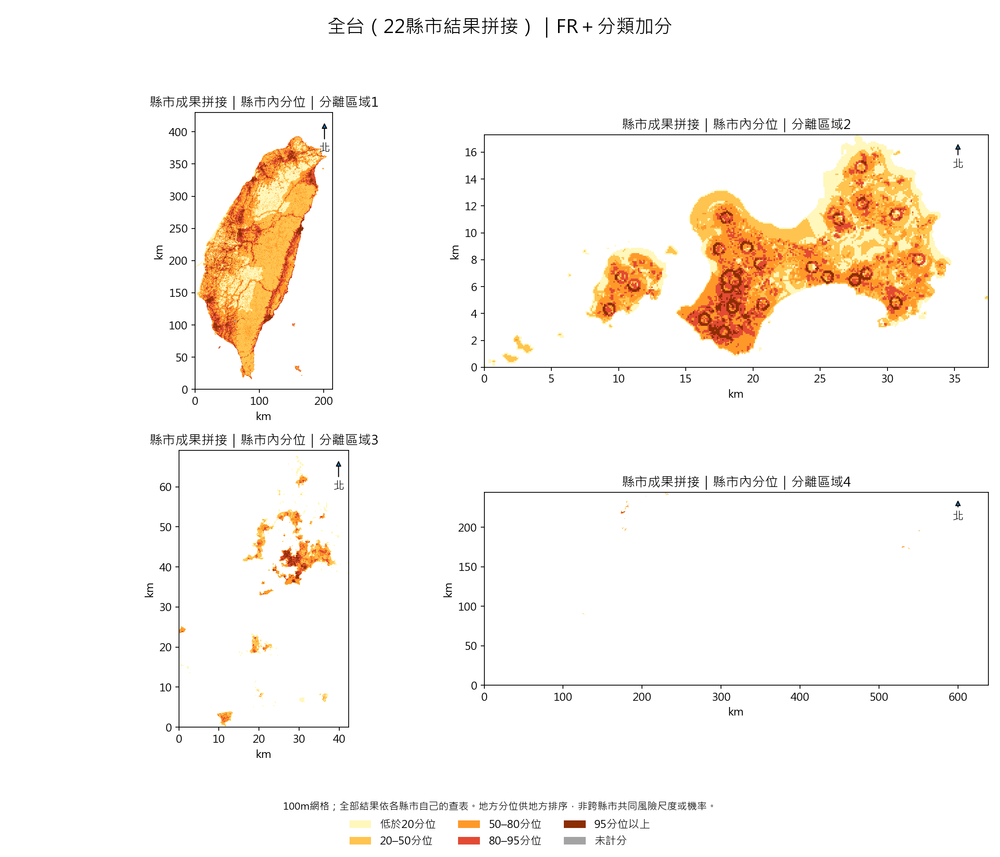
以下保留各縣市自己的原始q及因子總額A，每一列A合計8。沒有另外合成一組全台權重。
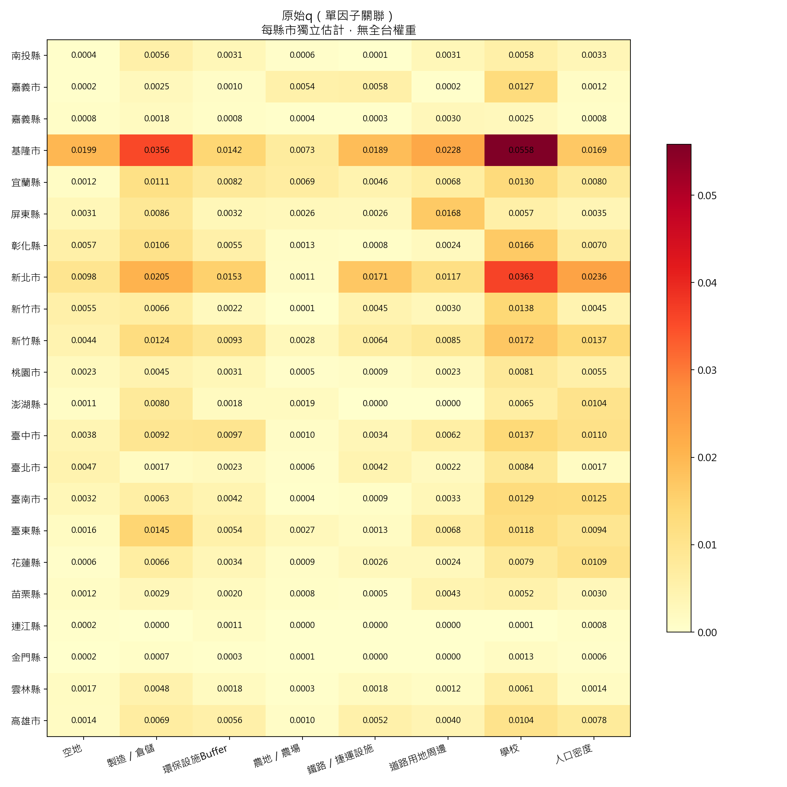
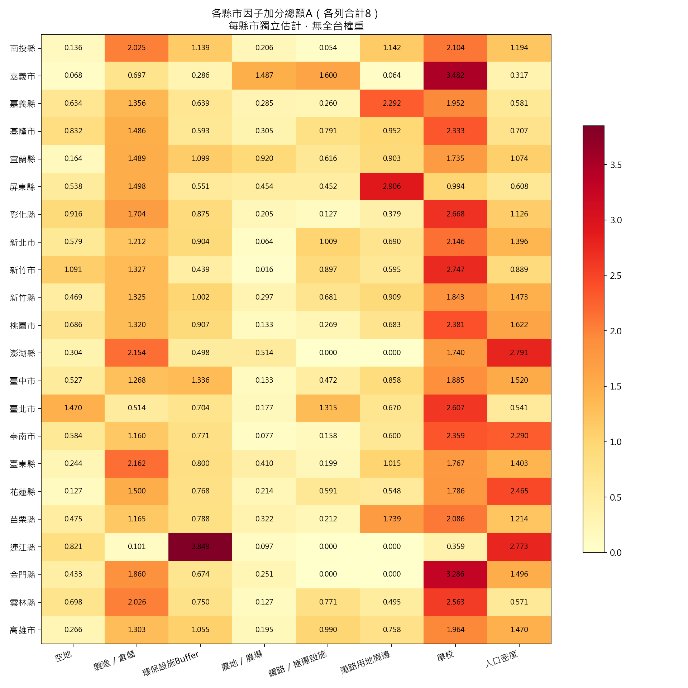
| 縣市 | 保留格數 | 共同有效格 | 排除格 | 有效通報 |
|---|---|---|---|---|
| 連江縣 | 3938 | 3938 | 0 | 1 |
| 金門縣 | 19407 | 19407 | 0 | 9 |
| 宜蘭縣 | 220998 | 220998 | 0 | 1064 |
| 新竹縣 | 141217 | 141217 | 0 | 1771 |
| 苗栗縣 | 182967 | 182967 | 0 | 452 |
| 彰化縣 | 124809 | 124809 | 0 | 4603 |
| 南投縣 | 409768 | 409768 | 0 | 574 |
| 雲林縣 | 140854 | 140854 | 0 | 1552 |
| 嘉義縣 | 195650 | 195650 | 0 | 773 |
| 屏東縣 | 281583 | 280977 | 606 | 1184 |
| 臺東縣 | 359698 | 359698 | 0 | 655 |
| 花蓮縣 | 461245 | 461245 | 0 | 401 |
| 澎湖縣 | 16731 | 16731 | 0 | 187 |
| 基隆市 | 13925 | 13925 | 0 | 1676 |
| 新竹市 | 12553 | 12553 | 0 | 461 |
| 嘉義市 | 5974 | 5974 | 0 | 638 |
| 臺北市 | 26985 | 26985 | 0 | 2054 |
| 高雄市 | 300254 | 300254 | 0 | 1358 |
| 新北市 | 207535 | 207535 | 0 | 4451 |
| 臺中市 | 224205 | 224205 | 0 | 2564 |
| 臺南市 | 226269 | 226269 | 0 | 5480 |
| 桃園市 | 121994 | 121994 | 0 | 2200 |
各縣市各取可計分測試格前10%，再合併涵蓋件數：A（FR＋分類加分）48.82%；B（原始FR加總）48.61%，差+0.202個百分點。這不是把地方原始分數混排後取全台前10%。
可比較 726,474 格、6,801件；排除593格、1件。連江縣訓練無通報，測試1件無法計分；金門縣測試0件，縣市涵蓋率不可估。
縣市前10%合併驗證CSV共同有效網格3,938格，通報1件。通報少於20件，排序非常不穩定。
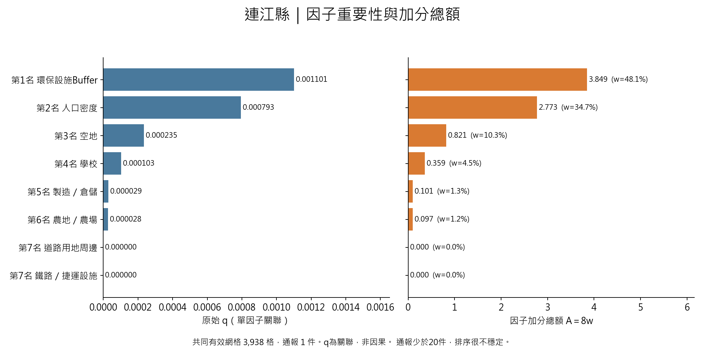
| 因子 | 原始q | 標準化w | 因子總額A | 並列名次 | 有效格數 | 通報數 |
|---|---|---|---|---|---|---|
| 環保設施Buffer | 0.001101 | 0.481105 | 3.848837 | 1.000000 | 3938 | 1 |
| 人口密度 | 0.000793 | 0.346574 | 2.772591 | 2.000000 | 3938 | 1 |
| 空地 | 0.000235 | 0.102603 | 0.820827 | 3.000000 | 3938 | 1 |
| 學校 | 0.000103 | 0.044873 | 0.358981 | 4.000000 | 3938 | 1 |
| 製造／倉儲 | 0.000029 | 0.012684 | 0.101473 | 5.000000 | 3938 | 1 |
| 農地／農場 | 0.000028 | 0.012162 | 0.097293 | 6.000000 | 3938 | 1 |
| 道路用地周邊 | 0.000000 | 0.000000 | 0.000000 | 7.000000 | 3938 | 1 |
| 鐵路／捷運設施 | 0.000000 | 0.000000 | 0.000000 | 7.000000 | 3938 | 1 |
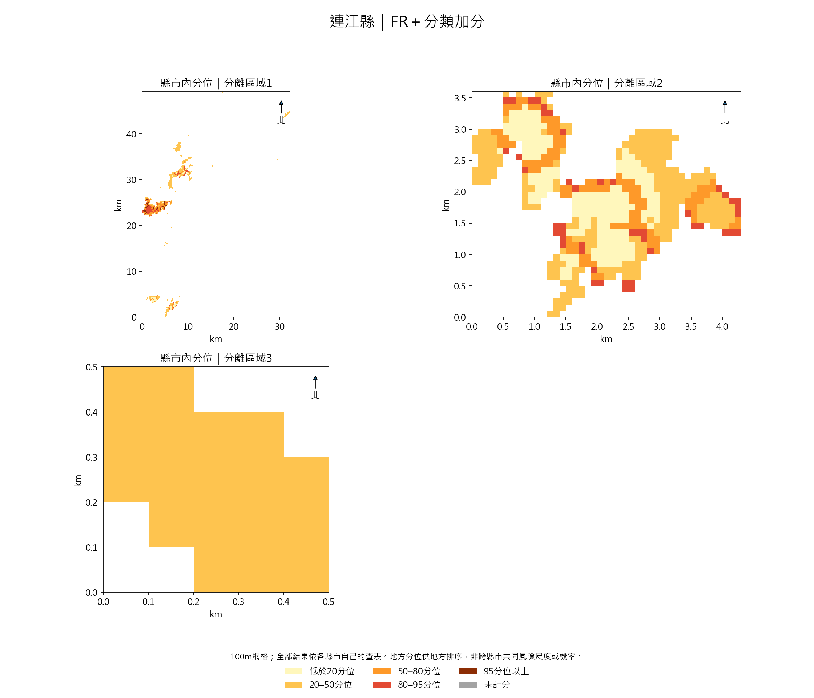
| 因子 | 級 | 分類 | 格數 | 通報數 | FR | A | 分類權重p | 分類加分B | 最終分數S |
|---|---|---|---|---|---|---|---|---|---|
| 空地 | 1 | 0% | 2046 | 1 | 1.924731 | 0.820827 | 1.000000 | 0.820827 | 2.745558 |
| 空地 | 2 | 0%＜占比＜100% | 1874 | 0 | 0.000000 | 0.820827 | 0.000000 | 0.000000 | 0.000000 |
| 空地 | 3 | 100% | 18 | 0 | 0.000000 | 0.820827 | 0.000000 | 0.000000 | 0.000000 |
| 製造／倉儲 | 0 | 無 | 3534 | 1 | 1.114318 | 0.101473 | 1.000000 | 0.101473 | 1.215791 |
| 製造／倉儲 | 1 | 有 | 404 | 0 | 0.000000 | 0.101473 | 0.000000 | 0.000000 | 0.000000 |
| 環保設施Buffer | 1 | 0–100m | 169 | 0 | 0.000000 | 3.848837 | 0.000000 | 0.000000 | 0.000000 |
| 環保設施Buffer | 2 | >100–300m | 646 | 0 | 0.000000 | 3.848837 | 0.000000 | 0.000000 | 0.000000 |
| 環保設施Buffer | 3 | >300–500m | 738 | 1 | 5.336043 | 3.848837 | 1.000000 | 3.848837 | 9.184880 |
| 環保設施Buffer | 4 | >500–1,000m | 1275 | 0 | 0.000000 | 3.848837 | 0.000000 | 0.000000 | 0.000000 |
| 環保設施Buffer | 5 | >1,000m | 1110 | 0 | 0.000000 | 3.848837 | 0.000000 | 0.000000 | 0.000000 |
| 農地／農場 | 1 | 0% | 3549 | 1 | 1.109608 | 0.097293 | 1.000000 | 0.097293 | 1.206901 |
| 農地／農場 | 2 | 0%＜占比＜100% | 389 | 0 | 0.000000 | 0.097293 | 0.000000 | 0.000000 | 0.000000 |
| 農地／農場 | 3 | 100% | 0 | 0 | 缺值／不可估 | 0.097293 | 缺值／不可估 | 缺值／不可估 | 缺值／不可估 |
| 鐵路／捷運設施 | 1 | 0–100m | 0 | 0 | 缺值／不可估 | 0.000000 | 缺值／不可估 | 缺值／不可估 | 缺值／不可估 |
| 鐵路／捷運設施 | 2 | >100–300m | 0 | 0 | 缺值／不可估 | 0.000000 | 缺值／不可估 | 缺值／不可估 | 缺值／不可估 |
| 鐵路／捷運設施 | 3 | >300–500m | 0 | 0 | 缺值／不可估 | 0.000000 | 缺值／不可估 | 缺值／不可估 | 缺值／不可估 |
| 鐵路／捷運設施 | 4 | >500–1,000m | 0 | 0 | 缺值／不可估 | 0.000000 | 缺值／不可估 | 缺值／不可估 | 缺值／不可估 |
| 鐵路／捷運設施 | 5 | >1,000m | 3938 | 1 | 1.000000 | 0.000000 | 1.000000 | 0.000000 | 1.000000 |
| 道路用地周邊 | 1 | 0–100m | 0 | 0 | 缺值／不可估 | 0.000000 | 缺值／不可估 | 缺值／不可估 | 缺值／不可估 |
| 道路用地周邊 | 2 | >100–300m | 0 | 0 | 缺值／不可估 | 0.000000 | 缺值／不可估 | 缺值／不可估 | 缺值／不可估 |
| 道路用地周邊 | 3 | >300–500m | 0 | 0 | 缺值／不可估 | 0.000000 | 缺值／不可估 | 缺值／不可估 | 缺值／不可估 |
| 道路用地周邊 | 4 | >500–1,000m | 0 | 0 | 缺值／不可估 | 0.000000 | 缺值／不可估 | 缺值／不可估 | 缺值／不可估 |
| 道路用地周邊 | 5 | >1,000m | 3938 | 1 | 1.000000 | 0.000000 | 1.000000 | 0.000000 | 1.000000 |
| 學校 | 1 | 0–100m | 15 | 0 | 0.000000 | 0.358981 | 0.000000 | 0.000000 | 0.000000 |
| 學校 | 2 | >100–300m | 128 | 0 | 0.000000 | 0.358981 | 0.000000 | 0.000000 | 0.000000 |
| 學校 | 3 | >300–500m | 204 | 0 | 0.000000 | 0.358981 | 0.000000 | 0.000000 | 0.000000 |
| 學校 | 4 | >500–1,000m | 787 | 0 | 0.000000 | 0.358981 | 0.000000 | 0.000000 | 0.000000 |
| 學校 | 5 | >1,000m | 2804 | 1 | 1.404422 | 0.358981 | 1.000000 | 0.358981 | 1.763403 |
| 人口密度 | 1 | 0.000760–108.329169 人/km² | 722 | 0 | 0.000000 | 2.772591 | 0.000000 | 0.000000 | 0.000000 |
| 人口密度 | 2 | >108.329169–248.124022 人/km² | 485 | 0 | 0.000000 | 2.772591 | 0.000000 | 0.000000 | 0.000000 |
| 人口密度 | 3 | >248.124022–417.737923 人/km² | 1698 | 0 | 0.000000 | 2.772591 | 0.000000 | 0.000000 | 0.000000 |
| 人口密度 | 4 | >417.737923–629.524106 人/km² | 78 | 0 | 0.000000 | 2.772591 | 0.000000 | 0.000000 | 0.000000 |
| 人口密度 | 5 | >629.524106–740.351400 人/km² | 955 | 1 | 4.123560 | 2.772591 | 1.000000 | 2.772591 | 6.896151 |
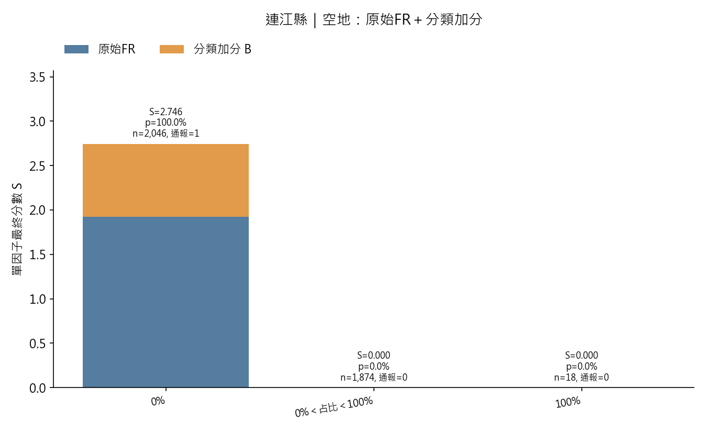
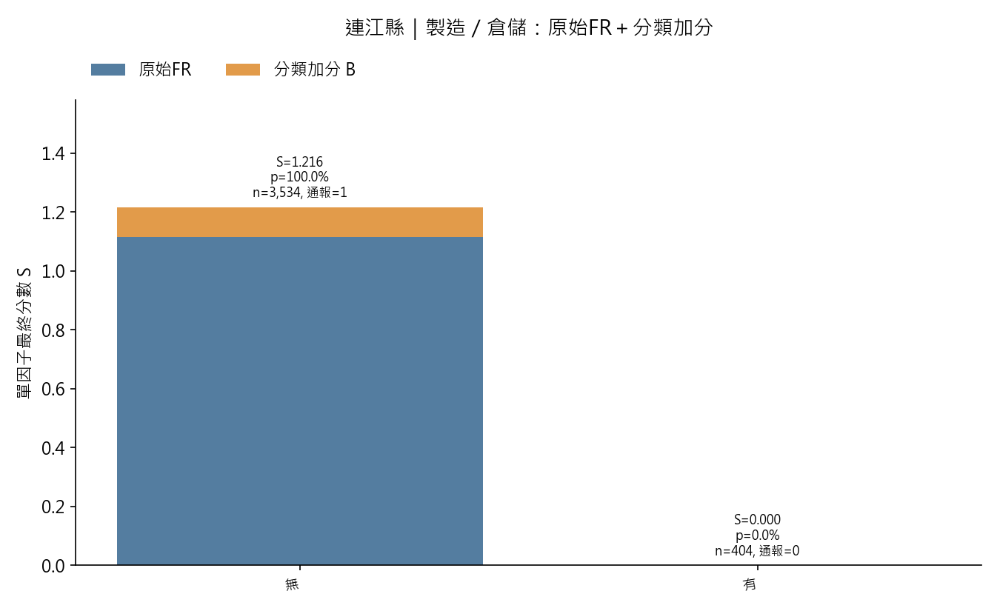
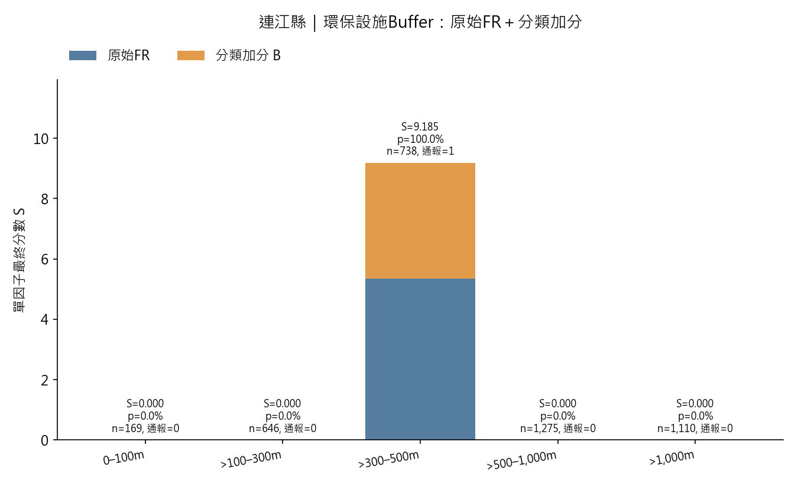
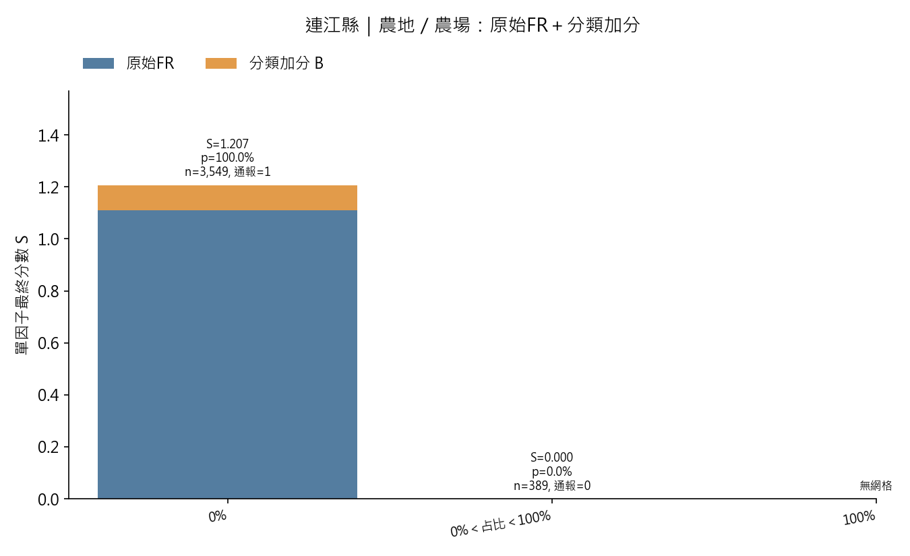
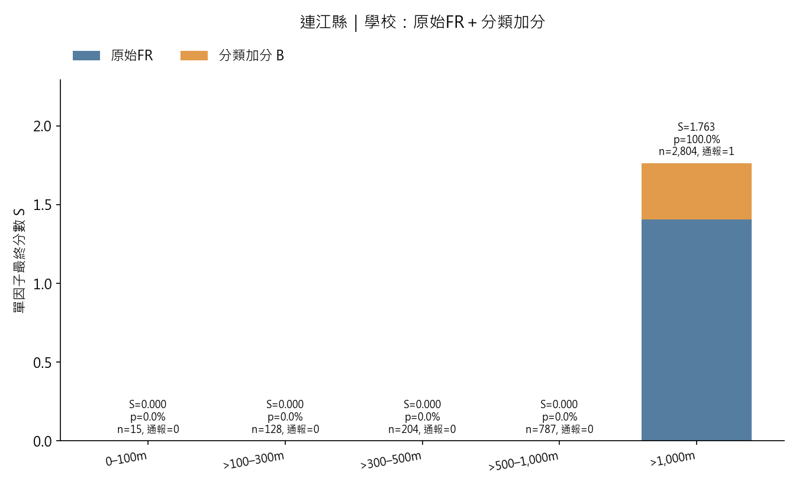
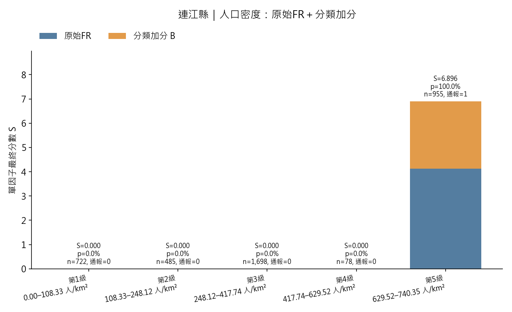
涵蓋率無法估計。訓練沒有通報。 共同可比較測試0格、0件；排除593格、1件。測試通報少於20件，結果不穩定。
縣市驗證CSV共同有效網格19,407格，通報9件。通報少於20件，排序非常不穩定。
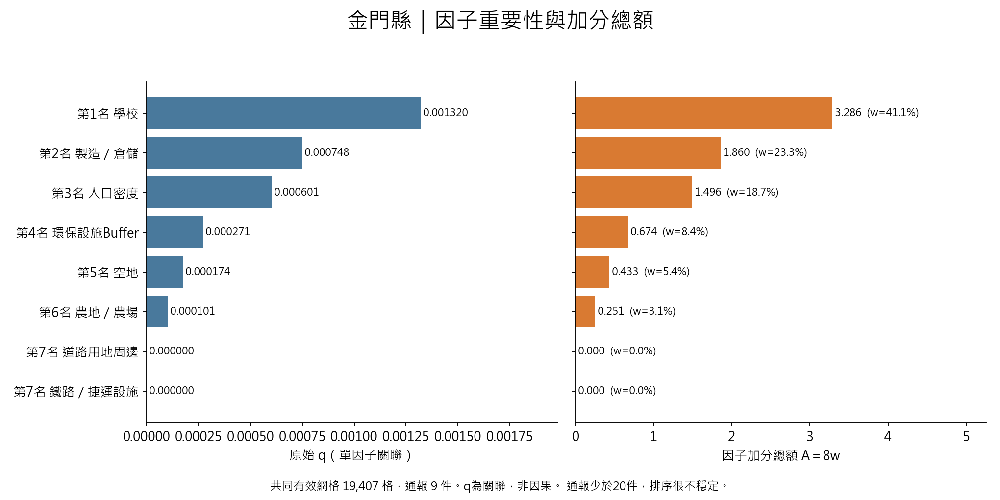
| 因子 | 原始q | 標準化w | 因子總額A | 並列名次 | 有效格數 | 通報數 |
|---|---|---|---|---|---|---|
| 學校 | 0.001320 | 0.410688 | 3.285504 | 1.000000 | 19407 | 9 |
| 製造／倉儲 | 0.000748 | 0.232528 | 1.860221 | 2.000000 | 19407 | 9 |
| 人口密度 | 0.000601 | 0.187039 | 1.496311 | 3.000000 | 19407 | 9 |
| 環保設施Buffer | 0.000271 | 0.084299 | 0.674391 | 4.000000 | 19407 | 9 |
| 空地 | 0.000174 | 0.054109 | 0.432871 | 5.000000 | 19407 | 9 |
| 農地／農場 | 0.000101 | 0.031338 | 0.250703 | 6.000000 | 19407 | 9 |
| 道路用地周邊 | 0.000000 | 0.000000 | 0.000000 | 7.000000 | 19407 | 9 |
| 鐵路／捷運設施 | 0.000000 | 0.000000 | 0.000000 | 7.000000 | 19407 | 9 |
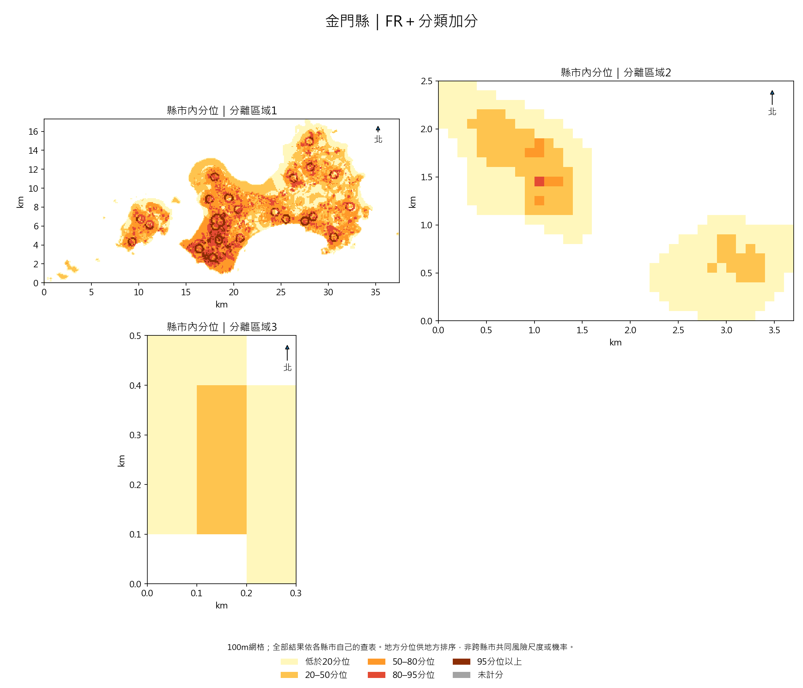
| 因子 | 級 | 分類 | 格數 | 通報數 | FR | A | 分類權重p | 分類加分B | 最終分數S |
|---|---|---|---|---|---|---|---|---|---|
| 空地 | 1 | 0% | 10135 | 2 | 0.425522 | 0.432871 | 0.205392 | 0.088908 | 0.514430 |
| 空地 | 2 | 0%＜占比＜100% | 9169 | 7 | 1.646236 | 0.432871 | 0.794608 | 0.343962 | 1.990198 |
| 空地 | 3 | 100% | 103 | 0 | 0.000000 | 0.432871 | 0.000000 | 0.000000 | 0.000000 |
| 製造／倉儲 | 0 | 無 | 16895 | 4 | 0.510526 | 1.860221 | 0.106302 | 0.197746 | 0.708271 |
| 製造／倉儲 | 1 | 有 | 2512 | 5 | 4.292065 | 1.860221 | 0.893698 | 1.662475 | 5.954540 |
| 環保設施Buffer | 1 | 0–100m | 777 | 0 | 0.000000 | 0.674391 | 0.000000 | 0.000000 | 0.000000 |
| 環保設施Buffer | 2 | >100–300m | 3586 | 3 | 1.803960 | 0.674391 | 0.384734 | 0.259461 | 2.063421 |
| 環保設施Buffer | 3 | >300–500m | 4341 | 4 | 1.986946 | 0.674391 | 0.423760 | 0.285780 | 2.272726 |
| 環保設施Buffer | 4 | >500–1,000m | 7065 | 1 | 0.305213 | 0.674391 | 0.065094 | 0.043898 | 0.349112 |
| 環保設施Buffer | 5 | >1,000m | 3638 | 1 | 0.592725 | 0.674391 | 0.126412 | 0.085251 | 0.677976 |
| 農地／農場 | 1 | 0% | 10898 | 3 | 0.593595 | 0.250703 | 0.279662 | 0.070112 | 0.663707 |
| 農地／農場 | 2 | 0%＜占比＜100% | 8462 | 6 | 1.528953 | 0.250703 | 0.720338 | 0.180591 | 1.709544 |
| 農地／農場 | 3 | 100% | 47 | 0 | 0.000000 | 0.250703 | 0.000000 | 0.000000 | 0.000000 |
| 鐵路／捷運設施 | 1 | 0–100m | 0 | 0 | 缺值／不可估 | 0.000000 | 缺值／不可估 | 缺值／不可估 | 缺值／不可估 |
| 鐵路／捷運設施 | 2 | >100–300m | 0 | 0 | 缺值／不可估 | 0.000000 | 缺值／不可估 | 缺值／不可估 | 缺值／不可估 |
| 鐵路／捷運設施 | 3 | >300–500m | 0 | 0 | 缺值／不可估 | 0.000000 | 缺值／不可估 | 缺值／不可估 | 缺值／不可估 |
| 鐵路／捷運設施 | 4 | >500–1,000m | 0 | 0 | 缺值／不可估 | 0.000000 | 缺值／不可估 | 缺值／不可估 | 缺值／不可估 |
| 鐵路／捷運設施 | 5 | >1,000m | 19407 | 9 | 1.000000 | 0.000000 | 1.000000 | 0.000000 | 1.000000 |
| 道路用地周邊 | 1 | 0–100m | 0 | 0 | 缺值／不可估 | 0.000000 | 缺值／不可估 | 缺值／不可估 | 缺值／不可估 |
| 道路用地周邊 | 2 | >100–300m | 0 | 0 | 缺值／不可估 | 0.000000 | 缺值／不可估 | 缺值／不可估 | 缺值／不可估 |
| 道路用地周邊 | 3 | >300–500m | 0 | 0 | 缺值／不可估 | 0.000000 | 缺值／不可估 | 缺值／不可估 | 缺值／不可估 |
| 道路用地周邊 | 4 | >500–1,000m | 0 | 0 | 缺值／不可估 | 0.000000 | 缺值／不可估 | 缺值／不可估 | 缺值／不可估 |
| 道路用地周邊 | 5 | >1,000m | 19407 | 9 | 1.000000 | 0.000000 | 1.000000 | 0.000000 | 1.000000 |
| 學校 | 1 | 0–100m | 79 | 0 | 0.000000 | 3.285504 | 0.000000 | 0.000000 | 0.000000 |
| 學校 | 2 | >100–300m | 625 | 0 | 0.000000 | 3.285504 | 0.000000 | 0.000000 | 0.000000 |
| 學校 | 3 | >300–500m | 1156 | 4 | 7.461361 | 3.285504 | 0.814281 | 2.675322 | 10.136683 |
| 學校 | 4 | >500–1,000m | 4739 | 3 | 1.365056 | 3.285504 | 0.148973 | 0.489450 | 1.854506 |
| 學校 | 5 | >1,000m | 12808 | 2 | 0.336717 | 3.285504 | 0.036747 | 0.120732 | 0.457449 |
| 人口密度 | 1 | 0.005613–230.529921 人/km² | 806 | 0 | 0.000000 | 1.496311 | 0.000000 | 0.000000 | 0.000000 |
| 人口密度 | 2 | >230.529921–483.959668 人/km² | 5865 | 0 | 0.000000 | 1.496311 | 0.000000 | 0.000000 | 0.000000 |
| 人口密度 | 3 | >483.959668–689.614512 人/km² | 2229 | 1 | 0.967399 | 1.496311 | 0.164192 | 0.245682 | 1.213081 |
| 人口密度 | 4 | >689.614512–1,336.261273 人/km² | 8286 | 4 | 1.040953 | 1.496311 | 0.176676 | 0.264362 | 1.305314 |
| 人口密度 | 5 | >1,336.261273–1,913.979844 人/km² | 2221 | 4 | 3.883536 | 1.496311 | 0.659133 | 0.986267 | 4.869803 |
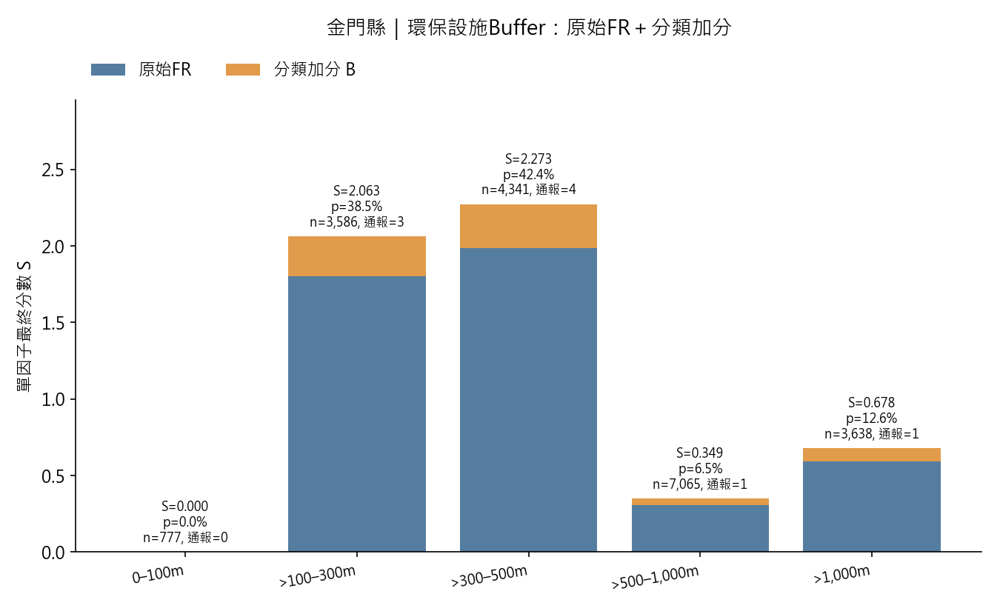
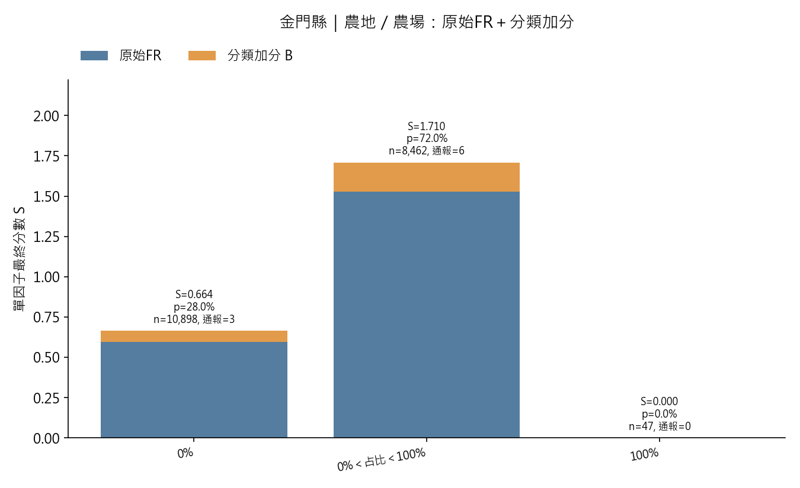
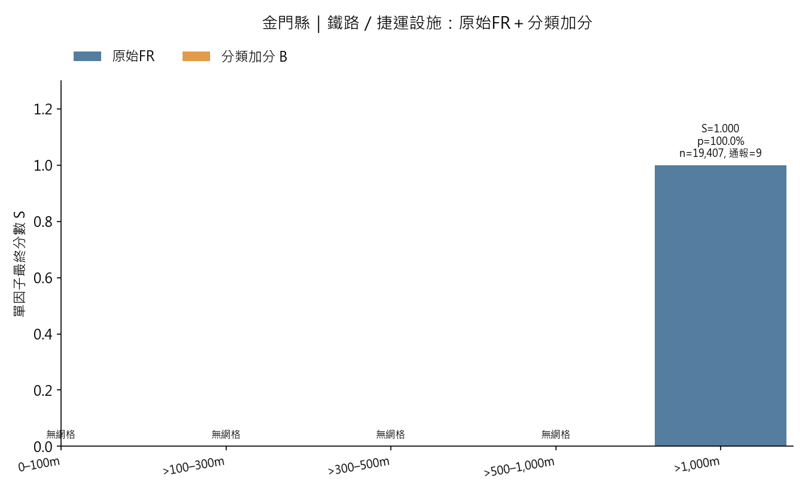
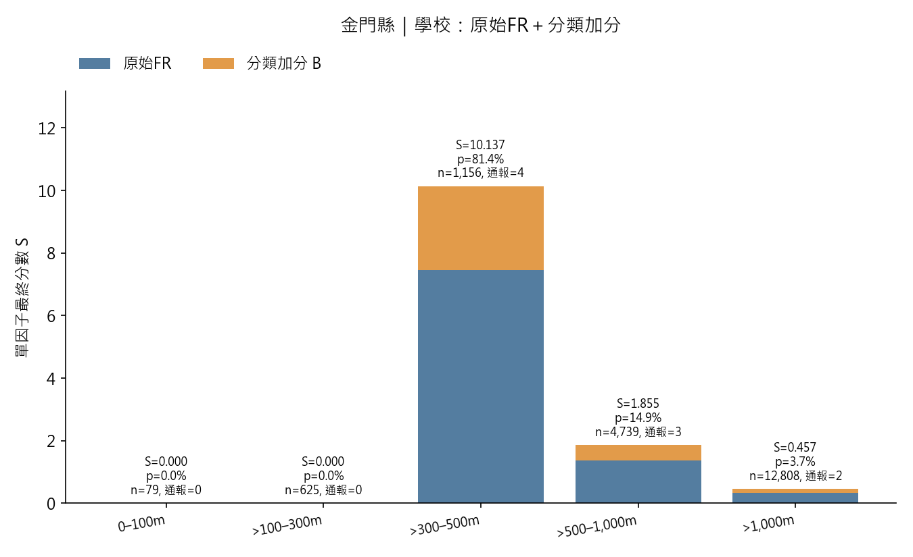
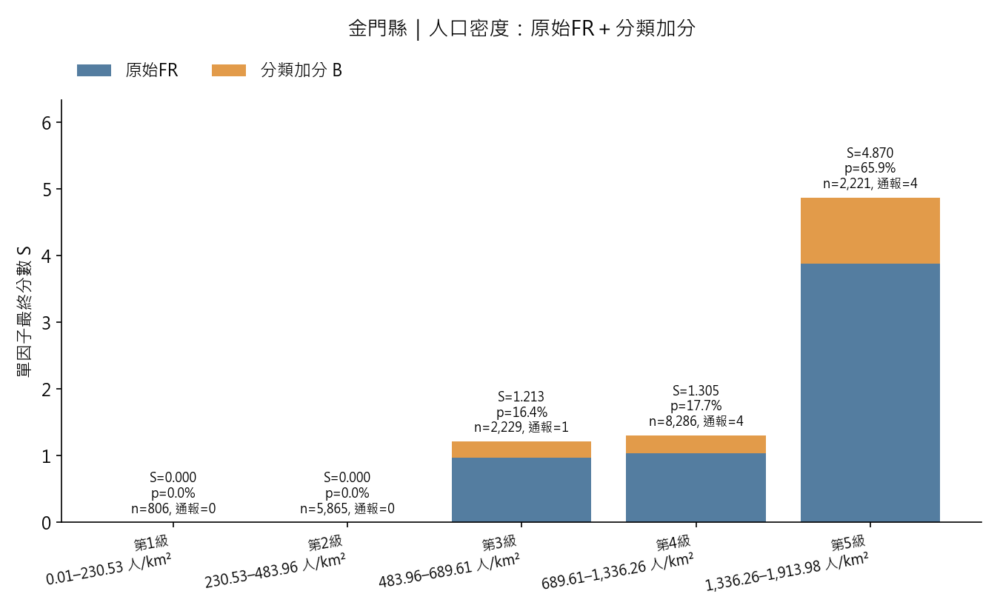
涵蓋率無法估計。測試沒有通報。 共同可比較測試4,199格、0件；排除0格、0件。測試通報少於20件，結果不穩定。
縣市驗證CSV共同有效網格220,998格，通報1,064件。
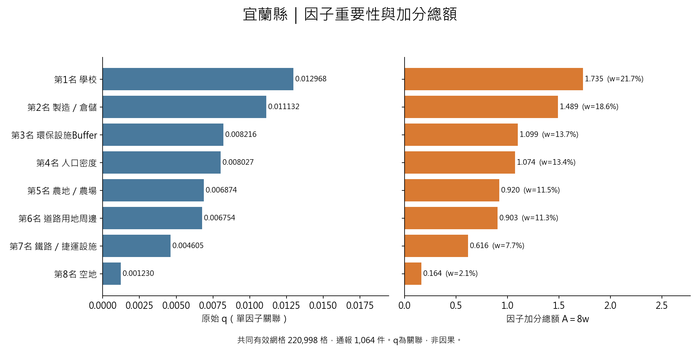
| 因子 | 原始q | 標準化w | 因子總額A | 並列名次 | 有效格數 | 通報數 |
|---|---|---|---|---|---|---|
| 學校 | 0.012968 | 0.216840 | 1.734716 | 1.000000 | 220998 | 1064 |
| 製造／倉儲 | 0.011132 | 0.186136 | 1.489087 | 2.000000 | 220998 | 1064 |
| 環保設施Buffer | 0.008216 | 0.137371 | 1.098971 | 3.000000 | 220998 | 1064 |
| 人口密度 | 0.008027 | 0.134215 | 1.073718 | 4.000000 | 220998 | 1064 |
| 農地／農場 | 0.006874 | 0.114941 | 0.919525 | 5.000000 | 220998 | 1064 |
| 道路用地周邊 | 0.006754 | 0.112933 | 0.903463 | 6.000000 | 220998 | 1064 |
| 鐵路／捷運設施 | 0.004605 | 0.077005 | 0.616042 | 7.000000 | 220998 | 1064 |
| 空地 | 0.001230 | 0.020560 | 0.164477 | 8.000000 | 220998 | 1064 |
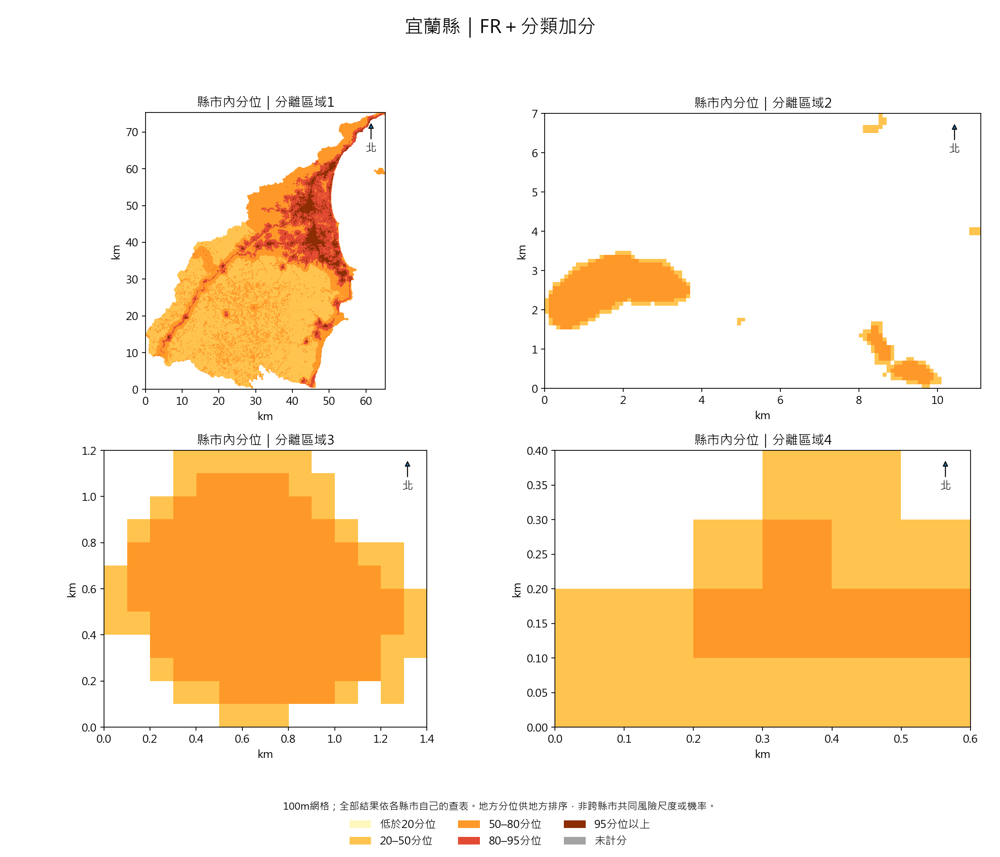
| 因子 | 級 | 分類 | 格數 | 通報數 | FR | A | 分類權重p | 分類加分B | 最終分數S |
|---|---|---|---|---|---|---|---|---|---|
| 空地 | 1 | 0% | 176448 | 579 | 0.681567 | 0.164477 | 0.144799 | 0.023816 | 0.705383 |
| 空地 | 2 | 0%＜占比＜100% | 44196 | 482 | 2.265222 | 0.164477 | 0.481245 | 0.079154 | 2.344376 |
| 空地 | 3 | 100% | 354 | 3 | 1.760211 | 0.164477 | 0.373956 | 0.061507 | 1.821718 |
| 製造／倉儲 | 0 | 無 | 211319 | 602 | 0.591704 | 1.489087 | 0.056321 | 0.083867 | 0.675571 |
| 製造／倉儲 | 1 | 有 | 9679 | 462 | 9.914212 | 1.489087 | 0.943679 | 1.405220 | 11.319432 |
| 環保設施Buffer | 1 | 0–100m | 1028 | 44 | 8.890092 | 1.098971 | 0.356355 | 0.391624 | 9.281717 |
| 環保設施Buffer | 2 | >100–300m | 5169 | 185 | 7.433818 | 1.098971 | 0.297981 | 0.327473 | 7.761290 |
| 環保設施Buffer | 3 | >300–500m | 8007 | 197 | 5.110261 | 1.098971 | 0.204842 | 0.225116 | 5.335377 |
| 環保設施Buffer | 4 | >500–1,000m | 21580 | 329 | 3.166585 | 1.098971 | 0.126931 | 0.139494 | 3.306079 |
| 環保設施Buffer | 5 | >1,000m | 185214 | 309 | 0.346522 | 1.098971 | 0.013890 | 0.015265 | 0.361787 |
| 農地／農場 | 1 | 0% | 179060 | 247 | 0.286513 | 0.919525 | 0.055360 | 0.050905 | 0.337418 |
| 農地／農場 | 2 | 0%＜占比＜100% | 40506 | 812 | 4.163738 | 0.919525 | 0.804513 | 0.739770 | 4.903508 |
| 農地／農場 | 3 | 100% | 1432 | 5 | 0.725227 | 0.919525 | 0.140127 | 0.128851 | 0.854077 |
| 鐵路／捷運設施 | 1 | 0–100m | 1442 | 61 | 8.786406 | 0.616042 | 0.336464 | 0.207276 | 8.993682 |
| 鐵路／捷運設施 | 2 | >100–300m | 2759 | 109 | 8.205811 | 0.616042 | 0.314230 | 0.193579 | 8.399390 |
| 鐵路／捷運設施 | 3 | >300–500m | 2826 | 71 | 5.218346 | 0.616042 | 0.199830 | 0.123103 | 5.341450 |
| 鐵路／捷運設施 | 4 | >500–1,000m | 7295 | 112 | 3.188889 | 0.616042 | 0.122114 | 0.075227 | 3.264117 |
| 鐵路／捷運設施 | 5 | >1,000m | 206676 | 711 | 0.714540 | 0.616042 | 0.027362 | 0.016856 | 0.731396 |
| 道路用地周邊 | 1 | 0–100m | 7471 | 274 | 7.617607 | 0.903463 | 0.501132 | 0.452754 | 8.070361 |
| 道路用地周邊 | 2 | >100–300m | 12224 | 175 | 2.973524 | 0.903463 | 0.195616 | 0.176732 | 3.150256 |
| 道路用地周邊 | 3 | >300–500m | 10628 | 109 | 2.130206 | 0.903463 | 0.140138 | 0.126609 | 2.256816 |
| 道路用地周邊 | 4 | >500–1,000m | 21730 | 223 | 2.131532 | 0.903463 | 0.140225 | 0.126688 | 2.258220 |
| 道路用地周邊 | 5 | >1,000m | 168945 | 283 | 0.347927 | 0.903463 | 0.022889 | 0.020679 | 0.368606 |
| 學校 | 1 | 0–100m | 685 | 54 | 16.373816 | 1.734716 | 0.434725 | 0.754125 | 17.127941 |
| 學校 | 2 | >100–300m | 4025 | 230 | 11.868851 | 1.734716 | 0.315118 | 0.546641 | 12.415492 |
| 學校 | 3 | >300–500m | 5973 | 179 | 6.224540 | 1.734716 | 0.165262 | 0.286682 | 6.511222 |
| 學校 | 4 | >500–1,000m | 18699 | 254 | 2.821383 | 1.734716 | 0.074908 | 0.129944 | 2.951327 |
| 學校 | 5 | >1,000m | 191616 | 347 | 0.376136 | 1.734716 | 0.009986 | 0.017324 | 0.393459 |
| 人口密度 | 1 | 0.000073–150.650007 人/km² | 148992 | 69 | 0.096191 | 1.073718 | 0.003727 | 0.004001 | 0.100192 |
| 人口密度 | 2 | >150.650007–531.753511 人/km² | 52359 | 530 | 2.102477 | 1.073718 | 0.081456 | 0.087461 | 2.189937 |
| 人口密度 | 3 | >531.753511–1,924.698947 人/km² | 15428 | 299 | 4.025393 | 1.073718 | 0.155955 | 0.167452 | 4.192844 |
| 人口密度 | 4 | >1,924.698947–4,585.627164 人/km² | 3129 | 97 | 6.438918 | 1.073718 | 0.249461 | 0.267851 | 6.706769 |
| 人口密度 | 5 | >4,585.627164–6,201.945052 人/km² | 1090 | 69 | 13.148291 | 1.073718 | 0.509401 | 0.546953 | 13.695244 |
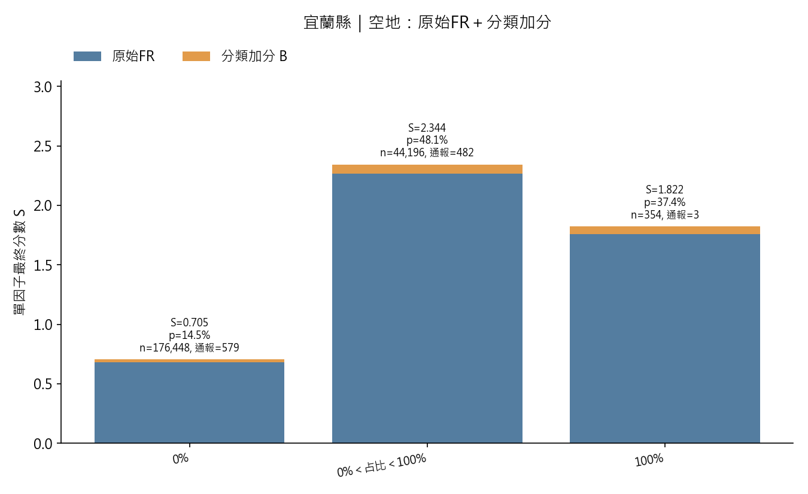
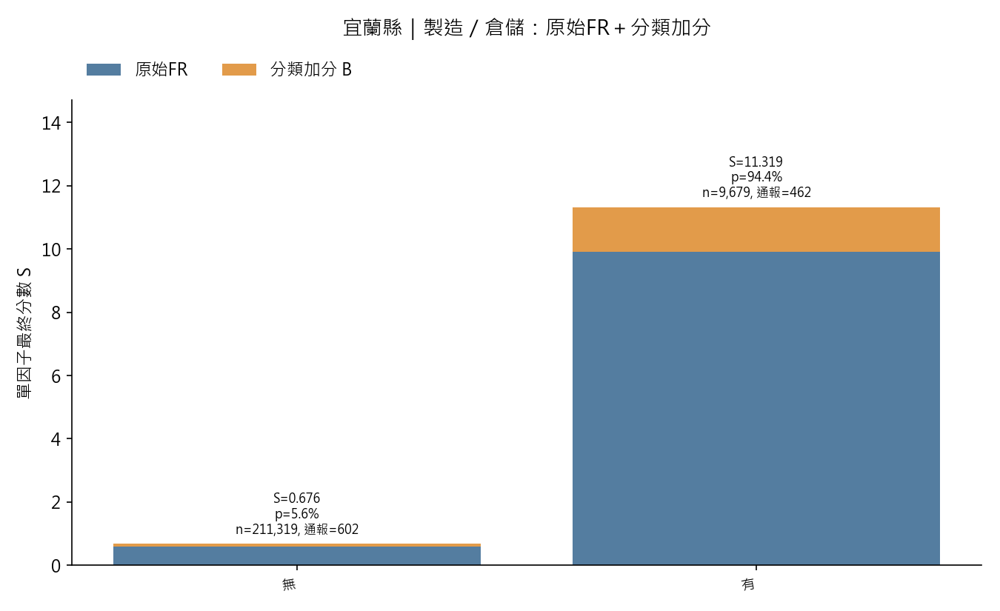
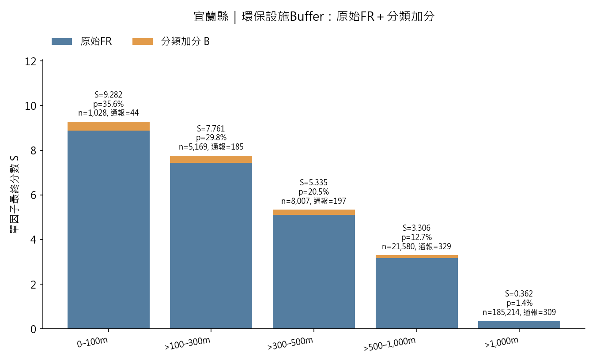
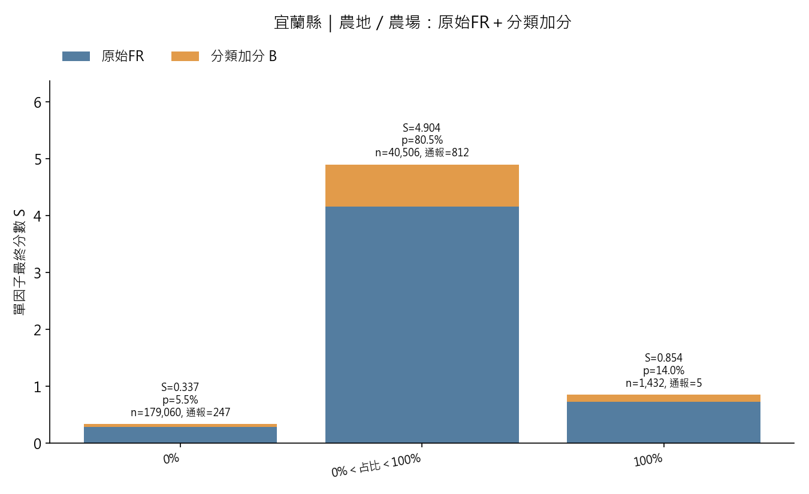
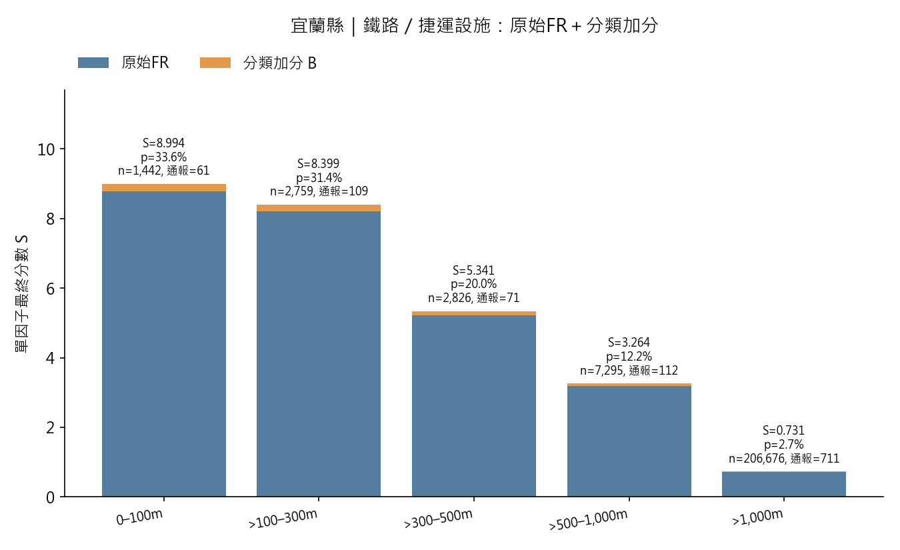
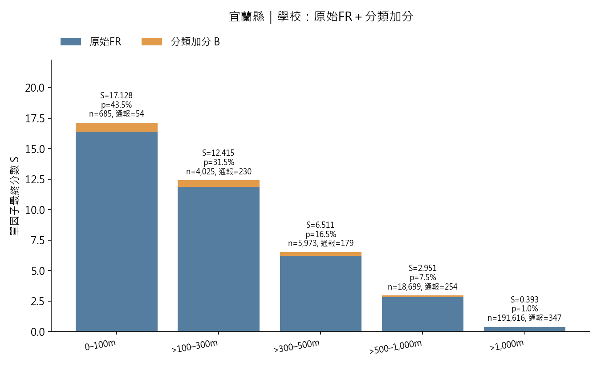
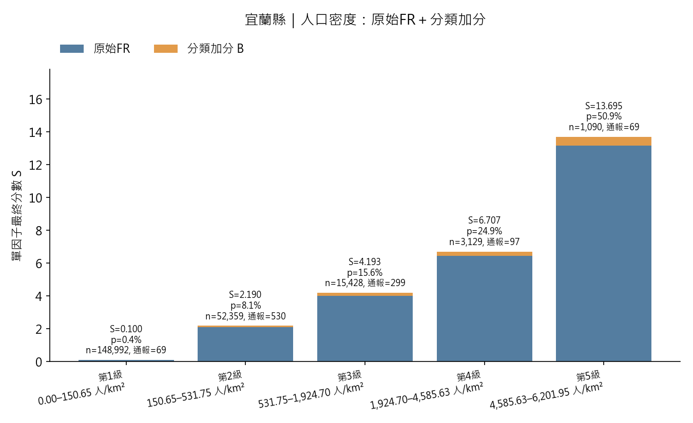
A=77.14%，B=77.14%，差+0.000個百分點。 共同可比較測試33,123格、35件；排除0格、0件。
縣市驗證CSV共同有效網格141,217格，通報1,771件。
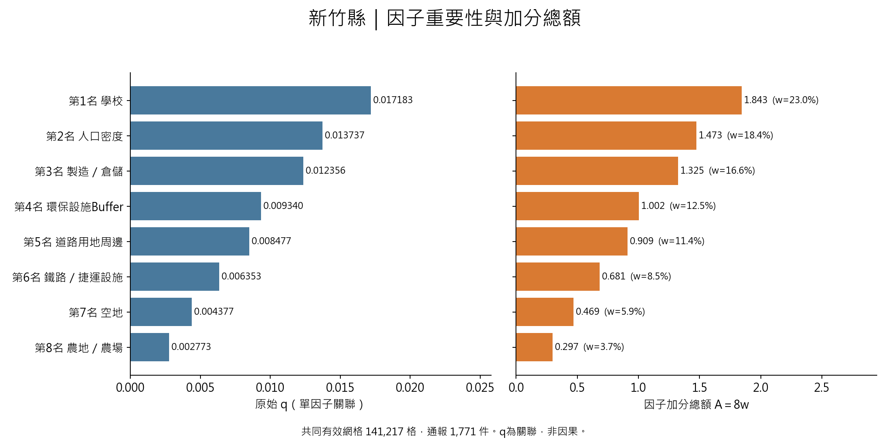
| 因子 | 原始q | 標準化w | 因子總額A | 並列名次 | 有效格數 | 通報數 |
|---|---|---|---|---|---|---|
| 學校 | 0.017183 | 0.230344 | 1.842753 | 1.000000 | 141217 | 1771 |
| 人口密度 | 0.013737 | 0.184151 | 1.473208 | 2.000000 | 141217 | 1771 |
| 製造／倉儲 | 0.012356 | 0.165639 | 1.325112 | 3.000000 | 141217 | 1771 |
| 環保設施Buffer | 0.009340 | 0.125202 | 1.001620 | 4.000000 | 141217 | 1771 |
| 道路用地周邊 | 0.008477 | 0.113643 | 0.909144 | 5.000000 | 141217 | 1771 |
| 鐵路／捷運設施 | 0.006353 | 0.085169 | 0.681353 | 6.000000 | 141217 | 1771 |
| 空地 | 0.004377 | 0.058673 | 0.469386 | 7.000000 | 141217 | 1771 |
| 農地／農場 | 0.002773 | 0.037178 | 0.297424 | 8.000000 | 141217 | 1771 |
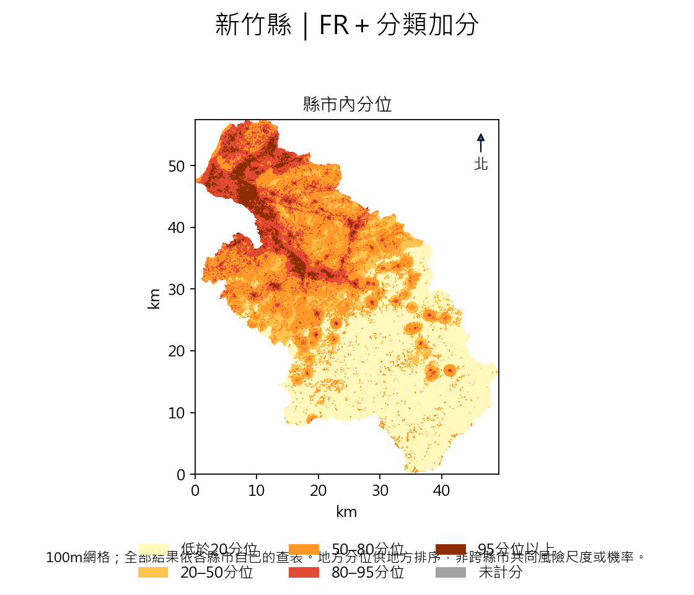
| 因子 | 級 | 分類 | 格數 | 通報數 | FR | A | 分類權重p | 分類加分B | 最終分數S |
|---|---|---|---|---|---|---|---|---|---|
| 空地 | 1 | 0% | 118435 | 938 | 0.631526 | 0.469386 | 0.145816 | 0.068444 | 0.699970 |
| 空地 | 2 | 0%＜占比＜100% | 22679 | 832 | 2.925283 | 0.469386 | 0.675434 | 0.317039 | 3.242322 |
| 空地 | 3 | 100% | 103 | 1 | 0.774161 | 0.469386 | 0.178750 | 0.083903 | 0.858064 |
| 製造／倉儲 | 0 | 無 | 125535 | 787 | 0.499894 | 1.325112 | 0.090836 | 0.120368 | 0.620262 |
| 製造／倉儲 | 1 | 有 | 15682 | 984 | 5.003364 | 1.325112 | 0.909164 | 1.204744 | 6.208108 |
| 環保設施Buffer | 1 | 0–100m | 1232 | 106 | 6.860623 | 1.001620 | 0.423675 | 0.424361 | 7.284985 |
| 環保設施Buffer | 2 | >100–300m | 6522 | 360 | 4.401393 | 1.001620 | 0.271806 | 0.272247 | 4.673639 |
| 環保設施Buffer | 3 | >300–500m | 9874 | 369 | 2.979900 | 1.001620 | 0.184023 | 0.184321 | 3.164220 |
| 環保設施Buffer | 4 | >500–1,000m | 27337 | 563 | 1.642200 | 1.001620 | 0.101413 | 0.101578 | 1.743777 |
| 環保設施Buffer | 5 | >1,000m | 96252 | 373 | 0.309006 | 1.001620 | 0.019083 | 0.019113 | 0.328120 |
| 農地／農場 | 1 | 0% | 90242 | 567 | 0.501006 | 0.297424 | 0.193534 | 0.057562 | 0.558567 |
| 農地／農場 | 2 | 0%＜占比＜100% | 50556 | 1203 | 1.897411 | 0.297424 | 0.732952 | 0.217998 | 2.115408 |
| 農地／農場 | 3 | 100% | 419 | 1 | 0.190307 | 0.297424 | 0.073514 | 0.021865 | 0.212172 |
| 鐵路／捷運設施 | 1 | 0–100m | 854 | 74 | 6.909431 | 0.681353 | 0.332888 | 0.226814 | 7.136245 |
| 鐵路／捷運設施 | 2 | >100–300m | 2065 | 130 | 5.019861 | 0.681353 | 0.241851 | 0.164786 | 5.184647 |
| 鐵路／捷運設施 | 3 | >300–500m | 2288 | 126 | 4.391197 | 0.681353 | 0.211562 | 0.144149 | 4.535346 |
| 鐵路／捷運設施 | 4 | >500–1,000m | 6058 | 283 | 3.724994 | 0.681353 | 0.179466 | 0.122279 | 3.847273 |
| 鐵路／捷運設施 | 5 | >1,000m | 129952 | 1158 | 0.710549 | 0.681353 | 0.034233 | 0.023325 | 0.733874 |
| 道路用地周邊 | 1 | 0–100m | 3307 | 224 | 5.401100 | 0.909144 | 0.345857 | 0.314434 | 5.715535 |
| 道路用地周邊 | 2 | >100–300m | 5206 | 230 | 3.522833 | 0.909144 | 0.225583 | 0.205088 | 3.727921 |
| 道路用地周邊 | 3 | >300–500m | 4866 | 191 | 3.129894 | 0.909144 | 0.200422 | 0.182212 | 3.312107 |
| 道路用地周邊 | 4 | >500–1,000m | 10390 | 400 | 3.069820 | 0.909144 | 0.196575 | 0.178715 | 3.248534 |
| 道路用地周邊 | 5 | >1,000m | 117448 | 726 | 0.492901 | 0.909144 | 0.031563 | 0.028695 | 0.521596 |
| 學校 | 1 | 0–100m | 999 | 151 | 12.052576 | 1.842753 | 0.497119 | 0.916068 | 12.968644 |
| 學校 | 2 | >100–300m | 5020 | 437 | 6.941385 | 1.842753 | 0.286303 | 0.527587 | 7.468972 |
| 學校 | 3 | >300–500m | 6723 | 261 | 3.095607 | 1.842753 | 0.127681 | 0.235285 | 3.330892 |
| 學校 | 4 | >500–1,000m | 21378 | 492 | 1.835128 | 1.842753 | 0.075691 | 0.139481 | 1.974609 |
| 學校 | 5 | >1,000m | 107097 | 430 | 0.320154 | 1.842753 | 0.013205 | 0.024334 | 0.344488 |
| 人口密度 | 1 | 0.012004–150.568316 人/km² | 78055 | 83 | 0.084790 | 1.473208 | 0.005822 | 0.008577 | 0.093367 |
| 人口密度 | 2 | >150.568316–788.869428 人/km² | 41750 | 550 | 1.050448 | 1.473208 | 0.072125 | 0.106256 | 1.156704 |
| 人口密度 | 3 | >788.869428–1,572.684702 人/km² | 11058 | 510 | 3.677579 | 1.473208 | 0.252508 | 0.371996 | 4.049575 |
| 人口密度 | 4 | >1,572.684702–3,057.216100 人/km² | 5335 | 240 | 3.587114 | 1.473208 | 0.246296 | 0.362846 | 3.949960 |
| 人口密度 | 5 | >3,057.216100–5,402.073916 人/km² | 5019 | 388 | 6.164288 | 1.473208 | 0.423249 | 0.623533 | 6.787822 |
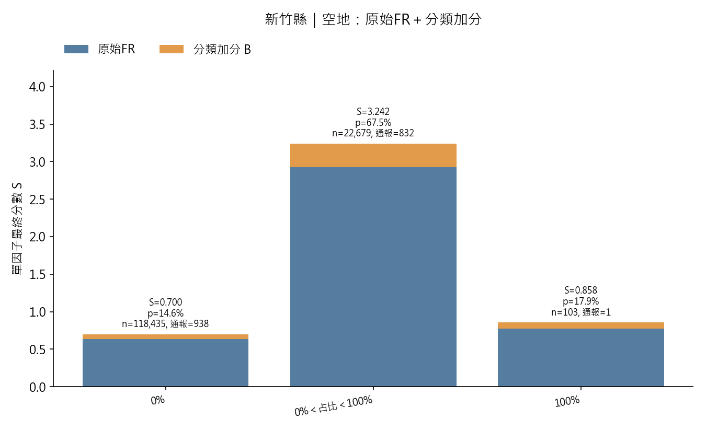
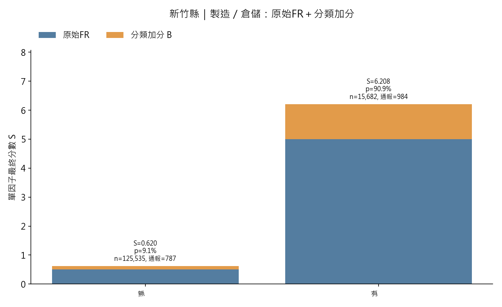
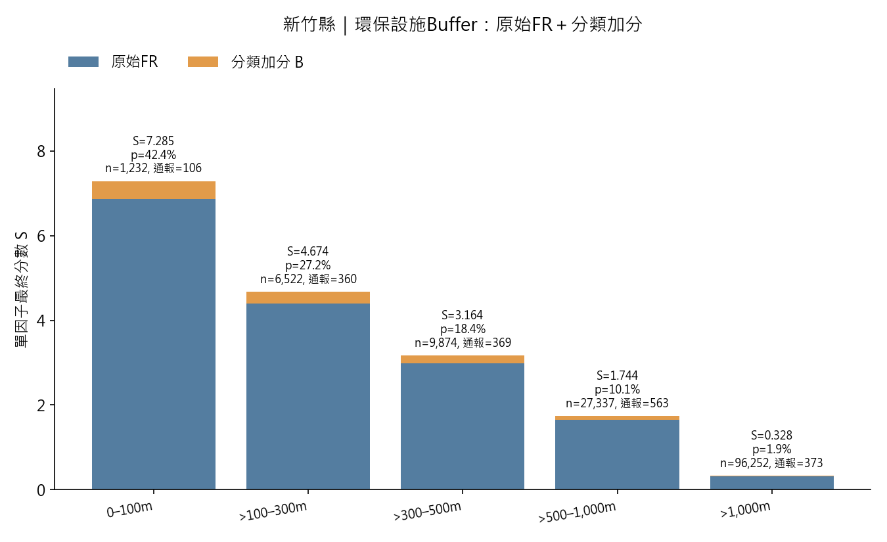
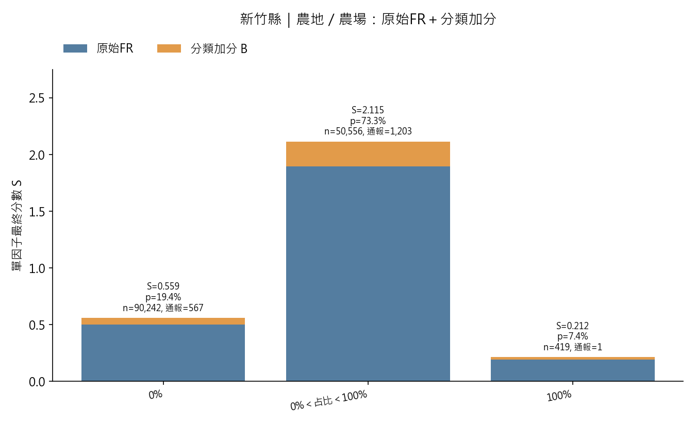
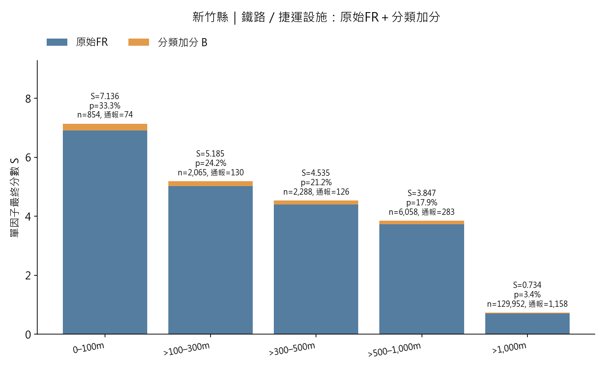
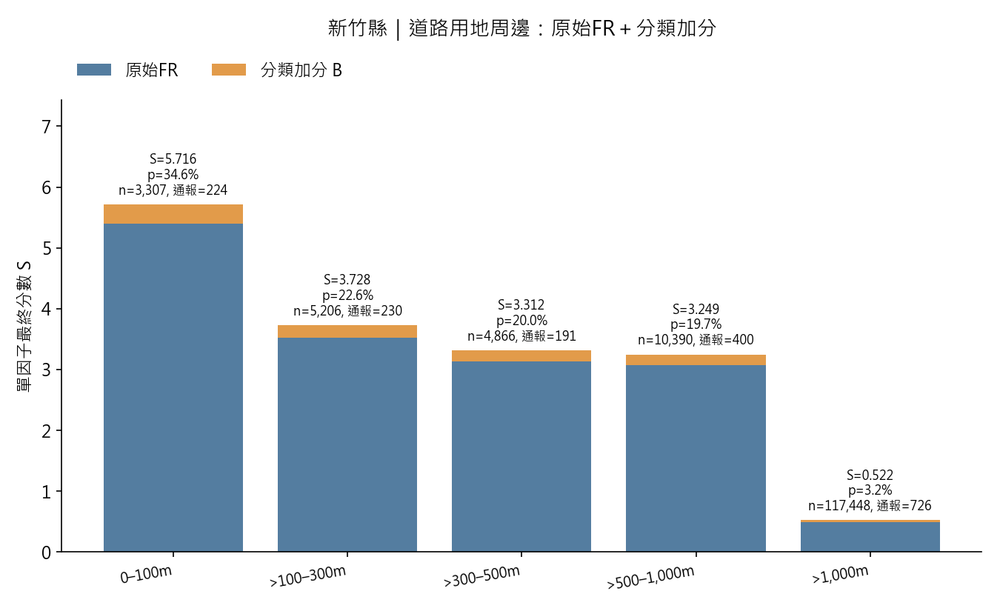
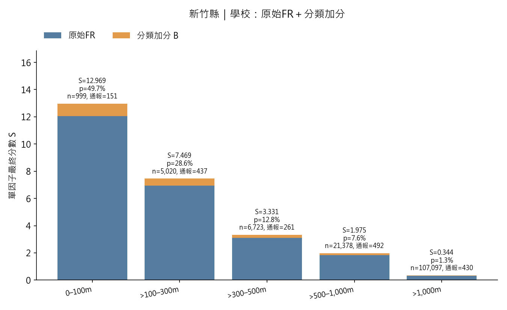
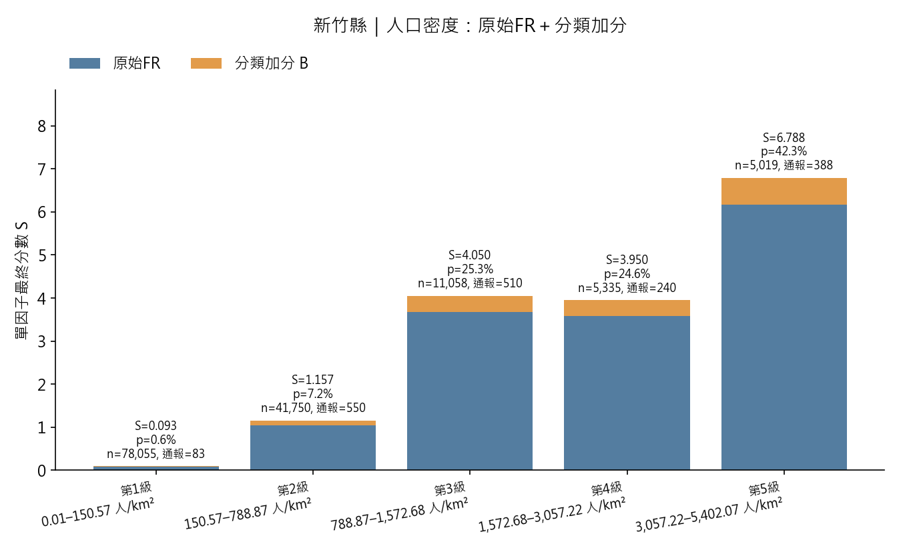
A=69.07%，B=70.13%，差-1.059個百分點。 共同可比較測試35,117格、472件；排除0格、0件。
縣市驗證CSV共同有效網格182,967格，通報452件。
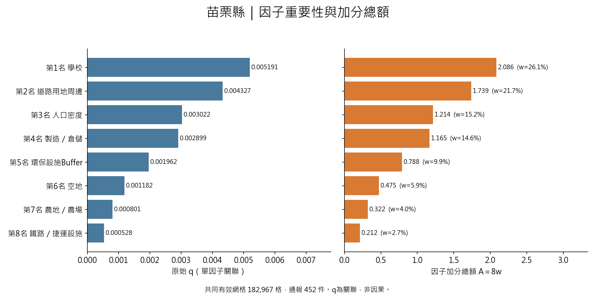
| 因子 | 原始q | 標準化w | 因子總額A | 並列名次 | 有效格數 | 通報數 |
|---|---|---|---|---|---|---|
| 學校 | 0.005191 | 0.260705 | 2.085637 | 1.000000 | 182967 | 452 |
| 道路用地周邊 | 0.004327 | 0.217320 | 1.738557 | 2.000000 | 182967 | 452 |
| 人口密度 | 0.003022 | 0.151757 | 1.214057 | 3.000000 | 182967 | 452 |
| 製造／倉儲 | 0.002899 | 0.145571 | 1.164570 | 4.000000 | 182967 | 452 |
| 環保設施Buffer | 0.001962 | 0.098519 | 0.788148 | 5.000000 | 182967 | 452 |
| 空地 | 0.001182 | 0.059371 | 0.474971 | 6.000000 | 182967 | 452 |
| 農地／農場 | 0.000801 | 0.040252 | 0.322019 | 7.000000 | 182967 | 452 |
| 鐵路／捷運設施 | 0.000528 | 0.026505 | 0.212041 | 8.000000 | 182967 | 452 |
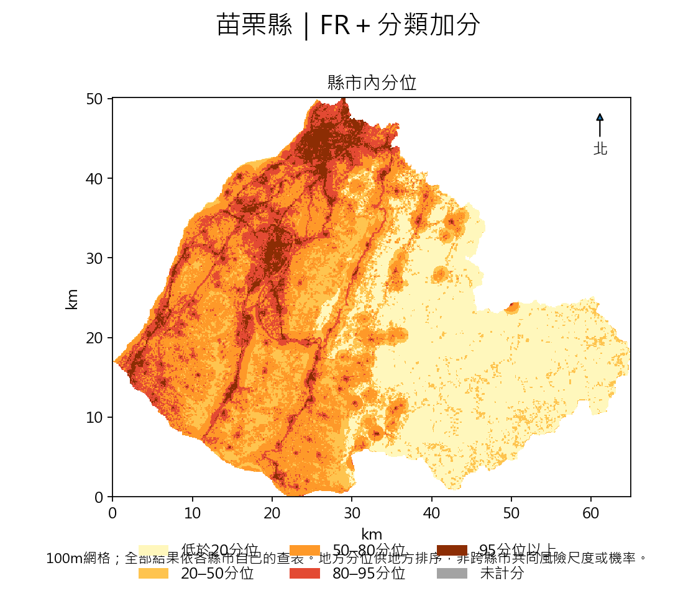
| 因子 | 級 | 分類 | 格數 | 通報數 | FR | A | 分類權重p | 分類加分B | 最終分數S |
|---|---|---|---|---|---|---|---|---|---|
| 空地 | 1 | 0% | 142090 | 184 | 0.524190 | 0.474971 | 0.164239 | 0.078009 | 0.602199 |
| 空地 | 2 | 0%＜占比＜100% | 40670 | 268 | 2.667442 | 0.474971 | 0.835761 | 0.396962 | 3.064404 |
| 空地 | 3 | 100% | 207 | 0 | 0.000000 | 0.474971 | 0.000000 | 0.000000 | 0.000000 |
| 製造／倉儲 | 0 | 無 | 164743 | 218 | 0.535653 | 1.164570 | 0.093429 | 0.108804 | 0.644457 |
| 製造／倉儲 | 1 | 有 | 18224 | 234 | 5.197643 | 1.164570 | 0.906571 | 1.055766 | 6.253409 |
| 環保設施Buffer | 1 | 0–100m | 2028 | 26 | 5.189670 | 0.788148 | 0.375721 | 0.296124 | 5.485794 |
| 環保設施Buffer | 2 | >100–300m | 9746 | 90 | 3.738096 | 0.788148 | 0.270630 | 0.213297 | 3.951393 |
| 環保設施Buffer | 3 | >300–500m | 14323 | 109 | 3.080540 | 0.788148 | 0.223025 | 0.175776 | 3.256316 |
| 環保設施Buffer | 4 | >500–1,000m | 38136 | 143 | 1.517872 | 0.788148 | 0.109891 | 0.086610 | 1.604482 |
| 環保設施Buffer | 5 | >1,000m | 118734 | 84 | 0.286377 | 0.788148 | 0.020733 | 0.016341 | 0.302718 |
| 農地／農場 | 1 | 0% | 110104 | 111 | 0.408088 | 0.322019 | 0.176267 | 0.056761 | 0.464850 |
| 農地／農場 | 2 | 0%＜占比＜100% | 72380 | 341 | 1.907085 | 0.322019 | 0.823733 | 0.265258 | 2.172343 |
| 農地／農場 | 3 | 100% | 483 | 0 | 0.000000 | 0.322019 | 0.000000 | 0.000000 | 0.000000 |
| 鐵路／捷運設施 | 1 | 0–100m | 2576 | 23 | 3.614234 | 0.212041 | 0.313418 | 0.066457 | 3.680692 |
| 鐵路／捷運設施 | 2 | >100–300m | 5063 | 33 | 2.638398 | 0.212041 | 0.228796 | 0.048514 | 2.686912 |
| 鐵路／捷運設施 | 3 | >300–500m | 5275 | 32 | 2.455624 | 0.212041 | 0.212946 | 0.045153 | 2.500777 |
| 鐵路／捷運設施 | 4 | >500–1,000m | 12812 | 65 | 2.053670 | 0.212041 | 0.178090 | 0.037762 | 2.091433 |
| 鐵路／捷運設施 | 5 | >1,000m | 157241 | 299 | 0.769732 | 0.212041 | 0.066749 | 0.014154 | 0.783886 |
| 道路用地周邊 | 1 | 0–100m | 8283 | 160 | 7.819278 | 1.738557 | 0.530309 | 0.921973 | 8.741251 |
| 道路用地周邊 | 2 | >100–300m | 12554 | 76 | 2.450563 | 1.738557 | 0.166199 | 0.288946 | 2.739509 |
| 道路用地周邊 | 3 | >300–500m | 10377 | 62 | 2.418545 | 1.738557 | 0.164027 | 0.285171 | 2.703716 |
| 道路用地周邊 | 4 | >500–1,000m | 19583 | 90 | 1.860363 | 1.738557 | 0.126171 | 0.219356 | 2.079718 |
| 道路用地周邊 | 5 | >1,000m | 132170 | 64 | 0.196011 | 1.738557 | 0.013294 | 0.023112 | 0.219123 |
| 學校 | 1 | 0–100m | 957 | 41 | 17.342282 | 2.085637 | 0.560469 | 1.168935 | 18.511217 |
| 學校 | 2 | >100–300m | 5459 | 103 | 7.637627 | 2.085637 | 0.246833 | 0.514805 | 8.152432 |
| 學校 | 3 | >300–500m | 7856 | 75 | 3.864507 | 2.085637 | 0.124893 | 0.260482 | 4.124990 |
| 學校 | 4 | >500–1,000m | 26415 | 115 | 1.762307 | 2.085637 | 0.056954 | 0.118786 | 1.881093 |
| 學校 | 5 | >1,000m | 142280 | 118 | 0.335716 | 2.085637 | 0.010850 | 0.022629 | 0.358345 |
| 人口密度 | 1 | 0.032066–116.627996 人/km² | 89903 | 34 | 0.153087 | 1.214057 | 0.015020 | 0.018235 | 0.171323 |
| 人口密度 | 2 | >116.627996–308.286066 人/km² | 56871 | 127 | 0.903956 | 1.214057 | 0.088691 | 0.107676 | 1.011632 |
| 人口密度 | 3 | >308.286066–524.716180 人/km² | 15863 | 83 | 2.118006 | 1.214057 | 0.207807 | 0.252290 | 2.370295 |
| 人口密度 | 4 | >524.716180–1,384.980080 人/km² | 7180 | 24 | 1.353073 | 1.214057 | 0.132756 | 0.161174 | 1.514246 |
| 人口密度 | 5 | >1,384.980080–2,290.354073 人/km² | 13150 | 184 | 5.664041 | 1.214057 | 0.555725 | 0.674682 | 6.338723 |
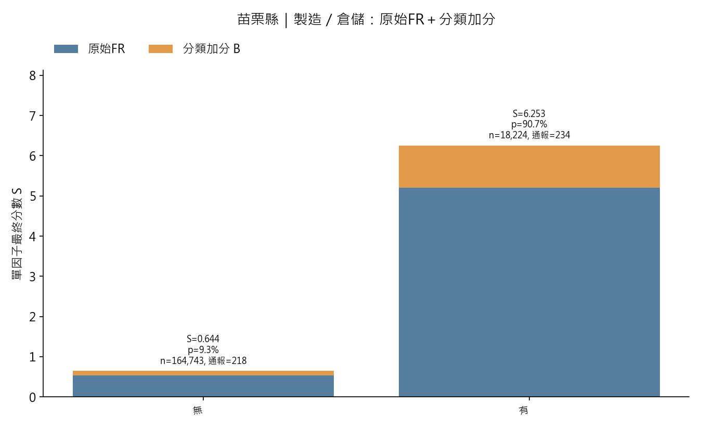
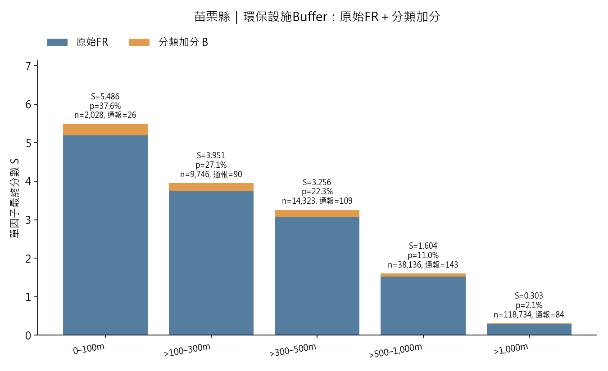
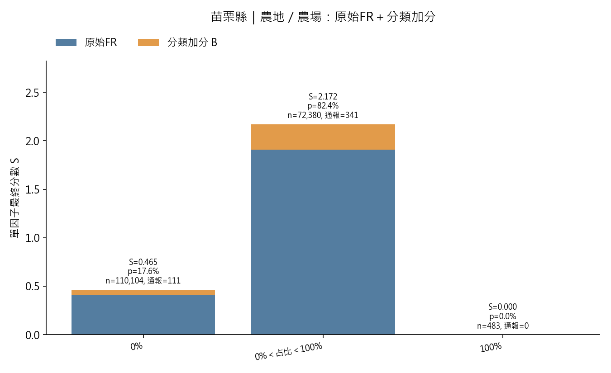
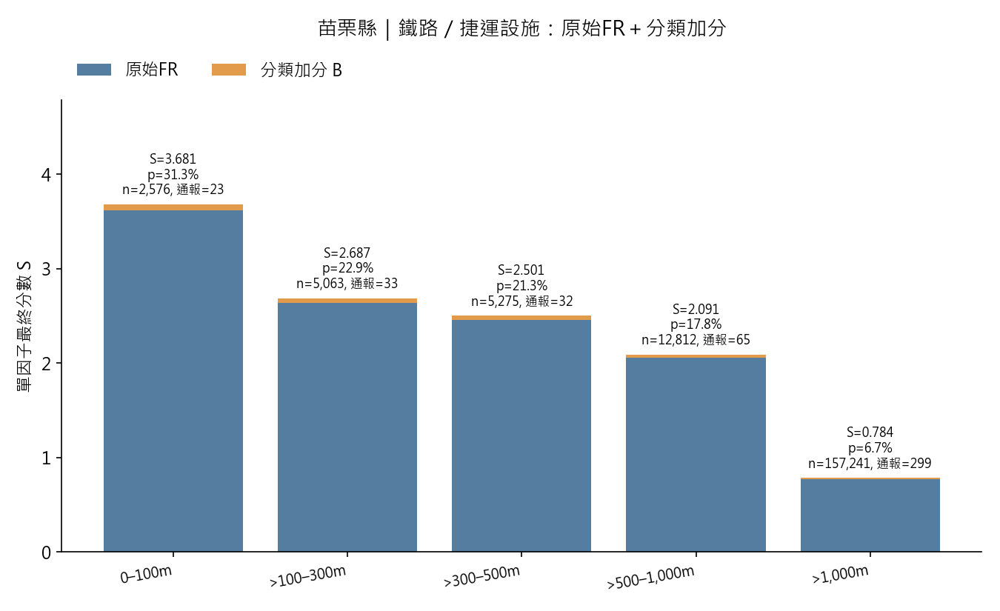
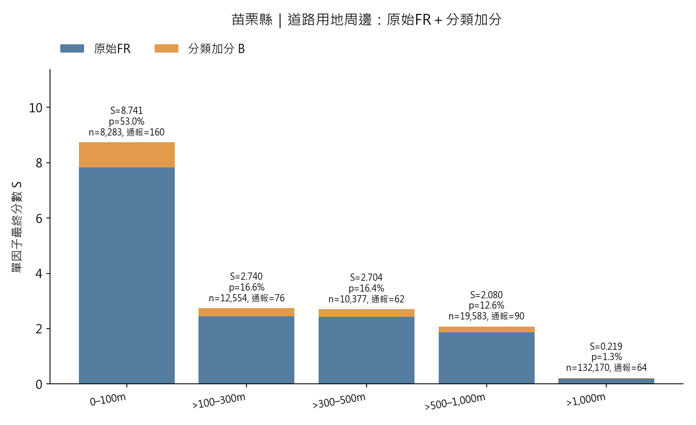
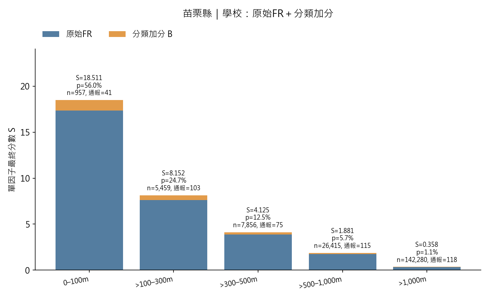
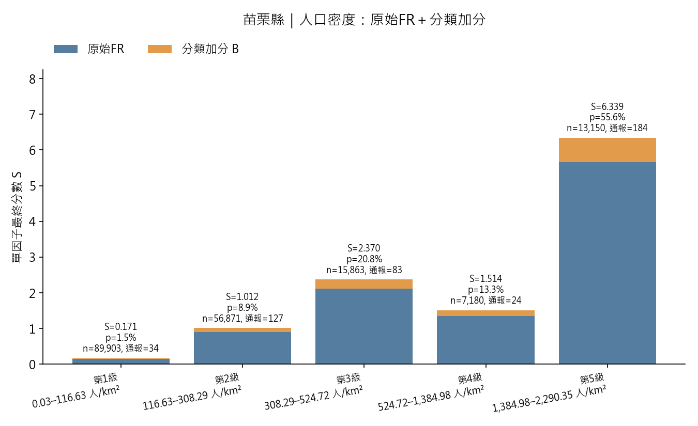
A=75.23%，B=74.31%，差+0.917個百分點。 共同可比較測試46,154格、109件；排除0格、0件。
縣市驗證CSV共同有效網格124,809格，通報4,603件。
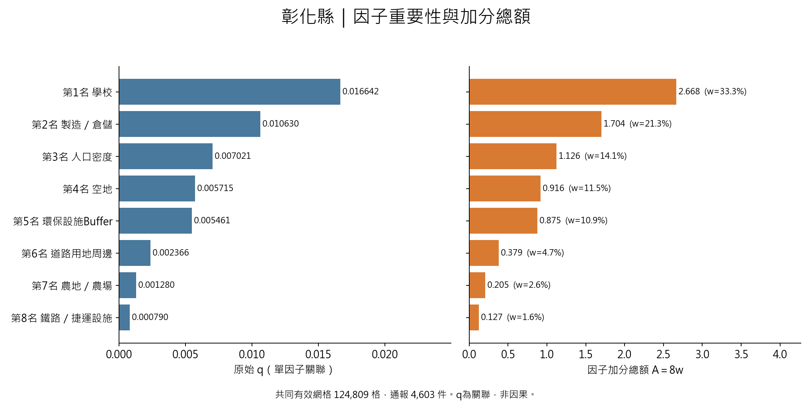
| 因子 | 原始q | 標準化w | 因子總額A | 並列名次 | 有效格數 | 通報數 |
|---|---|---|---|---|---|---|
| 學校 | 0.016642 | 0.333477 | 2.667816 | 1.000000 | 124809 | 4603 |
| 製造／倉儲 | 0.010630 | 0.212998 | 1.703983 | 2.000000 | 124809 | 4603 |
| 人口密度 | 0.007021 | 0.140694 | 1.125550 | 3.000000 | 124809 | 4603 |
| 空地 | 0.005715 | 0.114521 | 0.916168 | 4.000000 | 124809 | 4603 |
| 環保設施Buffer | 0.005461 | 0.109432 | 0.875453 | 5.000000 | 124809 | 4603 |
| 道路用地周邊 | 0.002366 | 0.047416 | 0.379324 | 6.000000 | 124809 | 4603 |
| 農地／農場 | 0.001280 | 0.025638 | 0.205107 | 7.000000 | 124809 | 4603 |
| 鐵路／捷運設施 | 0.000790 | 0.015825 | 0.126598 | 8.000000 | 124809 | 4603 |
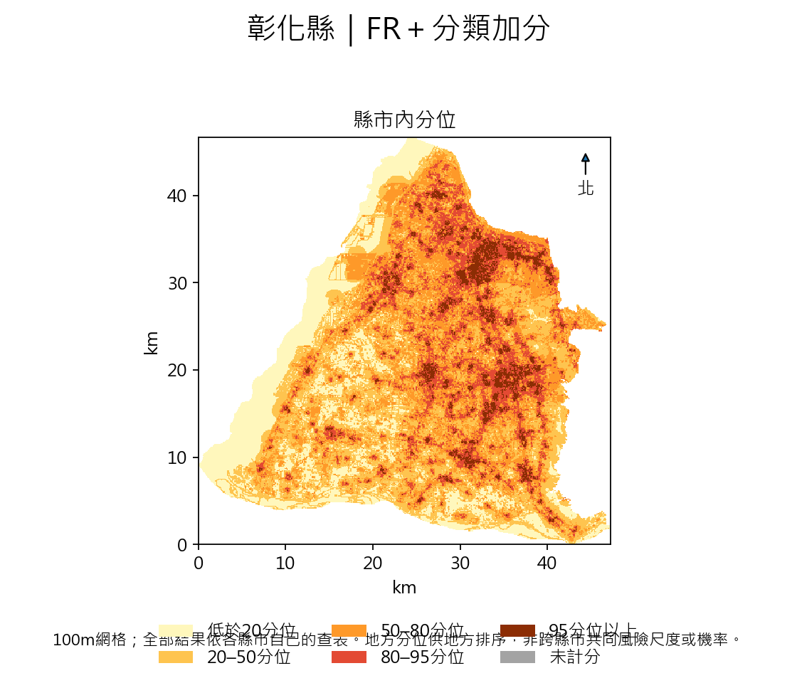
| 因子 | 級 | 分類 | 格數 | 通報數 | FR | A | 分類權重p | 分類加分B | 最終分數S |
|---|---|---|---|---|---|---|---|---|---|
| 空地 | 1 | 0% | 79771 | 1726 | 0.586679 | 0.916168 | 0.247273 | 0.226543 | 0.813223 |
| 空地 | 2 | 0%＜占比＜100% | 43680 | 2877 | 1.785921 | 0.916168 | 0.752727 | 0.689625 | 2.475546 |
| 空地 | 3 | 100% | 1358 | 0 | 0.000000 | 0.916168 | 0.000000 | 0.000000 | 0.000000 |
| 製造／倉儲 | 0 | 無 | 84578 | 1418 | 0.454594 | 1.703983 | 0.174763 | 0.297793 | 0.752387 |
| 製造／倉儲 | 1 | 有 | 40231 | 3185 | 2.146612 | 1.703983 | 0.825237 | 1.406190 | 3.552802 |
| 環保設施Buffer | 1 | 0–100m | 3724 | 261 | 1.900359 | 0.875453 | 0.293505 | 0.256950 | 2.157310 |
| 環保設施Buffer | 2 | >100–300m | 17740 | 1248 | 1.907506 | 0.875453 | 0.294609 | 0.257917 | 2.165423 |
| 環保設施Buffer | 3 | >300–500m | 22984 | 1223 | 1.442799 | 0.875453 | 0.222836 | 0.195083 | 1.637882 |
| 環保設施Buffer | 4 | >500–1,000m | 42792 | 1434 | 0.908639 | 0.875453 | 0.140337 | 0.122858 | 1.031498 |
| 環保設施Buffer | 5 | >1,000m | 37569 | 437 | 0.315396 | 0.875453 | 0.048712 | 0.042645 | 0.358042 |
| 農地／農場 | 1 | 0% | 30442 | 856 | 0.762440 | 0.205107 | 0.380538 | 0.078051 | 0.840491 |
| 農地／農場 | 2 | 0%＜占比＜100% | 87600 | 3725 | 1.152994 | 0.205107 | 0.575465 | 0.118032 | 1.271026 |
| 農地／農場 | 3 | 100% | 6767 | 22 | 0.088152 | 0.205107 | 0.043997 | 0.009024 | 0.097176 |
| 鐵路／捷運設施 | 1 | 0–100m | 1240 | 51 | 1.115202 | 0.126598 | 0.159786 | 0.020229 | 1.135430 |
| 鐵路／捷運設施 | 2 | >100–300m | 2620 | 159 | 1.645511 | 0.126598 | 0.235769 | 0.029848 | 1.675359 |
| 鐵路／捷運設施 | 3 | >300–500m | 2872 | 183 | 1.727713 | 0.126598 | 0.247547 | 0.031339 | 1.759052 |
| 鐵路／捷運設施 | 4 | >500–1,000m | 7873 | 455 | 1.567026 | 0.126598 | 0.224524 | 0.028424 | 1.595450 |
| 鐵路／捷運設施 | 5 | >1,000m | 110204 | 3755 | 0.923884 | 0.126598 | 0.132374 | 0.016758 | 0.940642 |
| 道路用地周邊 | 1 | 0–100m | 6983 | 497 | 1.929831 | 0.379324 | 0.282474 | 0.107149 | 2.036980 |
| 道路用地周邊 | 2 | >100–300m | 10829 | 588 | 1.472292 | 0.379324 | 0.215503 | 0.081745 | 1.554037 |
| 道路用地周邊 | 3 | >300–500m | 9599 | 503 | 1.420846 | 0.379324 | 0.207972 | 0.078889 | 1.499735 |
| 道路用地周邊 | 4 | >500–1,000m | 19455 | 918 | 1.279430 | 0.379324 | 0.187273 | 0.071037 | 1.350467 |
| 道路用地周邊 | 5 | >1,000m | 77943 | 2097 | 0.729502 | 0.379324 | 0.106779 | 0.040504 | 0.770005 |
| 學校 | 1 | 0–100m | 1700 | 341 | 5.438891 | 2.667816 | 0.454529 | 1.212600 | 6.651491 |
| 學校 | 2 | >100–300m | 9454 | 1212 | 3.476098 | 2.667816 | 0.290498 | 0.774995 | 4.251093 |
| 學校 | 3 | >300–500m | 12823 | 790 | 1.670484 | 2.667816 | 0.139603 | 0.372434 | 2.042918 |
| 學校 | 4 | >500–1,000m | 37301 | 1386 | 1.007506 | 2.667816 | 0.084197 | 0.224623 | 1.232129 |
| 學校 | 5 | >1,000m | 63531 | 874 | 0.373019 | 2.667816 | 0.031173 | 0.083164 | 0.456183 |
| 人口密度 | 1 | 0.004133–458.354687 人/km² | 39051 | 483 | 0.335367 | 1.125550 | 0.050137 | 0.056432 | 0.391798 |
| 人口密度 | 2 | >458.354687–897.685803 人/km² | 34730 | 1043 | 0.814300 | 1.125550 | 0.121737 | 0.137021 | 0.951321 |
| 人口密度 | 3 | >897.685803–1,504.021882 人/km² | 27505 | 1218 | 1.200717 | 1.125550 | 0.179506 | 0.202043 | 1.402760 |
| 人口密度 | 4 | >1,504.021882–2,580.354649 人/km² | 13089 | 934 | 1.934841 | 1.125550 | 0.289257 | 0.325573 | 2.260414 |
| 人口密度 | 5 | >2,580.354649–3,420.195939 人/km² | 10434 | 925 | 2.403786 | 1.125550 | 0.359363 | 0.404481 | 2.808268 |
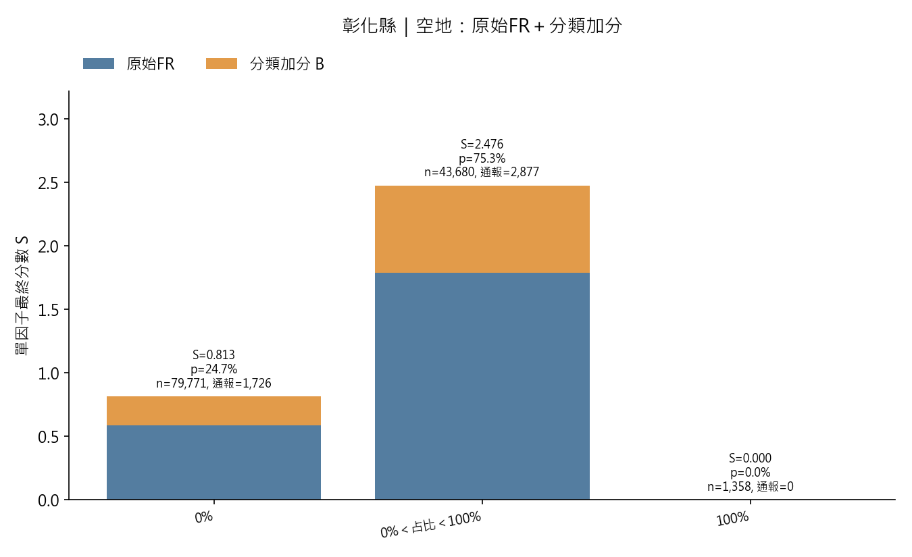
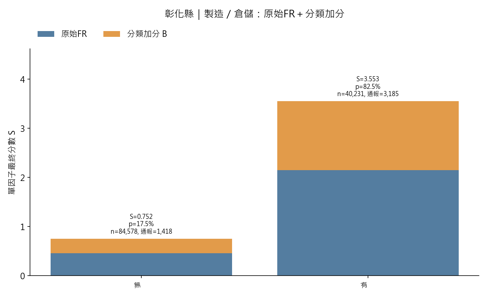
A=38.79%，B=39.66%，差-0.862個百分點。 共同可比較測試33,197格、1,111件；排除0格、0件。
縣市驗證CSV共同有效網格409,768格，通報574件。
| 因子 | 原始q | 標準化w | 因子總額A | 並列名次 | 有效格數 | 通報數 |
|---|---|---|---|---|---|---|
| 學校 | 0.005783 | 0.263009 | 2.104071 | 1.000000 | 409768 | 574 |
| 製造／倉儲 | 0.005565 | 0.253106 | 2.024847 | 2.000000 | 409768 | 574 |
| 人口密度 | 0.003281 | 0.149226 | 1.193809 | 3.000000 | 409768 | 574 |
| 道路用地周邊 | 0.003139 | 0.142783 | 1.142263 | 4.000000 | 409768 | 574 |
| 環保設施Buffer | 0.003131 | 0.142380 | 1.139037 | 5.000000 | 409768 | 574 |
| 農地／農場 | 0.000567 | 0.025783 | 0.206267 | 6.000000 | 409768 | 574 |
| 空地 | 0.000373 | 0.016965 | 0.135717 | 7.000000 | 409768 | 574 |
| 鐵路／捷運設施 | 0.000148 | 0.006749 | 0.053989 | 8.000000 | 409768 | 574 |
| 因子 | 級 | 分類 | 格數 | 通報數 | FR | A | 分類權重p | 分類加分B | 最終分數S |
|---|---|---|---|---|---|---|---|---|---|
| 空地 | 1 | 0% | 314183 | 250 | 0.568046 | 0.135717 | 0.188194 | 0.025541 | 0.593587 |
| 空地 | 2 | 0%＜占比＜100% | 94393 | 324 | 2.450368 | 0.135717 | 0.811806 | 0.110176 | 2.560544 |
| 空地 | 3 | 100% | 1192 | 0 | 0.000000 | 0.135717 | 0.000000 | 0.000000 | 0.000000 |
| 製造／倉儲 | 0 | 無 | 395802 | 235 | 0.423854 | 2.024847 | 0.023876 | 0.048346 | 0.472200 |
| 製造／倉儲 | 1 | 有 | 13966 | 339 | 17.328214 | 2.024847 | 0.976124 | 1.976501 | 19.304716 |
| 環保設施Buffer | 1 | 0–100m | 1785 | 36 | 14.397611 | 1.139037 | 0.410888 | 0.468016 | 14.865627 |
| 環保設施Buffer | 2 | >100–300m | 9677 | 139 | 10.254163 | 1.139037 | 0.292640 | 0.333327 | 10.587490 |
| 環保設施Buffer | 3 | >300–500m | 14997 | 169 | 8.044674 | 1.139037 | 0.229584 | 0.261504 | 8.306179 |
| 環保設施Buffer | 4 | >500–1,000m | 44964 | 135 | 2.143359 | 1.139037 | 0.061168 | 0.069673 | 2.213032 |
| 環保設施Buffer | 5 | >1,000m | 338345 | 95 | 0.200443 | 1.139037 | 0.005720 | 0.006516 | 0.206958 |
| 農地／農場 | 1 | 0% | 294997 | 163 | 0.394454 | 0.206267 | 0.114042 | 0.023523 | 0.417977 |
| 農地／農場 | 2 | 0%＜占比＜100% | 113286 | 410 | 2.583650 | 0.206267 | 0.746972 | 0.154076 | 2.737726 |
| 農地／農場 | 3 | 100% | 1485 | 1 | 0.480728 | 0.206267 | 0.138986 | 0.028668 | 0.509396 |
| 鐵路／捷運設施 | 1 | 0–100m | 298 | 3 | 7.186727 | 0.053989 | 0.266527 | 0.014390 | 7.201117 |
| 鐵路／捷運設施 | 2 | >100–300m | 747 | 9 | 8.600982 | 0.053989 | 0.318977 | 0.017221 | 8.618204 |
| 鐵路／捷運設施 | 3 | >300–500m | 918 | 9 | 6.998839 | 0.053989 | 0.259559 | 0.014013 | 7.012852 |
| 鐵路／捷運設施 | 4 | >500–1,000m | 2877 | 13 | 3.225742 | 0.053989 | 0.119630 | 0.006459 | 3.232201 |
| 鐵路／捷運設施 | 5 | >1,000m | 404928 | 540 | 0.952011 | 0.053989 | 0.035306 | 0.001906 | 0.953917 |
| 道路用地周邊 | 1 | 0–100m | 10053 | 197 | 13.989323 | 1.142263 | 0.572820 | 0.654311 | 14.643634 |
| 道路用地周邊 | 2 | >100–300m | 15729 | 86 | 3.903224 | 1.142263 | 0.159825 | 0.182562 | 4.085786 |
| 道路用地周邊 | 3 | >300–500m | 13253 | 78 | 4.201521 | 1.142263 | 0.172040 | 0.196514 | 4.398035 |
| 道路用地周邊 | 4 | >500–1,000m | 27847 | 80 | 2.050868 | 1.142263 | 0.083977 | 0.095924 | 2.146792 |
| 道路用地周邊 | 5 | >1,000m | 342886 | 133 | 0.276903 | 1.142263 | 0.011338 | 0.012951 | 0.289855 |
| 學校 | 1 | 0–100m | 949 | 47 | 35.355566 | 2.104071 | 0.527524 | 1.109948 | 36.465514 |
| 學校 | 2 | >100–300m | 5868 | 158 | 19.221759 | 2.104071 | 0.286799 | 0.603445 | 19.825204 |
| 學校 | 3 | >300–500m | 9018 | 121 | 9.578583 | 2.104071 | 0.142918 | 0.300709 | 9.879292 |
| 學校 | 4 | >500–1,000m | 30770 | 112 | 2.598464 | 2.104071 | 0.038770 | 0.081576 | 2.680040 |
| 學校 | 5 | >1,000m | 363163 | 136 | 0.267340 | 2.104071 | 0.003989 | 0.008393 | 0.275733 |
| 人口密度 | 1 | 7.638146–72.706155 人/km² | 264294 | 31 | 0.083734 | 1.193809 | 0.003122 | 0.003728 | 0.087461 |
| 人口密度 | 2 | >72.706155–290.432558 人/km² | 102732 | 159 | 1.104886 | 1.193809 | 0.041201 | 0.049186 | 1.154072 |
| 人口密度 | 3 | >290.432558–688.544842 人/km² | 25172 | 143 | 4.055501 | 1.193809 | 0.151229 | 0.180539 | 4.236039 |
| 人口密度 | 4 | >688.544842–1,143.365594 人/km² | 10467 | 82 | 5.592652 | 1.193809 | 0.208549 | 0.248968 | 5.841620 |
| 人口密度 | 5 | >1,143.365594–2,287.417329 人/km² | 7103 | 159 | 15.980172 | 1.193809 | 0.595898 | 0.711389 | 16.691561 |
A=78.18%，B=78.18%，差+0.000個百分點。 共同可比較測試67,818格、55件；排除0格、0件。
縣市驗證CSV共同有效網格140,854格，通報1,552件。
| 因子 | 原始q | 標準化w | 因子總額A | 並列名次 | 有效格數 | 通報數 |
|---|---|---|---|---|---|---|
| 學校 | 0.006128 | 0.320372 | 2.562980 | 1.000000 | 140854 | 1552 |
| 製造／倉儲 | 0.004843 | 0.253197 | 2.025574 | 2.000000 | 140854 | 1552 |
| 鐵路／捷運設施 | 0.001843 | 0.096353 | 0.770821 | 3.000000 | 140854 | 1552 |
| 環保設施Buffer | 0.001793 | 0.093760 | 0.750081 | 4.000000 | 140854 | 1552 |
| 空地 | 0.001668 | 0.087214 | 0.697712 | 5.000000 | 140854 | 1552 |
| 人口密度 | 0.001365 | 0.071378 | 0.571022 | 6.000000 | 140854 | 1552 |
| 道路用地周邊 | 0.001184 | 0.061896 | 0.495167 | 7.000000 | 140854 | 1552 |
| 農地／農場 | 0.000303 | 0.015830 | 0.126643 | 8.000000 | 140854 | 1552 |
| 因子 | 級 | 分類 | 格數 | 通報數 | FR | A | 分類權重p | 分類加分B | 最終分數S |
|---|---|---|---|---|---|---|---|---|---|
| 空地 | 1 | 0% | 92423 | 553 | 0.543028 | 0.697712 | 0.197593 | 0.137863 | 0.680891 |
| 空地 | 2 | 0%＜占比＜100% | 47534 | 996 | 1.901658 | 0.697712 | 0.691960 | 0.482789 | 2.384447 |
| 空地 | 3 | 100% | 897 | 3 | 0.303533 | 0.697712 | 0.110447 | 0.077060 | 0.380594 |
| 製造／倉儲 | 0 | 無 | 117795 | 668 | 0.514668 | 2.025574 | 0.128862 | 0.261019 | 0.775687 |
| 製造／倉儲 | 1 | 有 | 23059 | 884 | 3.479279 | 2.025574 | 0.871138 | 1.764554 | 5.243833 |
| 環保設施Buffer | 1 | 0–100m | 2192 | 91 | 3.767717 | 0.750081 | 0.404957 | 0.303750 | 4.071468 |
| 環保設施Buffer | 2 | >100–300m | 11312 | 292 | 2.342723 | 0.750081 | 0.251797 | 0.188868 | 2.531591 |
| 環保設施Buffer | 3 | >300–500m | 17568 | 346 | 1.787439 | 0.750081 | 0.192115 | 0.144102 | 1.931541 |
| 環保設施Buffer | 4 | >500–1,000m | 47939 | 466 | 0.882215 | 0.750081 | 0.094821 | 0.071123 | 0.953338 |
| 環保設施Buffer | 5 | >1,000m | 61843 | 357 | 0.523908 | 0.750081 | 0.056310 | 0.042237 | 0.566145 |
| 農地／農場 | 1 | 0% | 26381 | 320 | 1.100870 | 0.126643 | 0.478816 | 0.060639 | 1.161509 |
| 農地／農場 | 2 | 0%＜占比＜100% | 102082 | 1216 | 1.081090 | 0.126643 | 0.470213 | 0.059549 | 1.140639 |
| 農地／農場 | 3 | 100% | 12391 | 16 | 0.117190 | 0.126643 | 0.050971 | 0.006455 | 0.123645 |
| 鐵路／捷運設施 | 1 | 0–100m | 682 | 39 | 5.189885 | 0.770821 | 0.308463 | 0.237770 | 5.427654 |
| 鐵路／捷運設施 | 2 | >100–300m | 1452 | 45 | 2.812700 | 0.770821 | 0.167174 | 0.128861 | 2.941561 |
| 鐵路／捷運設施 | 3 | >300–500m | 1642 | 108 | 5.969364 | 0.770821 | 0.354791 | 0.273481 | 6.242845 |
| 鐵路／捷運設施 | 4 | >500–1,000m | 4739 | 104 | 1.991701 | 0.770821 | 0.118377 | 0.091248 | 2.082949 |
| 鐵路／捷運設施 | 5 | >1,000m | 132339 | 1256 | 0.861349 | 0.770821 | 0.051195 | 0.039462 | 0.900811 |
| 道路用地周邊 | 1 | 0–100m | 5845 | 183 | 2.841476 | 0.495167 | 0.344879 | 0.170772 | 3.012249 |
| 道路用地周邊 | 2 | >100–300m | 9441 | 198 | 1.903376 | 0.495167 | 0.231019 | 0.114393 | 2.017769 |
| 道路用地周邊 | 3 | >300–500m | 8513 | 129 | 1.375259 | 0.495167 | 0.166919 | 0.082653 | 1.457912 |
| 道路用地周邊 | 4 | >500–1,000m | 18446 | 290 | 1.426833 | 0.495167 | 0.173179 | 0.085753 | 1.512586 |
| 道路用地周邊 | 5 | >1,000m | 98609 | 752 | 0.692116 | 0.495167 | 0.084004 | 0.041596 | 0.733712 |
| 學校 | 1 | 0–100m | 1078 | 91 | 7.661258 | 2.562980 | 0.463608 | 1.188218 | 8.849476 |
| 學校 | 2 | >100–300m | 6913 | 388 | 5.093809 | 2.562980 | 0.308243 | 0.790021 | 5.883830 |
| 學校 | 3 | >300–500m | 11030 | 294 | 2.419075 | 2.562980 | 0.146386 | 0.375185 | 2.794260 |
| 學校 | 4 | >500–1,000m | 38538 | 397 | 0.934929 | 2.562980 | 0.056576 | 0.145002 | 1.079932 |
| 學校 | 5 | >1,000m | 83295 | 382 | 0.416219 | 2.562980 | 0.025187 | 0.064553 | 0.480772 |
| 人口密度 | 1 | 0.000113–279.308044 人/km² | 36721 | 245 | 0.605521 | 0.571022 | 0.096358 | 0.055023 | 0.660544 |
| 人口密度 | 2 | >279.308044–438.174130 人/km² | 63268 | 528 | 0.757403 | 0.571022 | 0.120528 | 0.068824 | 0.826228 |
| 人口密度 | 3 | >438.174130–709.377932 人/km² | 10919 | 109 | 0.905985 | 0.571022 | 0.144172 | 0.082325 | 0.988311 |
| 人口密度 | 4 | >709.377932–1,007.475827 人/km² | 14232 | 242 | 1.543217 | 0.571022 | 0.245577 | 0.140230 | 1.683446 |
| 人口密度 | 5 | >1,007.475827–1,184.750755 人/km² | 15714 | 428 | 2.471920 | 0.571022 | 0.393364 | 0.224620 | 2.696540 |
A=54.61%，B=53.90%，差+0.709個百分點。 共同可比較測試25,348格、423件；排除0格、0件。
縣市驗證CSV共同有效網格195,650格，通報773件。
| 因子 | 原始q | 標準化w | 因子總額A | 並列名次 | 有效格數 | 通報數 |
|---|---|---|---|---|---|---|
| 道路用地周邊 | 0.002987 | 0.286532 | 2.292260 | 1.000000 | 195650 | 773 |
| 學校 | 0.002544 | 0.244042 | 1.952336 | 2.000000 | 195650 | 773 |
| 製造／倉儲 | 0.001766 | 0.169450 | 1.355601 | 3.000000 | 195650 | 773 |
| 環保設施Buffer | 0.000832 | 0.079853 | 0.638820 | 4.000000 | 195650 | 773 |
| 空地 | 0.000826 | 0.079266 | 0.634129 | 5.000000 | 195650 | 773 |
| 人口密度 | 0.000757 | 0.072667 | 0.581339 | 6.000000 | 195650 | 773 |
| 農地／農場 | 0.000371 | 0.035633 | 0.285068 | 7.000000 | 195650 | 773 |
| 鐵路／捷運設施 | 0.000339 | 0.032556 | 0.260448 | 8.000000 | 195650 | 773 |
| 因子 | 級 | 分類 | 格數 | 通報數 | FR | A | 分類權重p | 分類加分B | 最終分數S |
|---|---|---|---|---|---|---|---|---|---|
| 空地 | 1 | 0% | 139515 | 291 | 0.527925 | 0.634129 | 0.193431 | 0.122660 | 0.650585 |
| 空地 | 2 | 0%＜占比＜100% | 55419 | 482 | 2.201348 | 0.634129 | 0.806569 | 0.511469 | 2.712817 |
| 空地 | 3 | 100% | 716 | 0 | 0.000000 | 0.634129 | 0.000000 | 0.000000 | 0.000000 |
| 製造／倉儲 | 0 | 無 | 176755 | 446 | 0.638651 | 1.355601 | 0.127249 | 0.172498 | 0.811149 |
| 製造／倉儲 | 1 | 有 | 18895 | 327 | 4.380273 | 1.355601 | 0.872751 | 1.183103 | 5.563376 |
| 環保設施Buffer | 1 | 0–100m | 2529 | 29 | 2.902348 | 0.638820 | 0.312728 | 0.199777 | 3.102125 |
| 環保設施Buffer | 2 | >100–300m | 14001 | 165 | 2.982808 | 0.638820 | 0.321397 | 0.205315 | 3.188123 |
| 環保設施Buffer | 3 | >300–500m | 21500 | 159 | 1.871798 | 0.638820 | 0.201686 | 0.128841 | 2.000639 |
| 環保設施Buffer | 4 | >500–1,000m | 57555 | 247 | 1.086211 | 0.638820 | 0.117039 | 0.074767 | 1.160978 |
| 環保設施Buffer | 5 | >1,000m | 100065 | 173 | 0.437587 | 0.638820 | 0.047150 | 0.030120 | 0.467707 |
| 農地／農場 | 1 | 0% | 79311 | 147 | 0.469120 | 0.285068 | 0.232335 | 0.066231 | 0.535351 |
| 農地／農場 | 2 | 0%＜占比＜100% | 108876 | 623 | 1.448292 | 0.285068 | 0.717276 | 0.204472 | 1.652765 |
| 農地／農場 | 3 | 100% | 7463 | 3 | 0.101744 | 0.285068 | 0.050389 | 0.014364 | 0.116108 |
| 鐵路／捷運設施 | 1 | 0–100m | 811 | 11 | 3.432987 | 0.260448 | 0.272310 | 0.070922 | 3.503910 |
| 鐵路／捷運設施 | 2 | >100–300m | 2161 | 44 | 5.153452 | 0.260448 | 0.408779 | 0.106466 | 5.259918 |
| 鐵路／捷運設施 | 3 | >300–500m | 2727 | 21 | 1.949102 | 0.260448 | 0.154606 | 0.040267 | 1.989368 |
| 鐵路／捷運設施 | 4 | >500–1,000m | 7907 | 36 | 1.152368 | 0.260448 | 0.091407 | 0.023807 | 1.176175 |
| 鐵路／捷運設施 | 5 | >1,000m | 182044 | 661 | 0.919021 | 0.260448 | 0.072898 | 0.018986 | 0.938007 |
| 道路用地周邊 | 1 | 0–100m | 7907 | 244 | 7.810493 | 2.292260 | 0.646397 | 1.481710 | 9.292203 |
| 道路用地周邊 | 2 | >100–300m | 12995 | 83 | 1.616598 | 2.292260 | 0.133790 | 0.306681 | 1.923280 |
| 道路用地周邊 | 3 | >300–500m | 11877 | 46 | 0.980283 | 2.292260 | 0.081128 | 0.185967 | 1.166250 |
| 道路用地周邊 | 4 | >500–1,000m | 26444 | 121 | 1.158133 | 2.292260 | 0.095847 | 0.219707 | 1.377840 |
| 道路用地周邊 | 5 | >1,000m | 136427 | 279 | 0.517612 | 2.292260 | 0.042838 | 0.098195 | 0.615807 |
| 學校 | 1 | 0–100m | 817 | 43 | 13.321305 | 1.952336 | 0.544193 | 1.062447 | 14.383752 |
| 學校 | 2 | >100–300m | 5303 | 119 | 5.679704 | 1.952336 | 0.232023 | 0.452988 | 6.132691 |
| 學校 | 3 | >300–500m | 8972 | 120 | 3.385262 | 1.952336 | 0.138292 | 0.269993 | 3.655256 |
| 學校 | 4 | >500–1,000m | 33519 | 214 | 1.615932 | 1.952336 | 0.066013 | 0.128879 | 1.744811 |
| 學校 | 5 | >1,000m | 147039 | 277 | 0.476812 | 1.952336 | 0.019478 | 0.038028 | 0.514841 |
| 人口密度 | 1 | 0.000863–107.757640 人/km² | 75557 | 38 | 0.127294 | 0.581339 | 0.020133 | 0.011704 | 0.138998 |
| 人口密度 | 2 | >107.757640–246.022677 人/km² | 35917 | 184 | 1.296636 | 0.581339 | 0.205077 | 0.119219 | 1.415856 |
| 人口密度 | 3 | >246.022677–395.636524 人/km² | 40455 | 286 | 1.789345 | 0.581339 | 0.283005 | 0.164522 | 1.953867 |
| 人口密度 | 4 | >395.636524–633.323961 人/km² | 23327 | 115 | 1.247784 | 0.581339 | 0.197351 | 0.114728 | 1.362511 |
| 人口密度 | 5 | >633.323961–3,251.053208 人/km² | 20394 | 150 | 1.861612 | 0.581339 | 0.294434 | 0.171166 | 2.032778 |
A=55.40%，B=63.31%，差-7.914個百分點。 共同可比較測試30,193格、139件；排除0格、0件。
縣市驗證CSV共同有效網格280,977格，通報1,184件。
| 因子 | 原始q | 標準化w | 因子總額A | 並列名次 | 有效格數 | 通報數 |
|---|---|---|---|---|---|---|
| 道路用地周邊 | 0.016783 | 0.363217 | 2.905739 | 1.000000 | 280977 | 1184 |
| 製造／倉儲 | 0.008649 | 0.187191 | 1.497524 | 2.000000 | 280977 | 1184 |
| 學校 | 0.005739 | 0.124209 | 0.993674 | 3.000000 | 280977 | 1184 |
| 人口密度 | 0.003514 | 0.076043 | 0.608343 | 4.000000 | 280977 | 1184 |
| 環保設施Buffer | 0.003182 | 0.068858 | 0.550868 | 5.000000 | 280977 | 1184 |
| 空地 | 0.003105 | 0.067198 | 0.537587 | 6.000000 | 280977 | 1184 |
| 農地／農場 | 0.002621 | 0.056730 | 0.453837 | 7.000000 | 280977 | 1184 |
| 鐵路／捷運設施 | 0.002613 | 0.056554 | 0.452429 | 8.000000 | 280977 | 1184 |
| 因子 | 級 | 分類 | 格數 | 通報數 | FR | A | 分類權重p | 分類加分B | 最終分數S |
|---|---|---|---|---|---|---|---|---|---|
| 空地 | 1 | 0% | 215700 | 378 | 0.415873 | 0.537587 | 0.109126 | 0.058665 | 0.474538 |
| 空地 | 2 | 0%＜占比＜100% | 64149 | 804 | 2.974303 | 0.537587 | 0.780464 | 0.419567 | 3.393870 |
| 空地 | 3 | 100% | 1128 | 2 | 0.420765 | 0.537587 | 0.110410 | 0.059355 | 0.480120 |
| 製造／倉儲 | 0 | 無 | 257317 | 495 | 0.456516 | 1.497524 | 0.061966 | 0.092795 | 0.549311 |
| 製造／倉儲 | 1 | 有 | 23660 | 689 | 6.910724 | 1.497524 | 0.938034 | 1.404729 | 8.315453 |
| 環保設施Buffer | 1 | 0–100m | 2630 | 59 | 5.323722 | 0.550868 | 0.368895 | 0.203212 | 5.526934 |
| 環保設施Buffer | 2 | >100–300m | 12531 | 231 | 4.374670 | 0.550868 | 0.303133 | 0.166986 | 4.541656 |
| 環保設施Buffer | 3 | >300–500m | 18608 | 209 | 2.665420 | 0.550868 | 0.184694 | 0.101742 | 2.767162 |
| 環保設施Buffer | 4 | >500–1,000m | 48401 | 337 | 1.652322 | 0.550868 | 0.114494 | 0.063071 | 1.715393 |
| 環保設施Buffer | 5 | >1,000m | 198807 | 348 | 0.415400 | 0.550868 | 0.028784 | 0.015856 | 0.431256 |
| 農地／農場 | 1 | 0% | 181928 | 235 | 0.306540 | 0.453837 | 0.101542 | 0.046084 | 0.352624 |
| 農地／農場 | 2 | 0%＜占比＜100% | 92891 | 941 | 2.404003 | 0.453837 | 0.796333 | 0.361405 | 2.765409 |
| 農地／農場 | 3 | 100% | 6158 | 8 | 0.308297 | 0.453837 | 0.102124 | 0.046348 | 0.354645 |
| 鐵路／捷運設施 | 1 | 0–100m | 1332 | 28 | 4.988533 | 0.452429 | 0.214178 | 0.096900 | 5.085434 |
| 鐵路／捷運設施 | 2 | >100–300m | 2568 | 85 | 7.854942 | 0.452429 | 0.337244 | 0.152579 | 8.007521 |
| 鐵路／捷運設施 | 3 | >300–500m | 2712 | 66 | 5.775284 | 0.452429 | 0.247956 | 0.112183 | 5.887466 |
| 鐵路／捷運設施 | 4 | >500–1,000m | 6909 | 113 | 3.881346 | 0.452429 | 0.166642 | 0.075394 | 3.956739 |
| 鐵路／捷運設施 | 5 | >1,000m | 267456 | 892 | 0.791465 | 0.452429 | 0.033981 | 0.015374 | 0.806839 |
| 道路用地周邊 | 1 | 0–100m | 8363 | 527 | 14.954352 | 2.905739 | 0.744090 | 2.162131 | 17.116483 |
| 道路用地周邊 | 2 | >100–300m | 13965 | 107 | 1.818285 | 2.905739 | 0.090473 | 0.262891 | 2.081176 |
| 道路用地周邊 | 3 | >300–500m | 12547 | 75 | 1.418536 | 2.905739 | 0.070583 | 0.205095 | 1.623631 |
| 道路用地周邊 | 4 | >500–1,000m | 27186 | 182 | 1.588712 | 2.905739 | 0.079050 | 0.229699 | 1.818411 |
| 道路用地周邊 | 5 | >1,000m | 218916 | 293 | 0.317621 | 2.905739 | 0.015804 | 0.045922 | 0.363543 |
| 學校 | 1 | 0–100m | 1386 | 55 | 9.417129 | 0.993674 | 0.415792 | 0.413161 | 9.830291 |
| 學校 | 2 | >100–300m | 8117 | 229 | 6.695130 | 0.993674 | 0.295608 | 0.293738 | 6.988868 |
| 學校 | 3 | >300–500m | 12140 | 225 | 4.398280 | 0.993674 | 0.194196 | 0.192967 | 4.591248 |
| 學校 | 4 | >500–1,000m | 40679 | 296 | 1.726794 | 0.993674 | 0.076243 | 0.075760 | 1.802554 |
| 學校 | 5 | >1,000m | 218655 | 379 | 0.411338 | 0.993674 | 0.018162 | 0.018047 | 0.429385 |
| 人口密度 | 1 | 0.000246–157.941678 人/km² | 170242 | 113 | 0.157518 | 0.608343 | 0.012834 | 0.007808 | 0.165326 |
| 人口密度 | 2 | >157.941678–471.829115 人/km² | 55831 | 434 | 1.844732 | 0.608343 | 0.150305 | 0.091437 | 1.936169 |
| 人口密度 | 3 | >471.829115–1,025.873664 人/km² | 40203 | 398 | 2.349328 | 0.608343 | 0.191418 | 0.116448 | 2.465776 |
| 人口密度 | 4 | >1,025.873664–2,140.309428 人/km² | 8158 | 104 | 3.025302 | 0.608343 | 0.246495 | 0.149954 | 3.175255 |
| 人口密度 | 5 | >2,140.309428–2,926.274802 人/km² | 6543 | 135 | 4.896389 | 0.608343 | 0.398947 | 0.242697 | 5.139086 |
A=79.14%，B=78.00%，差+1.143個百分點。 共同可比較測試75,520格、350件；排除0格、0件。
縣市驗證CSV共同有效網格359,698格，通報655件。
| 因子 | 原始q | 標準化w | 因子總額A | 並列名次 | 有效格數 | 通報數 |
|---|---|---|---|---|---|---|
| 製造／倉儲 | 0.014456 | 0.270244 | 2.161949 | 1.000000 | 359698 | 655 |
| 學校 | 0.011812 | 0.220816 | 1.766526 | 2.000000 | 359698 | 655 |
| 人口密度 | 0.009379 | 0.175336 | 1.402686 | 3.000000 | 359698 | 655 |
| 道路用地周邊 | 0.006789 | 0.126911 | 1.015287 | 4.000000 | 359698 | 655 |
| 環保設施Buffer | 0.005351 | 0.100033 | 0.800268 | 5.000000 | 359698 | 655 |
| 農地／農場 | 0.002745 | 0.051306 | 0.410445 | 6.000000 | 359698 | 655 |
| 空地 | 0.001631 | 0.030493 | 0.243944 | 7.000000 | 359698 | 655 |
| 鐵路／捷運設施 | 0.001330 | 0.024862 | 0.198895 | 8.000000 | 359698 | 655 |
| 因子 | 級 | 分類 | 格數 | 通報數 | FR | A | 分類權重p | 分類加分B | 最終分數S |
|---|---|---|---|---|---|---|---|---|---|
| 空地 | 1 | 0% | 295723 | 255 | 0.473535 | 0.243944 | 0.071864 | 0.017531 | 0.491066 |
| 空地 | 2 | 0%＜占比＜100% | 63153 | 396 | 3.443483 | 0.243944 | 0.522586 | 0.127482 | 3.570965 |
| 空地 | 3 | 100% | 822 | 4 | 2.672298 | 0.243944 | 0.405550 | 0.098932 | 2.771230 |
| 製造／倉儲 | 0 | 無 | 352818 | 340 | 0.529206 | 2.161949 | 0.020614 | 0.044566 | 0.573772 |
| 製造／倉儲 | 1 | 有 | 6880 | 315 | 25.143101 | 2.161949 | 0.979386 | 2.117383 | 27.260484 |
| 環保設施Buffer | 1 | 0–100m | 910 | 27 | 16.293677 | 0.800268 | 0.399420 | 0.319643 | 16.613319 |
| 環保設施Buffer | 2 | >100–300m | 4534 | 94 | 11.385263 | 0.800268 | 0.279096 | 0.223351 | 11.608614 |
| 環保設施Buffer | 3 | >300–500m | 7312 | 110 | 8.261392 | 0.800268 | 0.202518 | 0.162069 | 8.423461 |
| 環保設施Buffer | 4 | >500–1,000m | 24905 | 203 | 4.476166 | 0.800268 | 0.109728 | 0.087812 | 4.563978 |
| 環保設施Buffer | 5 | >1,000m | 322037 | 221 | 0.376863 | 0.800268 | 0.009238 | 0.007393 | 0.384256 |
| 農地／農場 | 1 | 0% | 297233 | 184 | 0.339952 | 0.410445 | 0.069597 | 0.028566 | 0.368518 |
| 農地／農場 | 2 | 0%＜占比＜100% | 60485 | 470 | 4.267238 | 0.410445 | 0.873621 | 0.358573 | 4.625812 |
| 農地／農場 | 3 | 100% | 1980 | 1 | 0.277352 | 0.410445 | 0.056782 | 0.023306 | 0.300658 |
| 鐵路／捷運設施 | 1 | 0–100m | 1623 | 22 | 7.443906 | 0.198895 | 0.303462 | 0.060357 | 7.504263 |
| 鐵路／捷運設施 | 2 | >100–300m | 3361 | 52 | 8.496334 | 0.198895 | 0.346366 | 0.068890 | 8.565224 |
| 鐵路／捷運設施 | 3 | >300–500m | 3566 | 26 | 4.003951 | 0.198895 | 0.163227 | 0.032465 | 4.036416 |
| 鐵路／捷運設施 | 4 | >500–1,000m | 9256 | 64 | 3.797112 | 0.198895 | 0.154795 | 0.030788 | 3.827899 |
| 鐵路／捷運設施 | 5 | >1,000m | 341892 | 491 | 0.788659 | 0.198895 | 0.032151 | 0.006395 | 0.795054 |
| 道路用地周邊 | 1 | 0–100m | 7551 | 204 | 14.836191 | 1.015287 | 0.567814 | 0.576494 | 15.412685 |
| 道路用地周邊 | 2 | >100–300m | 12700 | 105 | 4.540276 | 1.015287 | 0.173766 | 0.176423 | 4.716699 |
| 道路用地周邊 | 3 | >300–500m | 10584 | 68 | 3.528221 | 1.015287 | 0.135033 | 0.137097 | 3.665318 |
| 道路用地周邊 | 4 | >500–1,000m | 23104 | 124 | 2.947347 | 1.015287 | 0.112801 | 0.114526 | 3.061873 |
| 道路用地周邊 | 5 | >1,000m | 305759 | 154 | 0.276591 | 1.015287 | 0.010586 | 0.010748 | 0.287339 |
| 學校 | 1 | 0–100m | 643 | 39 | 33.308138 | 1.766526 | 0.464119 | 0.819878 | 34.128016 |
| 學校 | 2 | >100–300m | 3621 | 153 | 23.203828 | 1.766526 | 0.323324 | 0.571161 | 23.774989 |
| 學校 | 3 | >300–500m | 5616 | 112 | 10.951854 | 1.766526 | 0.152604 | 0.269579 | 11.221433 |
| 學校 | 4 | >500–1,000m | 20764 | 150 | 3.967135 | 1.766526 | 0.055278 | 0.097651 | 4.064786 |
| 學校 | 5 | >1,000m | 329054 | 201 | 0.335448 | 1.766526 | 0.004674 | 0.008257 | 0.343705 |
| 人口密度 | 1 | 0.000000–23.174006 人/km² | 208683 | 34 | 0.089472 | 1.402686 | 0.004545 | 0.006375 | 0.095847 |
| 人口密度 | 2 | >23.174006–68.862302 人/km² | 80532 | 114 | 0.777380 | 1.402686 | 0.039489 | 0.055390 | 0.832770 |
| 人口密度 | 3 | >68.862302–208.376023 人/km² | 57614 | 181 | 1.725231 | 1.402686 | 0.087637 | 0.122927 | 1.848158 |
| 人口密度 | 4 | >208.376023–613.256422 人/km² | 1652 | 4 | 1.329679 | 1.402686 | 0.067544 | 0.094743 | 1.424422 |
| 人口密度 | 5 | >613.256422–913.711531 人/km² | 11217 | 322 | 15.764343 | 1.402686 | 0.800785 | 1.123251 | 16.887594 |
A=80.14%，B=80.14%，差+0.000個百分點。 共同可比較測試73,832格、146件；排除0格、0件。
縣市驗證CSV共同有效網格461,245格，通報401件。
| 因子 | 原始q | 標準化w | 因子總額A | 並列名次 | 有效格數 | 通報數 |
|---|---|---|---|---|---|---|
| 人口密度 | 0.010901 | 0.308185 | 2.465477 | 1.000000 | 461245 | 401 |
| 學校 | 0.007896 | 0.223227 | 1.785813 | 2.000000 | 461245 | 401 |
| 製造／倉儲 | 0.006631 | 0.187482 | 1.499860 | 3.000000 | 461245 | 401 |
| 環保設施Buffer | 0.003396 | 0.096001 | 0.768007 | 4.000000 | 461245 | 401 |
| 鐵路／捷運設施 | 0.002614 | 0.073906 | 0.591247 | 5.000000 | 461245 | 401 |
| 道路用地周邊 | 0.002424 | 0.068540 | 0.548317 | 6.000000 | 461245 | 401 |
| 農地／農場 | 0.000946 | 0.026744 | 0.213952 | 7.000000 | 461245 | 401 |
| 空地 | 0.000563 | 0.015916 | 0.127326 | 8.000000 | 461245 | 401 |
| 因子 | 級 | 分類 | 格數 | 通報數 | FR | A | 分類權重p | 分類加分B | 最終分數S |
|---|---|---|---|---|---|---|---|---|---|
| 空地 | 1 | 0% | 385576 | 191 | 0.569785 | 0.127326 | 0.117201 | 0.014923 | 0.584707 |
| 空地 | 2 | 0%＜占比＜100% | 74593 | 209 | 3.222816 | 0.127326 | 0.662913 | 0.084406 | 3.307222 |
| 空地 | 3 | 100% | 1076 | 1 | 1.068993 | 0.127326 | 0.219885 | 0.027997 | 1.096990 |
| 製造／倉儲 | 0 | 無 | 453196 | 218 | 0.553296 | 1.499860 | 0.020719 | 0.031076 | 0.584372 |
| 製造／倉儲 | 1 | 有 | 8049 | 183 | 26.151491 | 1.499860 | 0.979281 | 1.468784 | 27.620276 |
| 環保設施Buffer | 1 | 0–100m | 1049 | 16 | 17.544128 | 0.768007 | 0.351855 | 0.270227 | 17.814355 |
| 環保設施Buffer | 2 | >100–300m | 4449 | 56 | 14.478145 | 0.768007 | 0.290365 | 0.223002 | 14.701147 |
| 環保設施Buffer | 3 | >300–500m | 6904 | 66 | 10.995892 | 0.768007 | 0.220527 | 0.169366 | 11.165258 |
| 環保設施Buffer | 4 | >500–1,000m | 23060 | 130 | 6.484423 | 0.768007 | 0.130048 | 0.099878 | 6.584301 |
| 環保設施Buffer | 5 | >1,000m | 425783 | 133 | 0.359295 | 0.768007 | 0.007206 | 0.005534 | 0.364829 |
| 農地／農場 | 1 | 0% | 385743 | 154 | 0.459209 | 0.213952 | 0.104405 | 0.022338 | 0.481546 |
| 農地／農場 | 2 | 0%＜占比＜100% | 72125 | 247 | 3.939113 | 0.213952 | 0.895595 | 0.191615 | 4.130727 |
| 農地／農場 | 3 | 100% | 3377 | 0 | 0.000000 | 0.213952 | 0.000000 | 0.000000 | 0.000000 |
| 鐵路／捷運設施 | 1 | 0–100m | 2984 | 35 | 13.491385 | 0.591247 | 0.327686 | 0.193744 | 13.685128 |
| 鐵路／捷運設施 | 2 | >100–300m | 5454 | 61 | 12.864769 | 0.591247 | 0.312467 | 0.184745 | 13.049514 |
| 鐵路／捷運設施 | 3 | >300–500m | 5567 | 38 | 7.851446 | 0.591247 | 0.190700 | 0.112751 | 7.964197 |
| 鐵路／捷運設施 | 4 | >500–1,000m | 14573 | 82 | 6.472204 | 0.591247 | 0.157201 | 0.092944 | 6.565148 |
| 鐵路／捷運設施 | 5 | >1,000m | 432667 | 185 | 0.491819 | 0.591247 | 0.011946 | 0.007063 | 0.498882 |
| 道路用地周邊 | 1 | 0–100m | 8470 | 101 | 13.715930 | 0.548317 | 0.546453 | 0.299630 | 14.015560 |
| 道路用地周邊 | 2 | >100–300m | 14550 | 45 | 3.557434 | 0.548317 | 0.141731 | 0.077713 | 3.635147 |
| 道路用地周邊 | 3 | >300–500m | 13056 | 50 | 4.405013 | 0.548317 | 0.175499 | 0.096229 | 4.501242 |
| 道路用地周邊 | 4 | >500–1,000m | 29040 | 77 | 3.049871 | 0.548317 | 0.121509 | 0.066626 | 3.116496 |
| 道路用地周邊 | 5 | >1,000m | 396129 | 128 | 0.371673 | 0.548317 | 0.014808 | 0.008119 | 0.379792 |
| 學校 | 1 | 0–100m | 724 | 21 | 33.363225 | 1.785813 | 0.398887 | 0.712337 | 34.075562 |
| 學校 | 2 | >100–300m | 4247 | 110 | 29.791867 | 1.785813 | 0.356188 | 0.636085 | 30.427952 |
| 學校 | 3 | >300–500m | 6419 | 88 | 15.768943 | 1.785813 | 0.188532 | 0.336682 | 16.105626 |
| 學校 | 4 | >500–1,000m | 21695 | 84 | 4.453556 | 1.785813 | 0.053246 | 0.095088 | 4.548644 |
| 學校 | 5 | >1,000m | 428160 | 98 | 0.263274 | 1.785813 | 0.003148 | 0.005621 | 0.268895 |
| 人口密度 | 1 | 0.000421–45.401712 人/km² | 348951 | 33 | 0.108777 | 2.465477 | 0.001371 | 0.003381 | 0.112158 |
| 人口密度 | 2 | >45.401712–385.462871 人/km² | 99898 | 119 | 1.370180 | 2.465477 | 0.017273 | 0.042585 | 1.412765 |
| 人口密度 | 3 | >385.462871–1,006.105969 人/km² | 3025 | 44 | 16.730719 | 2.465477 | 0.210910 | 0.519994 | 17.250712 |
| 人口密度 | 4 | >1,006.105969–2,230.058680 人/km² | 6306 | 82 | 14.957093 | 2.465477 | 0.188551 | 0.464869 | 15.421962 |
| 人口密度 | 5 | >2,230.058680–3,187.376513 人/km² | 3065 | 123 | 46.159589 | 2.465477 | 0.581895 | 1.434648 | 47.594237 |
A=90.91%，B=90.91%，差+0.000個百分點。 共同可比較測試106,108格、44件；排除0格、0件。
縣市驗證CSV共同有效網格16,731格，通報187件。
| 因子 | 原始q | 標準化w | 因子總額A | 並列名次 | 有效格數 | 通報數 |
|---|---|---|---|---|---|---|
| 人口密度 | 0.010353 | 0.348827 | 2.790620 | 1.000000 | 16731 | 187 |
| 製造／倉儲 | 0.007991 | 0.269238 | 2.153902 | 2.000000 | 16731 | 187 |
| 學校 | 0.006455 | 0.217499 | 1.739995 | 3.000000 | 16731 | 187 |
| 農地／農場 | 0.001906 | 0.064208 | 0.513667 | 4.000000 | 16731 | 187 |
| 環保設施Buffer | 0.001846 | 0.062197 | 0.497572 | 5.000000 | 16731 | 187 |
| 空地 | 0.001129 | 0.038030 | 0.304244 | 6.000000 | 16731 | 187 |
| 道路用地周邊 | 0.000000 | 0.000000 | 0.000000 | 7.000000 | 16731 | 187 |
| 鐵路／捷運設施 | 0.000000 | 0.000000 | 0.000000 | 7.000000 | 16731 | 187 |
| 因子 | 級 | 分類 | 格數 | 通報數 | FR | A | 分類權重p | 分類加分B | 最終分數S |
|---|---|---|---|---|---|---|---|---|---|
| 空地 | 1 | 0% | 5535 | 24 | 0.387948 | 0.304244 | 0.226168 | 0.068810 | 0.456759 |
| 空地 | 2 | 0%＜占比＜100% | 10987 | 163 | 1.327360 | 0.304244 | 0.773832 | 0.235433 | 1.562793 |
| 空地 | 3 | 100% | 209 | 0 | 0.000000 | 0.304244 | 0.000000 | 0.000000 | 0.000000 |
| 製造／倉儲 | 0 | 無 | 13701 | 66 | 0.430995 | 2.153902 | 0.107643 | 0.231853 | 0.662848 |
| 製造／倉儲 | 1 | 有 | 3030 | 121 | 3.572918 | 2.153902 | 0.892357 | 1.922048 | 5.494966 |
| 環保設施Buffer | 1 | 0–100m | 480 | 12 | 2.236765 | 0.497572 | 0.348064 | 0.173187 | 2.409952 |
| 環保設施Buffer | 2 | >100–300m | 2336 | 33 | 1.263925 | 0.497572 | 0.196680 | 0.097863 | 1.361788 |
| 環保設施Buffer | 3 | >300–500m | 2913 | 51 | 1.566426 | 0.497572 | 0.243753 | 0.121284 | 1.687711 |
| 環保設施Buffer | 4 | >500–1,000m | 6125 | 83 | 1.212418 | 0.497572 | 0.188665 | 0.093874 | 1.306292 |
| 環保設施Buffer | 5 | >1,000m | 4877 | 8 | 0.146763 | 0.497572 | 0.022838 | 0.011364 | 0.158127 |
| 農地／農場 | 1 | 0% | 12519 | 92 | 0.657504 | 0.513667 | 0.245664 | 0.126190 | 0.783694 |
| 農地／農場 | 2 | 0%＜占比＜100% | 4210 | 95 | 2.018933 | 0.513667 | 0.754336 | 0.387478 | 2.406410 |
| 農地／農場 | 3 | 100% | 2 | 0 | 0.000000 | 0.513667 | 0.000000 | 0.000000 | 0.000000 |
| 鐵路／捷運設施 | 1 | 0–100m | 0 | 0 | 缺值／不可估 | 0.000000 | 缺值／不可估 | 缺值／不可估 | 缺值／不可估 |
| 鐵路／捷運設施 | 2 | >100–300m | 0 | 0 | 缺值／不可估 | 0.000000 | 缺值／不可估 | 缺值／不可估 | 缺值／不可估 |
| 鐵路／捷運設施 | 3 | >300–500m | 0 | 0 | 缺值／不可估 | 0.000000 | 缺值／不可估 | 缺值／不可估 | 缺值／不可估 |
| 鐵路／捷運設施 | 4 | >500–1,000m | 0 | 0 | 缺值／不可估 | 0.000000 | 缺值／不可估 | 缺值／不可估 | 缺值／不可估 |
| 鐵路／捷運設施 | 5 | >1,000m | 16731 | 187 | 1.000000 | 0.000000 | 1.000000 | 0.000000 | 1.000000 |
| 道路用地周邊 | 1 | 0–100m | 0 | 0 | 缺值／不可估 | 0.000000 | 缺值／不可估 | 缺值／不可估 | 缺值／不可估 |
| 道路用地周邊 | 2 | >100–300m | 0 | 0 | 缺值／不可估 | 0.000000 | 缺值／不可估 | 缺值／不可估 | 缺值／不可估 |
| 道路用地周邊 | 3 | >300–500m | 0 | 0 | 缺值／不可估 | 0.000000 | 缺值／不可估 | 缺值／不可估 | 缺值／不可估 |
| 道路用地周邊 | 4 | >500–1,000m | 0 | 0 | 缺值／不可估 | 0.000000 | 缺值／不可估 | 缺值／不可估 | 缺值／不可估 |
| 道路用地周邊 | 5 | >1,000m | 16731 | 187 | 1.000000 | 0.000000 | 1.000000 | 0.000000 | 1.000000 |
| 學校 | 1 | 0–100m | 81 | 9 | 9.941176 | 1.739995 | 0.550016 | 0.957025 | 10.898201 |
| 學校 | 2 | >100–300m | 524 | 17 | 2.902672 | 1.739995 | 0.160596 | 0.279437 | 3.182108 |
| 學校 | 3 | >300–500m | 897 | 25 | 2.493606 | 1.739995 | 0.137964 | 0.240056 | 2.733662 |
| 學校 | 4 | >500–1,000m | 3049 | 79 | 2.318195 | 1.739995 | 0.128259 | 0.223170 | 2.541365 |
| 學校 | 5 | >1,000m | 12180 | 57 | 0.418705 | 1.739995 | 0.023166 | 0.040308 | 0.459013 |
| 人口密度 | 1 | 0.000003–189.982089 人/km² | 2793 | 2 | 0.064068 | 2.790620 | 0.012844 | 0.035842 | 0.099910 |
| 人口密度 | 2 | >189.982089–384.202072 人/km² | 2564 | 3 | 0.104685 | 2.790620 | 0.020986 | 0.058564 | 0.163249 |
| 人口密度 | 3 | >384.202072–795.269831 人/km² | 7827 | 44 | 0.502965 | 2.790620 | 0.100829 | 0.281377 | 0.784341 |
| 人口密度 | 4 | >795.269831–1,475.968109 人/km² | 353 | 2 | 0.506916 | 2.790620 | 0.101621 | 0.283587 | 0.790502 |
| 人口密度 | 5 | >1,475.968109–1,829.884799 人/km² | 3194 | 136 | 3.809643 | 2.790620 | 0.763719 | 2.131251 | 5.940894 |
A=50.00%，B=50.00%，差+0.000個百分點。 共同可比較測試1,270格、2件；排除0格、0件。測試通報少於20件，結果不穩定。
縣市驗證CSV共同有效網格13,925格，通報1,676件。
| 因子 | 原始q | 標準化w | 因子總額A | 並列名次 | 有效格數 | 通報數 |
|---|---|---|---|---|---|---|
| 學校 | 0.055829 | 0.291565 | 2.332520 | 1.000000 | 13925 | 1676 |
| 製造／倉儲 | 0.035574 | 0.185786 | 1.486289 | 2.000000 | 13925 | 1676 |
| 道路用地周邊 | 0.022796 | 0.119051 | 0.952408 | 3.000000 | 13925 | 1676 |
| 空地 | 0.019917 | 0.104014 | 0.832114 | 4.000000 | 13925 | 1676 |
| 鐵路／捷運設施 | 0.018938 | 0.098901 | 0.791209 | 5.000000 | 13925 | 1676 |
| 人口密度 | 0.016934 | 0.088436 | 0.707488 | 6.000000 | 13925 | 1676 |
| 環保設施Buffer | 0.014197 | 0.074141 | 0.593129 | 7.000000 | 13925 | 1676 |
| 農地／農場 | 0.007296 | 0.038105 | 0.304843 | 8.000000 | 13925 | 1676 |
| 因子 | 級 | 分類 | 格數 | 通報數 | FR | A | 分類權重p | 分類加分B | 最終分數S |
|---|---|---|---|---|---|---|---|---|---|
| 空地 | 1 | 0% | 10428 | 738 | 0.587999 | 0.832114 | 0.205348 | 0.170873 | 0.758872 |
| 空地 | 2 | 0%＜占比＜100% | 3425 | 938 | 2.275430 | 0.832114 | 0.794652 | 0.661241 | 2.936671 |
| 空地 | 3 | 100% | 72 | 0 | 0.000000 | 0.832114 | 0.000000 | 0.000000 | 0.000000 |
| 製造／倉儲 | 0 | 無 | 11566 | 779 | 0.559597 | 1.486289 | 0.150475 | 0.223650 | 0.783247 |
| 製造／倉儲 | 1 | 有 | 2359 | 897 | 3.159262 | 1.486289 | 0.849525 | 1.262639 | 4.421901 |
| 環保設施Buffer | 1 | 0–100m | 397 | 76 | 1.590539 | 0.593129 | 0.248771 | 0.147553 | 1.738092 |
| 環保設施Buffer | 2 | >100–300m | 1808 | 390 | 1.792204 | 0.593129 | 0.280313 | 0.166262 | 1.958465 |
| 環保設施Buffer | 3 | >300–500m | 2381 | 501 | 1.748234 | 0.593129 | 0.273436 | 0.162183 | 1.910416 |
| 環保設施Buffer | 4 | >500–1,000m | 4663 | 572 | 1.019182 | 0.593129 | 0.159407 | 0.094549 | 1.113731 |
| 環保設施Buffer | 5 | >1,000m | 4676 | 137 | 0.243426 | 0.593129 | 0.038074 | 0.022583 | 0.266009 |
| 農地／農場 | 1 | 0% | 9893 | 855 | 0.718058 | 0.304843 | 0.297969 | 0.090834 | 0.808891 |
| 農地／農場 | 2 | 0%＜占比＜100% | 4032 | 821 | 1.691780 | 0.304843 | 0.702031 | 0.214009 | 1.905789 |
| 農地／農場 | 3 | 100% | 0 | 0 | 缺值／不可估 | 0.304843 | 缺值／不可估 | 缺值／不可估 | 缺值／不可估 |
| 鐵路／捷運設施 | 1 | 0–100m | 303 | 128 | 3.509850 | 0.791209 | 0.321217 | 0.254150 | 3.764000 |
| 鐵路／捷運設施 | 2 | >100–300m | 630 | 199 | 2.624422 | 0.791209 | 0.240184 | 0.190036 | 2.814458 |
| 鐵路／捷運設施 | 3 | >300–500m | 646 | 187 | 2.405084 | 0.791209 | 0.220110 | 0.174153 | 2.579237 |
| 鐵路／捷運設施 | 4 | >500–1,000m | 1536 | 322 | 1.741750 | 0.791209 | 0.159403 | 0.126121 | 1.867871 |
| 鐵路／捷運設施 | 5 | >1,000m | 10810 | 840 | 0.645617 | 0.791209 | 0.059086 | 0.046749 | 0.692366 |
| 道路用地周邊 | 1 | 0–100m | 1536 | 487 | 2.634262 | 0.952408 | 0.407469 | 0.388077 | 3.022339 |
| 道路用地周邊 | 2 | >100–300m | 2309 | 482 | 1.734380 | 0.952408 | 0.268275 | 0.255507 | 1.989887 |
| 道路用地周邊 | 3 | >300–500m | 1971 | 258 | 1.087563 | 0.952408 | 0.168225 | 0.160219 | 1.247781 |
| 道路用地周邊 | 4 | >500–1,000m | 3473 | 340 | 0.813383 | 0.952408 | 0.125815 | 0.119827 | 0.933210 |
| 道路用地周邊 | 5 | >1,000m | 4636 | 109 | 0.195346 | 0.952408 | 0.030216 | 0.028778 | 0.224124 |
| 學校 | 1 | 0–100m | 440 | 270 | 5.098381 | 2.332520 | 0.498706 | 1.163242 | 6.261622 |
| 學校 | 2 | >100–300m | 2035 | 708 | 2.890614 | 2.332520 | 0.282750 | 0.659520 | 3.550133 |
| 學校 | 3 | >300–500m | 2033 | 386 | 1.577506 | 2.332520 | 0.154306 | 0.359922 | 1.937429 |
| 學校 | 4 | >500–1,000m | 3644 | 247 | 0.563170 | 2.332520 | 0.055087 | 0.128492 | 0.691663 |
| 學校 | 5 | >1,000m | 5773 | 65 | 0.093548 | 2.332520 | 0.009151 | 0.021344 | 0.114891 |
| 人口密度 | 1 | 0.080876–1,316.665526 人/km² | 5711 | 338 | 0.491729 | 0.707488 | 0.060058 | 0.042490 | 0.534219 |
| 人口密度 | 2 | >1,316.665526–2,872.948873 人/km² | 2449 | 211 | 0.715838 | 0.707488 | 0.087430 | 0.061855 | 0.777694 |
| 人口密度 | 3 | >2,872.948873–4,549.763600 人/km² | 4261 | 676 | 1.318124 | 0.707488 | 0.160990 | 0.113899 | 1.432023 |
| 人口密度 | 4 | >4,549.763600–6,955.322192 人/km² | 1061 | 256 | 2.004683 | 0.707488 | 0.244844 | 0.173224 | 2.177907 |
| 人口密度 | 5 | >6,955.322192–8,978.400865 人/km² | 443 | 195 | 3.657228 | 0.707488 | 0.446679 | 0.316020 | 3.973248 |
A=50.00%，B=50.00%，差+0.000個百分點。 共同可比較測試99格、4件；排除0格、0件。測試通報少於20件，結果不穩定。
縣市驗證CSV共同有效網格12,553格，通報461件。
| 因子 | 原始q | 標準化w | 因子總額A | 並列名次 | 有效格數 | 通報數 |
|---|---|---|---|---|---|---|
| 學校 | 0.013752 | 0.343403 | 2.747223 | 1.000000 | 12553 | 461 |
| 製造／倉儲 | 0.006641 | 0.165834 | 1.326671 | 2.000000 | 12553 | 461 |
| 空地 | 0.005459 | 0.136328 | 1.090623 | 3.000000 | 12553 | 461 |
| 鐵路／捷運設施 | 0.004489 | 0.112098 | 0.896785 | 4.000000 | 12553 | 461 |
| 人口密度 | 0.004452 | 0.111162 | 0.889292 | 5.000000 | 12553 | 461 |
| 道路用地周邊 | 0.002978 | 0.074367 | 0.594932 | 6.000000 | 12553 | 461 |
| 環保設施Buffer | 0.002195 | 0.054813 | 0.438506 | 7.000000 | 12553 | 461 |
| 農地／農場 | 0.000080 | 0.001996 | 0.015967 | 8.000000 | 12553 | 461 |
| 因子 | 級 | 分類 | 格數 | 通報數 | FR | A | 分類權重p | 分類加分B | 最終分數S |
|---|---|---|---|---|---|---|---|---|---|
| 空地 | 1 | 0% | 7998 | 190 | 0.646873 | 1.090623 | 0.280394 | 0.305805 | 0.952677 |
| 空地 | 2 | 0%＜占比＜100% | 4445 | 271 | 1.660138 | 1.090623 | 0.719606 | 0.784818 | 2.444956 |
| 空地 | 3 | 100% | 110 | 0 | 0.000000 | 1.090623 | 0.000000 | 0.000000 | 0.000000 |
| 製造／倉儲 | 0 | 無 | 8339 | 188 | 0.613890 | 1.326671 | 0.258159 | 0.342492 | 0.956382 |
| 製造／倉儲 | 1 | 有 | 4214 | 273 | 1.764066 | 1.326671 | 0.741841 | 0.984180 | 2.748245 |
| 環保設施Buffer | 1 | 0–100m | 557 | 40 | 1.955471 | 0.438506 | 0.346262 | 0.151838 | 2.107309 |
| 環保設施Buffer | 2 | >100–300m | 2230 | 105 | 1.282127 | 0.438506 | 0.227031 | 0.099554 | 1.381681 |
| 環保設施Buffer | 3 | >300–500m | 2887 | 112 | 1.056374 | 0.438506 | 0.187056 | 0.082025 | 1.138399 |
| 環保設施Buffer | 4 | >500–1,000m | 5325 | 179 | 0.915335 | 0.438506 | 0.162082 | 0.071074 | 0.986409 |
| 環保設施Buffer | 5 | >1,000m | 1554 | 25 | 0.438062 | 0.438506 | 0.077569 | 0.034015 | 0.472077 |
| 農地／農場 | 1 | 0% | 6925 | 257 | 1.010555 | 0.015967 | 0.437234 | 0.006981 | 1.017536 |
| 農地／農場 | 2 | 0%＜占比＜100% | 5538 | 203 | 0.998136 | 0.015967 | 0.431861 | 0.006895 | 1.005031 |
| 農地／農場 | 3 | 100% | 90 | 1 | 0.302555 | 0.015967 | 0.130906 | 0.002090 | 0.304645 |
| 鐵路／捷運設施 | 1 | 0–100m | 407 | 29 | 1.940216 | 0.896785 | 0.253263 | 0.227123 | 2.167339 |
| 鐵路／捷運設施 | 2 | >100–300m | 801 | 50 | 1.699746 | 0.896785 | 0.221874 | 0.198973 | 1.898719 |
| 鐵路／捷運設施 | 3 | >300–500m | 866 | 63 | 1.980931 | 0.896785 | 0.258578 | 0.231889 | 2.212819 |
| 鐵路／捷運設施 | 4 | >500–1,000m | 1989 | 97 | 1.327956 | 0.896785 | 0.173343 | 0.155451 | 1.483407 |
| 鐵路／捷運設施 | 5 | >1,000m | 8490 | 222 | 0.712019 | 0.896785 | 0.092942 | 0.083349 | 0.795369 |
| 道路用地周邊 | 1 | 0–100m | 1322 | 92 | 1.894973 | 0.594932 | 0.326852 | 0.194455 | 2.089428 |
| 道路用地周邊 | 2 | >100–300m | 1980 | 77 | 1.058942 | 0.594932 | 0.182650 | 0.108665 | 1.167606 |
| 道路用地周邊 | 3 | >300–500m | 1645 | 79 | 1.307699 | 0.594932 | 0.225557 | 0.134191 | 1.441890 |
| 道路用地周邊 | 4 | >500–1,000m | 3246 | 96 | 0.805322 | 0.594932 | 0.138905 | 0.082639 | 0.887961 |
| 道路用地周邊 | 5 | >1,000m | 4360 | 117 | 0.730712 | 0.594932 | 0.126036 | 0.074983 | 0.805694 |
| 學校 | 1 | 0–100m | 590 | 69 | 3.184518 | 2.747223 | 0.439117 | 1.206353 | 4.390871 |
| 學校 | 2 | >100–300m | 2343 | 174 | 2.022197 | 2.747223 | 0.278843 | 0.766045 | 2.788242 |
| 學校 | 3 | >300–500m | 2128 | 90 | 1.151642 | 2.747223 | 0.158801 | 0.436263 | 1.587905 |
| 學校 | 4 | >500–1,000m | 4151 | 94 | 0.616626 | 2.747223 | 0.085027 | 0.233589 | 0.850215 |
| 學校 | 5 | >1,000m | 3341 | 34 | 0.277108 | 2.747223 | 0.038211 | 0.104974 | 0.382082 |
| 人口密度 | 1 | 0.002264–738.119519 人/km² | 109 | 0 | 0.000000 | 0.889292 | 0.000000 | 0.000000 | 0.000000 |
| 人口密度 | 2 | >738.119519–2,123.378260 人/km² | 6601 | 147 | 0.606393 | 0.889292 | 0.166378 | 0.147959 | 0.754352 |
| 人口密度 | 3 | >2,123.378260–3,951.545936 人/km² | 81 | 2 | 0.672344 | 0.889292 | 0.184473 | 0.164050 | 0.836395 |
| 人口密度 | 4 | >3,951.545936–5,780.562395 人/km² | 124 | 4 | 0.878385 | 0.889292 | 0.241005 | 0.214324 | 1.092709 |
| 人口密度 | 5 | >5,780.562395–6,545.892578 人/km² | 5638 | 308 | 1.487552 | 0.889292 | 0.408144 | 0.362959 | 1.850512 |
A=21.54%，B=21.03%，差+0.513個百分點。 共同可比較測試4,014格、195件；排除0格、0件。
縣市驗證CSV共同有效網格5,974格，通報638件。
| 因子 | 原始q | 標準化w | 因子總額A | 並列名次 | 有效格數 | 通報數 |
|---|---|---|---|---|---|---|
| 學校 | 0.012681 | 0.435215 | 3.481723 | 1.000000 | 5974 | 638 |
| 鐵路／捷運設施 | 0.005827 | 0.199977 | 1.599814 | 2.000000 | 5974 | 638 |
| 農地／農場 | 0.005415 | 0.185858 | 1.486865 | 3.000000 | 5974 | 638 |
| 製造／倉儲 | 0.002537 | 0.087086 | 0.696689 | 4.000000 | 5974 | 638 |
| 人口密度 | 0.001154 | 0.039608 | 0.316865 | 5.000000 | 5974 | 638 |
| 環保設施Buffer | 0.001043 | 0.035782 | 0.286255 | 6.000000 | 5974 | 638 |
| 空地 | 0.000247 | 0.008485 | 0.067878 | 7.000000 | 5974 | 638 |
| 道路用地周邊 | 0.000233 | 0.007989 | 0.063911 | 8.000000 | 5974 | 638 |
| 因子 | 級 | 分類 | 格數 | 通報數 | FR | A | 分類權重p | 分類加分B | 最終分數S |
|---|---|---|---|---|---|---|---|---|---|
| 空地 | 1 | 0% | 3092 | 314 | 0.950900 | 0.067878 | 0.415556 | 0.028207 | 0.979107 |
| 空地 | 2 | 0%＜占比＜100% | 2848 | 323 | 1.061957 | 0.067878 | 0.464090 | 0.031502 | 1.093459 |
| 空地 | 3 | 100% | 34 | 1 | 0.275401 | 0.067878 | 0.120354 | 0.008169 | 0.283570 |
| 製造／倉儲 | 0 | 無 | 3334 | 277 | 0.777963 | 0.696689 | 0.377951 | 0.263314 | 1.041277 |
| 製造／倉儲 | 1 | 有 | 2640 | 361 | 1.280406 | 0.696689 | 0.622049 | 0.433375 | 1.713781 |
| 環保設施Buffer | 1 | 0–100m | 314 | 40 | 1.192820 | 0.286255 | 0.222205 | 0.063607 | 1.256427 |
| 環保設施Buffer | 2 | >100–300m | 1276 | 161 | 1.181462 | 0.286255 | 0.220089 | 0.063002 | 1.244464 |
| 環保設施Buffer | 3 | >300–500m | 1424 | 140 | 0.920582 | 0.286255 | 0.171491 | 0.049090 | 0.969672 |
| 環保設施Buffer | 4 | >500–1,000m | 2235 | 202 | 0.846288 | 0.286255 | 0.157651 | 0.045128 | 0.891417 |
| 環保設施Buffer | 5 | >1,000m | 725 | 95 | 1.226959 | 0.286255 | 0.228564 | 0.065428 | 1.292387 |
| 農地／農場 | 1 | 0% | 2260 | 348 | 1.441834 | 1.486865 | 0.654202 | 0.972709 | 2.414544 |
| 農地／農場 | 2 | 0%＜占比＜100% | 3563 | 290 | 0.762126 | 1.486865 | 0.345798 | 0.514155 | 1.276281 |
| 農地／農場 | 3 | 100% | 151 | 0 | 0.000000 | 1.486865 | 0.000000 | 0.000000 | 0.000000 |
| 鐵路／捷運設施 | 1 | 0–100m | 200 | 24 | 1.123636 | 1.599814 | 0.186916 | 0.299031 | 1.422668 |
| 鐵路／捷運設施 | 2 | >100–300m | 428 | 52 | 1.137638 | 1.599814 | 0.189245 | 0.302757 | 1.440395 |
| 鐵路／捷運設施 | 3 | >300–500m | 486 | 69 | 1.329405 | 1.599814 | 0.221146 | 0.353792 | 1.683197 |
| 鐵路／捷運設施 | 4 | >500–1,000m | 1104 | 199 | 1.687829 | 1.599814 | 0.280769 | 0.449179 | 2.137008 |
| 鐵路／捷運設施 | 5 | >1,000m | 3756 | 294 | 0.732936 | 1.599814 | 0.121923 | 0.195055 | 0.927991 |
| 道路用地周邊 | 1 | 0–100m | 564 | 49 | 0.813507 | 0.063911 | 0.167056 | 0.010677 | 0.824184 |
| 道路用地周邊 | 2 | >100–300m | 829 | 83 | 0.937493 | 0.063911 | 0.192517 | 0.012304 | 0.949797 |
| 道路用地周邊 | 3 | >300–500m | 792 | 91 | 1.075872 | 0.063911 | 0.220934 | 0.014120 | 1.089992 |
| 道路用地周邊 | 4 | >500–1,000m | 1659 | 175 | 0.987725 | 0.063911 | 0.202833 | 0.012963 | 1.000689 |
| 道路用地周邊 | 5 | >1,000m | 2130 | 240 | 1.055058 | 0.063911 | 0.216660 | 0.013847 | 1.068905 |
| 學校 | 1 | 0–100m | 338 | 50 | 1.385153 | 3.481723 | 0.265919 | 0.925856 | 2.311009 |
| 學校 | 2 | >100–300m | 1523 | 293 | 1.801409 | 3.481723 | 0.345831 | 1.204086 | 3.005495 |
| 學校 | 3 | >300–500m | 1205 | 142 | 1.103433 | 3.481723 | 0.211835 | 0.737550 | 1.840982 |
| 學校 | 4 | >500–1,000m | 1760 | 116 | 0.617149 | 3.481723 | 0.118479 | 0.412511 | 1.029659 |
| 學校 | 5 | >1,000m | 1148 | 37 | 0.301790 | 3.481723 | 0.057937 | 0.201720 | 0.503510 |
| 人口密度 | 1 | 1,803.521646–2,799.885572 人/km² | 42 | 1 | 0.222944 | 0.316865 | 0.082101 | 0.026015 | 0.248959 |
| 人口密度 | 2 | >2,799.885572–3,547.019111 人/km² | 85 | 0 | 0.000000 | 0.316865 | 0.000000 | 0.000000 | 0.000000 |
| 人口密度 | 3 | >3,547.019111–4,160.912085 人/km² | 2895 | 339 | 1.096467 | 0.316865 | 0.403786 | 0.127946 | 1.224413 |
| 人口密度 | 4 | >4,160.912085–4,609.969573 人/km² | 86 | 4 | 0.435518 | 0.316865 | 0.160384 | 0.050820 | 0.486338 |
| 人口密度 | 5 | >4,609.969573–4,862.931972 人/km² | 2866 | 294 | 0.960541 | 0.316865 | 0.353729 | 0.112084 | 1.072625 |
A=21.74%，B=17.39%，差+4.348個百分點。 共同可比較測試529格、23件；排除0格、0件。
縣市驗證CSV共同有效網格26,985格，通報2,054件。
| 因子 | 原始q | 標準化w | 因子總額A | 並列名次 | 有效格數 | 通報數 |
|---|---|---|---|---|---|---|
| 學校 | 0.008392 | 0.325885 | 2.607083 | 1.000000 | 26985 | 2054 |
| 空地 | 0.004733 | 0.183805 | 1.470437 | 2.000000 | 26985 | 2054 |
| 鐵路／捷運設施 | 0.004234 | 0.164425 | 1.315399 | 3.000000 | 26985 | 2054 |
| 環保設施Buffer | 0.002267 | 0.088029 | 0.704233 | 4.000000 | 26985 | 2054 |
| 道路用地周邊 | 0.002158 | 0.083798 | 0.670382 | 5.000000 | 26985 | 2054 |
| 人口密度 | 0.001743 | 0.067672 | 0.541373 | 6.000000 | 26985 | 2054 |
| 製造／倉儲 | 0.001654 | 0.064223 | 0.513783 | 7.000000 | 26985 | 2054 |
| 農地／農場 | 0.000571 | 0.022164 | 0.177312 | 8.000000 | 26985 | 2054 |
| 因子 | 級 | 分類 | 格數 | 通報數 | FR | A | 分類權重p | 分類加分B | 最終分數S |
|---|---|---|---|---|---|---|---|---|---|
| 空地 | 1 | 0% | 17724 | 889 | 0.658964 | 1.470437 | 0.189753 | 0.279020 | 0.937985 |
| 空地 | 2 | 0%＜占比＜100% | 9009 | 1143 | 1.666831 | 1.470437 | 0.479975 | 0.705773 | 2.372604 |
| 空地 | 3 | 100% | 252 | 22 | 1.146949 | 1.470437 | 0.330272 | 0.485644 | 1.632593 |
| 製造／倉儲 | 0 | 無 | 23444 | 1590 | 0.891020 | 0.513783 | 0.341054 | 0.175228 | 1.066247 |
| 製造／倉儲 | 1 | 有 | 3541 | 464 | 1.721528 | 0.513783 | 0.658946 | 0.338555 | 2.060083 |
| 環保設施Buffer | 1 | 0–100m | 881 | 115 | 1.714920 | 0.704233 | 0.283957 | 0.199972 | 1.914892 |
| 環保設施Buffer | 2 | >100–300m | 3591 | 383 | 1.401217 | 0.704233 | 0.232014 | 0.163392 | 1.564609 |
| 環保設施Buffer | 3 | >300–500m | 4489 | 455 | 1.331631 | 0.704233 | 0.220492 | 0.155278 | 1.486908 |
| 環保設施Buffer | 4 | >500–1,000m | 9323 | 703 | 0.990653 | 0.704233 | 0.164033 | 0.115517 | 1.106170 |
| 環保設施Buffer | 5 | >1,000m | 8701 | 398 | 0.600947 | 0.704233 | 0.099505 | 0.070075 | 0.671021 |
| 農地／農場 | 1 | 0% | 19581 | 1640 | 1.100350 | 0.177312 | 0.529642 | 0.093912 | 1.194262 |
| 農地／農場 | 2 | 0%＜占比＜100% | 7349 | 413 | 0.738319 | 0.177312 | 0.355382 | 0.063013 | 0.801332 |
| 農地／農場 | 3 | 100% | 55 | 1 | 0.238869 | 0.177312 | 0.114977 | 0.020387 | 0.259255 |
| 鐵路／捷運設施 | 1 | 0–100m | 1039 | 155 | 1.959919 | 1.315399 | 0.284596 | 0.374357 | 2.334276 |
| 鐵路／捷運設施 | 2 | >100–300m | 3069 | 359 | 1.536808 | 1.315399 | 0.223157 | 0.293540 | 1.830348 |
| 鐵路／捷運設施 | 3 | >300–500m | 3308 | 385 | 1.529034 | 1.315399 | 0.222028 | 0.292055 | 1.821089 |
| 鐵路／捷運設施 | 4 | >500–1,000m | 5206 | 500 | 1.261792 | 1.315399 | 0.183222 | 0.241010 | 1.502802 |
| 鐵路／捷運設施 | 5 | >1,000m | 14363 | 655 | 0.599126 | 1.315399 | 0.086998 | 0.114437 | 0.713563 |
| 道路用地周邊 | 1 | 0–100m | 3262 | 413 | 1.663367 | 0.670382 | 0.295637 | 0.198189 | 1.861556 |
| 道路用地周邊 | 2 | >100–300m | 4543 | 412 | 1.191452 | 0.670382 | 0.211761 | 0.141961 | 1.333413 |
| 道路用地周邊 | 3 | >300–500m | 3420 | 301 | 1.156278 | 0.670382 | 0.205510 | 0.137770 | 1.294048 |
| 道路用地周邊 | 4 | >500–1,000m | 5914 | 425 | 0.944125 | 0.670382 | 0.167803 | 0.112492 | 1.056617 |
| 道路用地周邊 | 5 | >1,000m | 9846 | 503 | 0.671166 | 0.670382 | 0.119289 | 0.079969 | 0.751135 |
| 學校 | 1 | 0–100m | 2494 | 330 | 1.738359 | 2.607083 | 0.317508 | 0.827769 | 2.566128 |
| 學校 | 2 | >100–300m | 7342 | 951 | 1.701720 | 2.607083 | 0.310816 | 0.810323 | 2.512043 |
| 學校 | 3 | >300–500m | 4249 | 399 | 1.233696 | 2.607083 | 0.225332 | 0.587460 | 1.821156 |
| 學校 | 4 | >500–1,000m | 5870 | 277 | 0.619960 | 2.607083 | 0.113234 | 0.295212 | 0.915172 |
| 學校 | 5 | >1,000m | 7030 | 97 | 0.181275 | 2.607083 | 0.033110 | 0.086319 | 0.267595 |
| 人口密度 | 1 | 2,125.118770–6,413.470348 人/km² | 14151 | 879 | 0.816063 | 0.541373 | 0.145524 | 0.078783 | 0.894846 |
| 人口密度 | 2 | >6,413.470348–11,896.587122 人/km² | 6308 | 494 | 1.028862 | 0.541373 | 0.183472 | 0.099327 | 1.128189 |
| 人口密度 | 3 | >11,896.587122–17,219.933028 人/km² | 1427 | 101 | 0.929864 | 0.541373 | 0.165818 | 0.089769 | 1.019633 |
| 人口密度 | 4 | >17,219.933028–21,598.719825 人/km² | 1933 | 161 | 1.094249 | 0.541373 | 0.195132 | 0.105639 | 1.199888 |
| 人口密度 | 5 | >21,598.719825–28,910.360916 人/km² | 3166 | 419 | 1.738702 | 0.541373 | 0.310054 | 0.167855 | 1.906557 |
A=13.32%，B=13.46%，差-0.135個百分點。 共同可比較測試6,624格、743件；排除0格、0件。
縣市驗證CSV共同有效網格300,254格，通報1,358件。
| 因子 | 原始q | 標準化w | 因子總額A | 並列名次 | 有效格數 | 通報數 |
|---|---|---|---|---|---|---|
| 學校 | 0.010414 | 0.245519 | 1.964154 | 1.000000 | 300254 | 1358 |
| 人口密度 | 0.007792 | 0.183708 | 1.469666 | 2.000000 | 300254 | 1358 |
| 製造／倉儲 | 0.006910 | 0.162898 | 1.303184 | 3.000000 | 300254 | 1358 |
| 環保設施Buffer | 0.005591 | 0.131814 | 1.054515 | 4.000000 | 300254 | 1358 |
| 鐵路／捷運設施 | 0.005248 | 0.123728 | 0.989828 | 5.000000 | 300254 | 1358 |
| 道路用地周邊 | 0.004017 | 0.094702 | 0.757618 | 6.000000 | 300254 | 1358 |
| 空地 | 0.001411 | 0.033264 | 0.266110 | 7.000000 | 300254 | 1358 |
| 農地／農場 | 0.001034 | 0.024366 | 0.194926 | 8.000000 | 300254 | 1358 |
| 因子 | 級 | 分類 | 格數 | 通報數 | FR | A | 分類權重p | 分類加分B | 最終分數S |
|---|---|---|---|---|---|---|---|---|---|
| 空地 | 1 | 0% | 213759 | 554 | 0.573026 | 0.266110 | 0.168748 | 0.044906 | 0.617932 |
| 空地 | 2 | 0%＜占比＜100% | 84388 | 797 | 2.088174 | 0.266110 | 0.614937 | 0.163641 | 2.251815 |
| 空地 | 3 | 100% | 2107 | 7 | 0.734552 | 0.266110 | 0.216315 | 0.057564 | 0.792116 |
| 製造／倉儲 | 0 | 無 | 264505 | 534 | 0.446371 | 1.303184 | 0.080534 | 0.104951 | 0.551322 |
| 製造／倉儲 | 1 | 有 | 35749 | 824 | 5.096269 | 1.303184 | 0.919466 | 1.198233 | 6.294502 |
| 環保設施Buffer | 1 | 0–100m | 5061 | 121 | 5.286133 | 1.054515 | 0.374677 | 0.395102 | 5.681235 |
| 環保設施Buffer | 2 | >100–300m | 20536 | 381 | 4.102024 | 1.054515 | 0.290748 | 0.306598 | 4.408622 |
| 環保設施Buffer | 3 | >300–500m | 25684 | 349 | 3.004359 | 1.054515 | 0.212947 | 0.224555 | 3.228914 |
| 環保設施Buffer | 4 | >500–1,000m | 52376 | 370 | 1.561919 | 1.054515 | 0.110708 | 0.116743 | 1.678661 |
| 環保設施Buffer | 5 | >1,000m | 196597 | 137 | 0.154075 | 1.054515 | 0.010921 | 0.011516 | 0.165591 |
| 農地／農場 | 1 | 0% | 212667 | 614 | 0.638348 | 0.194926 | 0.239313 | 0.046648 | 0.684996 |
| 農地／農場 | 2 | 0%＜占比＜100% | 85559 | 743 | 1.920048 | 0.194926 | 0.719815 | 0.140311 | 2.060359 |
| 農地／農場 | 3 | 100% | 2028 | 1 | 0.109024 | 0.194926 | 0.040872 | 0.007967 | 0.116991 |
| 鐵路／捷運設施 | 1 | 0–100m | 1928 | 32 | 3.669712 | 0.989828 | 0.156741 | 0.155146 | 3.824858 |
| 鐵路／捷運設施 | 2 | >100–300m | 4345 | 127 | 6.462536 | 0.989828 | 0.276028 | 0.273220 | 6.735756 |
| 鐵路／捷運設施 | 3 | >300–500m | 4340 | 137 | 6.979429 | 0.989828 | 0.298106 | 0.295073 | 7.274502 |
| 鐵路／捷運設施 | 4 | >500–1,000m | 8665 | 221 | 5.639138 | 0.989828 | 0.240859 | 0.238409 | 5.877547 |
| 鐵路／捷運設施 | 5 | >1,000m | 280976 | 841 | 0.661783 | 0.989828 | 0.028266 | 0.027979 | 0.689762 |
| 道路用地周邊 | 1 | 0–100m | 13024 | 305 | 5.177791 | 0.757618 | 0.444172 | 0.336512 | 5.514303 |
| 道路用地周邊 | 2 | >100–300m | 21605 | 232 | 2.374230 | 0.757618 | 0.203671 | 0.154305 | 2.528535 |
| 道路用地周邊 | 3 | >300–500m | 19316 | 175 | 2.003133 | 0.757618 | 0.171837 | 0.130187 | 2.133320 |
| 道路用地周邊 | 4 | >500–1,000m | 39854 | 315 | 1.747542 | 0.757618 | 0.149911 | 0.113575 | 1.861118 |
| 道路用地周邊 | 5 | >1,000m | 206455 | 331 | 0.354480 | 0.757618 | 0.030409 | 0.023038 | 0.377518 |
| 學校 | 1 | 0–100m | 2821 | 76 | 5.956615 | 1.964154 | 0.297359 | 0.584058 | 6.540673 |
| 學校 | 2 | >100–300m | 13552 | 476 | 7.765914 | 1.964154 | 0.387680 | 0.761464 | 8.527378 |
| 學校 | 3 | >300–500m | 14752 | 287 | 4.301501 | 1.964154 | 0.214734 | 0.421771 | 4.723272 |
| 學校 | 4 | >500–1,000m | 38742 | 318 | 1.814822 | 1.964154 | 0.090597 | 0.177947 | 1.992769 |
| 學校 | 5 | >1,000m | 230387 | 201 | 0.192898 | 1.964154 | 0.009630 | 0.018914 | 0.211812 |
| 人口密度 | 1 | 0.002537–1,038.573962 人/km² | 244747 | 322 | 0.290889 | 1.469666 | 0.012244 | 0.017995 | 0.308884 |
| 人口密度 | 2 | >1,038.573962–4,721.110749 人/km² | 40106 | 608 | 3.351840 | 1.469666 | 0.141086 | 0.207350 | 3.559190 |
| 人口密度 | 3 | >4,721.110749–10,163.134867 人/km² | 9451 | 229 | 5.357310 | 1.469666 | 0.225501 | 0.331411 | 5.688721 |
| 人口密度 | 4 | >10,163.134867–16,140.863758 人/km² | 3206 | 110 | 7.586094 | 1.469666 | 0.319315 | 0.469287 | 8.055380 |
| 人口密度 | 5 | >16,140.863758–19,571.715297 人/km² | 2744 | 89 | 7.171251 | 1.469666 | 0.301854 | 0.443624 | 7.614875 |
A=70.65%，B=68.94%，差+1.706個百分點。 共同可比較測試51,763格、293件；排除0格、0件。
縣市驗證CSV共同有效網格207,535格，通報4,451件。
| 因子 | 原始q | 標準化w | 因子總額A | 並列名次 | 有效格數 | 通報數 |
|---|---|---|---|---|---|---|
| 學校 | 0.036310 | 0.268217 | 2.145736 | 1.000000 | 207535 | 4451 |
| 人口密度 | 0.023629 | 0.174539 | 1.396313 | 2.000000 | 207535 | 4451 |
| 製造／倉儲 | 0.020508 | 0.151492 | 1.211936 | 3.000000 | 207535 | 4451 |
| 鐵路／捷運設施 | 0.017074 | 0.126120 | 1.008962 | 4.000000 | 207535 | 4451 |
| 環保設施Buffer | 0.015290 | 0.112941 | 0.903531 | 5.000000 | 207535 | 4451 |
| 道路用地周邊 | 0.011683 | 0.086301 | 0.690408 | 6.000000 | 207535 | 4451 |
| 空地 | 0.009805 | 0.072428 | 0.579423 | 7.000000 | 207535 | 4451 |
| 農地／農場 | 0.001078 | 0.007961 | 0.063692 | 8.000000 | 207535 | 4451 |
| 因子 | 級 | 分類 | 格數 | 通報數 | FR | A | 分類權重p | 分類加分B | 最終分數S |
|---|---|---|---|---|---|---|---|---|---|
| 空地 | 1 | 0% | 167755 | 1965 | 0.546161 | 0.579423 | 0.111755 | 0.064753 | 0.610914 |
| 空地 | 2 | 0%＜占比＜100% | 39216 | 2469 | 2.935564 | 0.579423 | 0.600672 | 0.348043 | 3.283607 |
| 空地 | 3 | 100% | 564 | 17 | 1.405412 | 0.579423 | 0.287574 | 0.166627 | 1.572038 |
| 製造／倉儲 | 0 | 無 | 183539 | 2011 | 0.510878 | 1.211936 | 0.097272 | 0.117888 | 0.628766 |
| 製造／倉儲 | 1 | 有 | 23996 | 2440 | 4.741161 | 1.211936 | 0.902728 | 1.094048 | 5.835209 |
| 環保設施Buffer | 1 | 0–100m | 3778 | 370 | 4.566396 | 0.903531 | 0.385332 | 0.348159 | 4.914555 |
| 環保設施Buffer | 2 | >100–300m | 16883 | 1221 | 3.372095 | 0.903531 | 0.284552 | 0.257101 | 3.629196 |
| 環保設施Buffer | 3 | >300–500m | 22180 | 1235 | 2.596206 | 0.903531 | 0.219079 | 0.197945 | 2.794151 |
| 環保設施Buffer | 4 | >500–1,000m | 50079 | 1249 | 1.162895 | 0.903531 | 0.098130 | 0.088664 | 1.251559 |
| 環保設施Buffer | 5 | >1,000m | 114615 | 376 | 0.152961 | 0.903531 | 0.012907 | 0.011662 | 0.164623 |
| 農地／農場 | 1 | 0% | 148661 | 2569 | 0.805751 | 0.063692 | 0.350578 | 0.022329 | 0.828080 |
| 農地／農場 | 2 | 0%＜占比＜100% | 58791 | 1882 | 1.492597 | 0.063692 | 0.649422 | 0.041363 | 1.533960 |
| 農地／農場 | 3 | 100% | 83 | 0 | 0.000000 | 0.063692 | 0.000000 | 0.000000 | 0.000000 |
| 鐵路／捷運設施 | 1 | 0–100m | 2001 | 295 | 6.873987 | 1.008962 | 0.351101 | 0.354247 | 7.228234 |
| 鐵路／捷運設施 | 2 | >100–300m | 5226 | 476 | 4.246893 | 1.008962 | 0.216917 | 0.218861 | 4.465754 |
| 鐵路／捷運設施 | 3 | >300–500m | 6187 | 637 | 4.800573 | 1.008962 | 0.245198 | 0.247395 | 5.047968 |
| 鐵路／捷運設施 | 4 | >500–1,000m | 14404 | 963 | 3.117288 | 1.008962 | 0.159221 | 0.160648 | 3.277936 |
| 鐵路／捷運設施 | 5 | >1,000m | 179717 | 2080 | 0.539645 | 1.008962 | 0.027563 | 0.027810 | 0.567455 |
| 道路用地周邊 | 1 | 0–100m | 9926 | 871 | 4.091454 | 0.690408 | 0.371481 | 0.256473 | 4.347927 |
| 道路用地周邊 | 2 | >100–300m | 15429 | 841 | 2.541511 | 0.690408 | 0.230755 | 0.159315 | 2.700826 |
| 道路用地周邊 | 3 | >300–500m | 12616 | 646 | 2.387507 | 0.690408 | 0.216772 | 0.149661 | 2.537168 |
| 道路用地周邊 | 4 | >500–1,000m | 24780 | 846 | 1.591852 | 0.690408 | 0.144531 | 0.099785 | 1.691638 |
| 道路用地周邊 | 5 | >1,000m | 144784 | 1247 | 0.401587 | 0.690408 | 0.036462 | 0.025174 | 0.426761 |
| 學校 | 1 | 0–100m | 3669 | 643 | 8.171410 | 2.145736 | 0.439528 | 0.943111 | 9.114521 |
| 學校 | 2 | >100–300m | 12928 | 1685 | 6.077183 | 2.145736 | 0.326883 | 0.701404 | 6.778587 |
| 學校 | 3 | >300–500m | 12303 | 792 | 3.001566 | 2.145736 | 0.161450 | 0.346429 | 3.347995 |
| 學校 | 4 | >500–1,000m | 30970 | 774 | 1.165289 | 2.145736 | 0.062679 | 0.134493 | 1.299782 |
| 學校 | 5 | >1,000m | 147665 | 557 | 0.175878 | 2.145736 | 0.009460 | 0.020299 | 0.196177 |
| 人口密度 | 1 | 0.000029–1,508.970503 人/km² | 152338 | 862 | 0.263835 | 1.396313 | 0.013952 | 0.019482 | 0.283317 |
| 人口密度 | 2 | >1,508.970503–4,826.059669 人/km² | 39569 | 1848 | 2.177613 | 1.396313 | 0.115158 | 0.160797 | 2.338410 |
| 人口密度 | 3 | >4,826.059669–13,691.170764 人/km² | 6314 | 516 | 3.810473 | 1.396313 | 0.201509 | 0.281369 | 4.091842 |
| 人口密度 | 4 | >13,691.170764–24,117.535103 人/km² | 5876 | 703 | 5.578370 | 1.396313 | 0.295000 | 0.411912 | 5.990282 |
| 人口密度 | 5 | >24,117.535103–34,842.915160 人/km² | 3438 | 522 | 7.079432 | 1.396313 | 0.374381 | 0.522752 | 7.602184 |
A=55.44%，B=53.85%，差+1.591個百分點。 共同可比較測試39,043格、1,084件；排除0格、0件。
縣市驗證CSV共同有效網格224,205格，通報2,564件。
| 因子 | 原始q | 標準化w | 因子總額A | 並列名次 | 有效格數 | 通報數 |
|---|---|---|---|---|---|---|
| 學校 | 0.013670 | 0.235642 | 1.885135 | 1.000000 | 224205 | 2564 |
| 人口密度 | 0.011026 | 0.190058 | 1.520461 | 2.000000 | 224205 | 2564 |
| 環保設施Buffer | 0.009686 | 0.166964 | 1.335714 | 3.000000 | 224205 | 2564 |
| 製造／倉儲 | 0.009197 | 0.158531 | 1.268244 | 4.000000 | 224205 | 2564 |
| 道路用地周邊 | 0.006221 | 0.107237 | 0.857898 | 5.000000 | 224205 | 2564 |
| 空地 | 0.003825 | 0.065936 | 0.527490 | 6.000000 | 224205 | 2564 |
| 鐵路／捷運設施 | 0.003422 | 0.058982 | 0.471857 | 7.000000 | 224205 | 2564 |
| 農地／農場 | 0.000966 | 0.016650 | 0.133200 | 8.000000 | 224205 | 2564 |
| 因子 | 級 | 分類 | 格數 | 通報數 | FR | A | 分類權重p | 分類加分B | 最終分數S |
|---|---|---|---|---|---|---|---|---|---|
| 空地 | 1 | 0% | 165597 | 1073 | 0.566597 | 0.527490 | 0.141067 | 0.074411 | 0.641009 |
| 空地 | 2 | 0%＜占比＜100% | 57814 | 1480 | 2.238494 | 0.527490 | 0.557321 | 0.293981 | 2.532476 |
| 空地 | 3 | 100% | 794 | 11 | 1.211433 | 0.527490 | 0.301612 | 0.159097 | 1.370531 |
| 製造／倉儲 | 0 | 無 | 181944 | 944 | 0.453692 | 1.268244 | 0.119215 | 0.151193 | 0.604886 |
| 製造／倉儲 | 1 | 有 | 42261 | 1620 | 3.351988 | 1.268244 | 0.880785 | 1.117051 | 4.469040 |
| 環保設施Buffer | 1 | 0–100m | 4361 | 188 | 3.769633 | 1.335714 | 0.333700 | 0.445727 | 4.215360 |
| 環保設施Buffer | 2 | >100–300m | 18976 | 725 | 3.340878 | 1.335714 | 0.295745 | 0.395031 | 3.735909 |
| 環保設施Buffer | 3 | >300–500m | 23454 | 669 | 2.494230 | 1.335714 | 0.220797 | 0.294922 | 2.789152 |
| 環保設施Buffer | 4 | >500–1,000m | 43538 | 775 | 1.556541 | 1.335714 | 0.137790 | 0.184048 | 1.740589 |
| 環保設施Buffer | 5 | >1,000m | 133876 | 207 | 0.135206 | 1.335714 | 0.011969 | 0.015987 | 0.151193 |
| 農地／農場 | 1 | 0% | 134991 | 1112 | 0.720323 | 0.133200 | 0.331516 | 0.044158 | 0.764481 |
| 農地／農場 | 2 | 0%＜占比＜100% | 87414 | 1452 | 1.452489 | 0.133200 | 0.668484 | 0.089042 | 1.541531 |
| 農地／農場 | 3 | 100% | 1800 | 0 | 0.000000 | 0.133200 | 0.000000 | 0.000000 | 0.000000 |
| 鐵路／捷運設施 | 1 | 0–100m | 1663 | 100 | 5.258175 | 0.471857 | 0.354904 | 0.167464 | 5.425639 |
| 鐵路／捷運設施 | 2 | >100–300m | 3575 | 109 | 2.666108 | 0.471857 | 0.179951 | 0.084911 | 2.751019 |
| 鐵路／捷運設施 | 3 | >300–500m | 4080 | 151 | 3.236265 | 0.471857 | 0.218434 | 0.103070 | 3.339334 |
| 鐵路／捷運設施 | 4 | >500–1,000m | 10902 | 357 | 2.863448 | 0.471857 | 0.193270 | 0.091196 | 2.954644 |
| 鐵路／捷運設施 | 5 | >1,000m | 203985 | 1847 | 0.791764 | 0.471857 | 0.053441 | 0.025216 | 0.816981 |
| 道路用地周邊 | 1 | 0–100m | 11659 | 490 | 3.675040 | 0.857898 | 0.372126 | 0.319246 | 3.994286 |
| 道路用地周邊 | 2 | >100–300m | 18213 | 411 | 1.973275 | 0.857898 | 0.199809 | 0.171416 | 2.144691 |
| 道路用地周邊 | 3 | >300–500m | 16278 | 394 | 2.116520 | 0.857898 | 0.214314 | 0.183860 | 2.300380 |
| 道路用地周邊 | 4 | >500–1,000m | 32281 | 640 | 1.733645 | 0.857898 | 0.175545 | 0.150600 | 1.884245 |
| 道路用地周邊 | 5 | >1,000m | 145774 | 629 | 0.377310 | 0.857898 | 0.038206 | 0.032776 | 0.410086 |
| 學校 | 1 | 0–100m | 3082 | 166 | 4.709803 | 1.885135 | 0.327923 | 0.618178 | 5.327981 |
| 學校 | 2 | >100–300m | 15151 | 769 | 4.438256 | 1.885135 | 0.309016 | 0.582537 | 5.020792 |
| 學校 | 3 | >300–500m | 16134 | 599 | 3.246475 | 1.885135 | 0.226038 | 0.426111 | 3.672586 |
| 學校 | 4 | >500–1,000m | 34614 | 707 | 1.786055 | 1.885135 | 0.124355 | 0.234426 | 2.020481 |
| 學校 | 5 | >1,000m | 155224 | 323 | 0.181958 | 1.885135 | 0.012669 | 0.023883 | 0.205841 |
| 人口密度 | 1 | 0.179503–880.286888 人/km² | 139054 | 277 | 0.174190 | 1.520461 | 0.010740 | 0.016330 | 0.190520 |
| 人口密度 | 2 | >880.286888–3,302.680438 人/km² | 59306 | 1177 | 1.735422 | 1.520461 | 0.106999 | 0.162688 | 1.898110 |
| 人口密度 | 3 | >3,302.680438–6,572.709083 人/km² | 20016 | 756 | 3.302720 | 1.520461 | 0.203633 | 0.309616 | 3.612336 |
| 人口密度 | 4 | >6,572.709083–12,810.745323 人/km² | 3573 | 190 | 4.649945 | 1.520461 | 0.286698 | 0.435913 | 5.085858 |
| 人口密度 | 5 | >12,810.745323–19,514.073349 人/km² | 2256 | 164 | 6.356705 | 1.520461 | 0.391930 | 0.595914 | 6.952619 |
A=35.10%，B=34.06%，差+1.032個百分點。 共同可比較測試43,393格、567件；排除0格、0件。
縣市驗證CSV共同有效網格226,269格，通報5,480件。
| 因子 | 原始q | 標準化w | 因子總額A | 並列名次 | 有效格數 | 通報數 |
|---|---|---|---|---|---|---|
| 學校 | 0.012851 | 0.294854 | 2.358833 | 1.000000 | 226269 | 5480 |
| 人口密度 | 0.012476 | 0.286253 | 2.290021 | 2.000000 | 226269 | 5480 |
| 製造／倉儲 | 0.006322 | 0.145055 | 1.160441 | 3.000000 | 226269 | 5480 |
| 環保設施Buffer | 0.004201 | 0.096380 | 0.771042 | 4.000000 | 226269 | 5480 |
| 道路用地周邊 | 0.003271 | 0.075046 | 0.600370 | 5.000000 | 226269 | 5480 |
| 空地 | 0.003183 | 0.073029 | 0.584236 | 6.000000 | 226269 | 5480 |
| 鐵路／捷運設施 | 0.000861 | 0.019747 | 0.157973 | 7.000000 | 226269 | 5480 |
| 農地／農場 | 0.000420 | 0.009636 | 0.077085 | 8.000000 | 226269 | 5480 |
| 因子 | 級 | 分類 | 格數 | 通報數 | FR | A | 分類權重p | 分類加分B | 最終分數S |
|---|---|---|---|---|---|---|---|---|---|
| 空地 | 1 | 0% | 144890 | 1786 | 0.508965 | 0.584236 | 0.158545 | 0.092628 | 0.601592 |
| 空地 | 2 | 0%＜占比＜100% | 80364 | 3674 | 1.887653 | 0.584236 | 0.588015 | 0.343539 | 2.231192 |
| 空地 | 3 | 100% | 1015 | 20 | 0.813595 | 0.584236 | 0.253440 | 0.148068 | 0.961664 |
| 製造／倉儲 | 0 | 無 | 185098 | 2519 | 0.561915 | 1.160441 | 0.159117 | 0.184645 | 0.746561 |
| 製造／倉儲 | 1 | 有 | 41171 | 2961 | 2.969556 | 1.160441 | 0.840883 | 0.975796 | 3.945352 |
| 環保設施Buffer | 1 | 0–100m | 5112 | 369 | 2.980438 | 0.771042 | 0.358592 | 0.276490 | 3.256927 |
| 環保設施Buffer | 2 | >100–300m | 24316 | 1398 | 2.373884 | 0.771042 | 0.285615 | 0.220221 | 2.594105 |
| 環保設施Buffer | 3 | >300–500m | 33947 | 1470 | 1.787971 | 0.771042 | 0.215120 | 0.165867 | 1.953838 |
| 環保設施Buffer | 4 | >500–1,000m | 76712 | 1599 | 0.860656 | 0.771042 | 0.103550 | 0.079842 | 0.940498 |
| 環保設施Buffer | 5 | >1,000m | 86182 | 644 | 0.308542 | 0.771042 | 0.037122 | 0.028623 | 0.337165 |
| 農地／農場 | 1 | 0% | 64489 | 1982 | 1.269003 | 0.077085 | 0.558881 | 0.043081 | 1.312084 |
| 農地／農場 | 2 | 0%＜占比＜100% | 152976 | 3485 | 0.940641 | 0.077085 | 0.414268 | 0.031934 | 0.972575 |
| 農地／農場 | 3 | 100% | 8804 | 13 | 0.060969 | 0.077085 | 0.026851 | 0.002070 | 0.063039 |
| 鐵路／捷運設施 | 1 | 0–100m | 1510 | 86 | 2.351614 | 0.157973 | 0.231628 | 0.036591 | 2.388205 |
| 鐵路／捷運設施 | 2 | >100–300m | 3056 | 199 | 2.688712 | 0.157973 | 0.264832 | 0.041836 | 2.730548 |
| 鐵路／捷運設施 | 3 | >300–500m | 3316 | 181 | 2.253765 | 0.157973 | 0.221990 | 0.035068 | 2.288833 |
| 鐵路／捷運設施 | 4 | >500–1,000m | 8838 | 418 | 1.952841 | 0.157973 | 0.192350 | 0.030386 | 1.983227 |
| 鐵路／捷運設施 | 5 | >1,000m | 209549 | 4596 | 0.905605 | 0.157973 | 0.089200 | 0.014091 | 0.919696 |
| 道路用地周邊 | 1 | 0–100m | 12923 | 864 | 2.760545 | 0.600370 | 0.343989 | 0.206520 | 2.967066 |
| 道路用地周邊 | 2 | >100–300m | 21151 | 833 | 1.626142 | 0.600370 | 0.202632 | 0.121654 | 1.747797 |
| 道路用地周邊 | 3 | >300–500m | 19456 | 822 | 1.744467 | 0.600370 | 0.217376 | 0.130506 | 1.874973 |
| 道路用地周邊 | 4 | >500–1,000m | 41734 | 1425 | 1.409838 | 0.600370 | 0.175678 | 0.105472 | 1.515310 |
| 道路用地周邊 | 5 | >1,000m | 131005 | 1536 | 0.484114 | 0.600370 | 0.060325 | 0.036217 | 0.520331 |
| 學校 | 1 | 0–100m | 2431 | 372 | 6.318333 | 2.358833 | 0.403544 | 0.951894 | 7.270226 |
| 學校 | 2 | >100–300m | 12875 | 1497 | 4.800860 | 2.358833 | 0.306625 | 0.723278 | 5.524138 |
| 學校 | 3 | >300–500m | 16150 | 1187 | 3.034748 | 2.358833 | 0.193826 | 0.457203 | 3.491951 |
| 學校 | 4 | >500–1,000m | 46401 | 1355 | 1.205748 | 2.358833 | 0.077010 | 0.181653 | 1.387401 |
| 學校 | 5 | >1,000m | 148412 | 1069 | 0.297408 | 2.358833 | 0.018995 | 0.044806 | 0.342215 |
| 人口密度 | 1 | 0.000991–434.874094 人/km² | 137280 | 1028 | 0.309193 | 2.290021 | 0.018954 | 0.043404 | 0.352598 |
| 人口密度 | 2 | >434.874094–1,156.211332 人/km² | 48098 | 1220 | 1.047315 | 2.290021 | 0.064200 | 0.147020 | 1.194335 |
| 人口密度 | 3 | >1,156.211332–3,457.901761 人/km² | 29960 | 1673 | 2.305678 | 2.290021 | 0.141338 | 0.323667 | 2.629345 |
| 人口密度 | 4 | >3,457.901761–9,030.930774 人/km² | 8039 | 1051 | 5.398153 | 2.290021 | 0.330907 | 0.757784 | 6.155937 |
| 人口密度 | 5 | >9,030.930774–14,115.705011 人/km² | 2892 | 508 | 7.252870 | 2.290021 | 0.444601 | 1.018146 | 8.271016 |
A=60.47%，B=59.97%，差+0.504個百分點。 共同可比較測試31,672格、635件；排除0格、0件。
縣市驗證CSV共同有效網格121,994格，通報2,200件。
| 因子 | 原始q | 標準化w | 因子總額A | 並列名次 | 有效格數 | 通報數 |
|---|---|---|---|---|---|---|
| 學校 | 0.008087 | 0.297669 | 2.381350 | 1.000000 | 121994 | 2200 |
| 人口密度 | 0.005508 | 0.202736 | 1.621887 | 2.000000 | 121994 | 2200 |
| 製造／倉儲 | 0.004482 | 0.164973 | 1.319787 | 3.000000 | 121994 | 2200 |
| 環保設施Buffer | 0.003078 | 0.113314 | 0.906515 | 4.000000 | 121994 | 2200 |
| 空地 | 0.002328 | 0.085698 | 0.685583 | 5.000000 | 121994 | 2200 |
| 道路用地周邊 | 0.002320 | 0.085399 | 0.683189 | 6.000000 | 121994 | 2200 |
| 鐵路／捷運設施 | 0.000914 | 0.033637 | 0.269099 | 7.000000 | 121994 | 2200 |
| 農地／農場 | 0.000450 | 0.016574 | 0.132591 | 8.000000 | 121994 | 2200 |
| 因子 | 級 | 分類 | 格數 | 通報數 | FR | A | 分類權重p | 分類加分B | 最終分數S |
|---|---|---|---|---|---|---|---|---|---|
| 空地 | 1 | 0% | 76974 | 863 | 0.621702 | 0.685583 | 0.226527 | 0.155303 | 0.777006 |
| 空地 | 2 | 0%＜占比＜100% | 44291 | 1331 | 1.666397 | 0.685583 | 0.607178 | 0.416271 | 2.082668 |
| 空地 | 3 | 100% | 729 | 6 | 0.456394 | 0.685583 | 0.166294 | 0.114009 | 0.570402 |
| 製造／倉儲 | 0 | 無 | 85946 | 849 | 0.547769 | 1.319787 | 0.208596 | 0.275302 | 0.823072 |
| 製造／倉儲 | 1 | 有 | 36048 | 1351 | 2.078213 | 1.319787 | 0.791404 | 1.044484 | 3.122697 |
| 環保設施Buffer | 1 | 0–100m | 3132 | 130 | 2.301640 | 0.906515 | 0.319915 | 0.290008 | 2.591648 |
| 環保設施Buffer | 2 | >100–300m | 13936 | 452 | 1.798523 | 0.906515 | 0.249984 | 0.226615 | 2.025138 |
| 環保設施Buffer | 3 | >300–500m | 18351 | 524 | 1.583388 | 0.906515 | 0.220082 | 0.199508 | 1.782896 |
| 環保設施Buffer | 4 | >500–1,000m | 37150 | 765 | 1.141875 | 0.906515 | 0.158714 | 0.143877 | 1.285751 |
| 環保設施Buffer | 5 | >1,000m | 49425 | 329 | 0.369118 | 0.906515 | 0.051305 | 0.046509 | 0.415627 |
| 農地／農場 | 1 | 0% | 59852 | 870 | 0.806040 | 0.132591 | 0.383188 | 0.050807 | 0.856847 |
| 農地／農場 | 2 | 0%＜占比＜100% | 60880 | 1328 | 1.209593 | 0.132591 | 0.575035 | 0.076244 | 1.285837 |
| 農地／農場 | 3 | 100% | 1262 | 2 | 0.087879 | 0.132591 | 0.041777 | 0.005539 | 0.093419 |
| 鐵路／捷運設施 | 1 | 0–100m | 1290 | 57 | 2.450197 | 0.269099 | 0.287882 | 0.077469 | 2.527665 |
| 鐵路／捷運設施 | 2 | >100–300m | 2900 | 104 | 1.988617 | 0.269099 | 0.233649 | 0.062875 | 2.051492 |
| 鐵路／捷運設施 | 3 | >300–500m | 3374 | 93 | 1.528459 | 0.269099 | 0.179584 | 0.048326 | 1.576784 |
| 鐵路／捷運設施 | 4 | >500–1,000m | 9294 | 279 | 1.664628 | 0.269099 | 0.195583 | 0.052631 | 1.717260 |
| 鐵路／捷運設施 | 5 | >1,000m | 105136 | 1667 | 0.879225 | 0.269099 | 0.103303 | 0.027799 | 0.907024 |
| 道路用地周邊 | 1 | 0–100m | 8923 | 365 | 2.268286 | 0.683189 | 0.332207 | 0.226960 | 2.495246 |
| 道路用地周邊 | 2 | >100–300m | 13888 | 391 | 1.561180 | 0.683189 | 0.228646 | 0.156208 | 1.717388 |
| 道路用地周邊 | 3 | >300–500m | 12063 | 271 | 1.245747 | 0.683189 | 0.182449 | 0.124647 | 1.370394 |
| 道路用地周邊 | 4 | >500–1,000m | 23914 | 502 | 1.164038 | 0.683189 | 0.170482 | 0.116471 | 1.280510 |
| 道路用地周邊 | 5 | >1,000m | 63206 | 671 | 0.588681 | 0.683189 | 0.086217 | 0.058902 | 0.647583 |
| 學校 | 1 | 0–100m | 2314 | 176 | 4.217597 | 2.381350 | 0.405314 | 0.965193 | 5.182791 |
| 學校 | 2 | >100–300m | 11252 | 630 | 3.104750 | 2.381350 | 0.298368 | 0.710519 | 3.815269 |
| 學校 | 3 | >300–500m | 13087 | 405 | 1.716053 | 2.381350 | 0.164914 | 0.392717 | 2.108770 |
| 學校 | 4 | >500–1,000m | 32262 | 593 | 1.019246 | 2.381350 | 0.097950 | 0.233254 | 1.252500 |
| 學校 | 5 | >1,000m | 63079 | 396 | 0.348118 | 2.381350 | 0.033454 | 0.079666 | 0.427784 |
| 人口密度 | 1 | 0.001755–422.951304 人/km² | 33966 | 36 | 0.058772 | 1.621887 | 0.007582 | 0.012297 | 0.071069 |
| 人口密度 | 2 | >422.951304–1,459.459078 人/km² | 38005 | 636 | 0.927966 | 1.621887 | 0.119707 | 0.194151 | 1.122118 |
| 人口密度 | 3 | >1,459.459078–3,912.115562 人/km² | 31211 | 710 | 1.261440 | 1.621887 | 0.162725 | 0.263922 | 1.525361 |
| 人口密度 | 4 | >3,912.115562–9,686.031895 人/km² | 15388 | 615 | 2.216199 | 1.621887 | 0.285888 | 0.463679 | 2.679878 |
| 人口密度 | 5 | >9,686.031895–13,772.691259 人/km² | 3424 | 203 | 3.287593 | 1.621887 | 0.424098 | 0.687839 | 3.975432 |
A=34.77%，B=35.04%，差-0.270個百分點。 共同可比較測試17,458格、371件；排除0格、0件。
縣市驗證CSV本版共8因子：空地、製造／倉儲、環保設施Buffer、農地／農場、鐵路／捷運設施、合併道路用地周邊、學校、人口密度。只在22縣市各自估計q、FR及兩層權重。全台成果是22縣市網格原值拼接，不另估全台q、FR、權重或全台分位。人口維持各縣市五級，實際門檻見人口門檻表。
先用同一批共同有效網格計算各因子FR與q，包含零通報網格。Y為最新清理後犬隻通報件數，X為既有分類。q=1−SSW/SST，衡量單一分類能說明多少通報件數差異。q反映與既有通報分布的關聯，不代表因果或控制其他因子後的獨立影響。
第一層：w=q/Σq；A=8×w。每範圍w合計1、A合計8，平均每因子總額1。A可能大於1，並不是原始q值。排名按q由大至小，同分並列。
FR=(該分類通報數/全範圍通報數)/(該分類網格數/全範圍共同有效網格數)。有網格但無通報時FR=0。無網格的分類FR留白，不參與分配。沒有通報的範圍FR及主分數留白。
第二層：同一範圍、同一因子內，p=FR/Σ各有效分類FR；B=A×p。分母是各分類FR總和，不是最大FR。每因子p合計1、B合計A。同分類每個網格均查到相同的FR及B。
單因子S=原始FR＋所屬分類B；網格T=8個S加總。每格加分合計隨分類而變，不要求等於8。A不是直接加在每格的固定數。分數沒有1–10的上限，不截尾FR。
「q換算因子總額，再依分類FR分配加分」是本研究自訂的綜合計分規則。B使用原FR資訊，不是新增的獨立證據。w與p都是相對分配，須同看原始q及樣本量，不能把小q經正規化後的高比例說成強影響。FR高值可能來自很少的網格與通報，請同看分子分母與高FR盤點表。
保留所有原始網格。人口或因子資料異常者，DATA_QC記錄原因，主分數留白。人口不可用且人口分類異常是本版606格的共同原因。清理後共34,127筆通報，34,110筆落在原網格，17筆未配對。有效母體使用34,108筆，另2筆位於排除網格。
僅一種有效分類且Y有變異時q=0。Y無變異時q及重要性不可估。若所有q可算但皆為0，主權重與主合成分數留白，另外提供等權參考，不製造名次。本次正式22縣市範圍均可估計，這些特殊狀態已用獨立小例子核對。
樣本提示：縣市通報少於20件、分類網格少於30格或分類通報少於20件均應審慎閱讀，這些只是提示，不刪除或改動估計。連江縣正式僅1件、金門縣9件；高FR或權重排序可能非常不穩定。本版未提供q顯著性檢定，不將排名解讀為顯著差異。
驗證沿用原空間留樣：5km固定分塊，原fold=1作測試，其他fold扣除距測試塊1km內的格子作訓練。此次全部最新清理通報均納入Y，不依時間篩選。q、FR、w、A、p、B全部只用訓練網格估計，再套到測試格。訓練未見分類不從測試補估。A方法與B原始FR加總在相同可計分測試母體比較前10%格子涵蓋的通報比例。
同分遇到前10%邊界時，按邊界同分群所需比例分攤其通報，避免任意依網格編號挑格，因此涵蓋件數可有小數。涵蓋率另列可計分測試網格、測試通報與排除原因。連江縣訓練沒有通報，無法計分；金門測試沒有通報，涵蓋率無法估計。這些留白不代表0%。驗證完成鎖定後，再用全有效資料估計正式成果。新方法不保證改善，不改公式追求較好驗證結果。
C_是該網格所屬縣市的計分結果。全台拼接檔每格直接使用原C_FR、C_BN、C_SC、C_TOTAL及C_PCTL，不平均、不重新查全台表、不另做全台排名。C_PCTL只供縣市內排序；同一顏色表示各自在當地的相對分位，不表示跨縣市相同絕對風險。分數不是未來人犬衝突發生機率。
拼接成果的驗證摘要採「各縣市各取可計分測試格前10%，再合併涵蓋件數及母體通報」。不是把各縣市原始分數混合後重排全台前10%。連江縣測試無法計分的1件仍列排除原因；金門縣可計分測試格保留，但沒有測試通報，無法估單縣市涵蓋率。此摘要不等於舊版全台獨立模型的驗證，兩者數字不能直接當作同一模型改進或退步。
全台獨立估計的表格、N_欄位、舊版指標對照與圖層均不放入本版成果。前版完整資料夾保留原樣，供追溯。
空地沿用移除100坪以下圖斑後的占比分級：1級0%、2級0%<占比<100%、3級100%。農地／農場含水產養殖，且不剔除小圖斑；以既有網格占比FAR_PCT分三級：1級恰好0%、2級大於0%且小於100%、3級恰好100%。接近但未達端點者留在第2級，不另做四捨五入。人口沿用各縣市自然斷點五級，不以本次通報調整門檻。環保、站場、道路與學校沿用中心點至原設施用地/學校位置的距離五級（0–100、>100–300、>300–500、>500–1,000、>1,000m），分級來源與精確定義保留於來源快照及既有方法記錄。
道路因子是省道、國道、快速道路用地及周邊距離的合併，採三者最短距離。國道與快速道路的研究意涵包括高架橋下及路廊周邊可接近空間，不表示在國道車道上活動。原圖資沒有獨立高架／橋下標記，不能將全部用地認定為橋下。
成果保留所有原始幾何，EPSG:3826，100公尺格網。全台拼接圖資採GeoPackage，22縣市各有獨立SHP資料夾。CSV與Excel顯示值可能經排版四捨五入，計算及圖資保留未四捨五入值。Excel完整涵蓋22縣市及其全台拼接摘要。
重現順序：01、02、03、04、05、06（Node工作簿）、07（QGIS 3.40離線Python）、08（完整性）、10（打包）。來源快照、清理後通報、原始分類量值、幾何、訓練模型、測試逐格分數、正式模型與獨立核對均保留在本包。工作簿使用@oai/artifact-tool，QGIS程式需安裝QGIS 3.40；其餘Python依賴見requirements.txt。勿將node_modules與__pycache__打包。